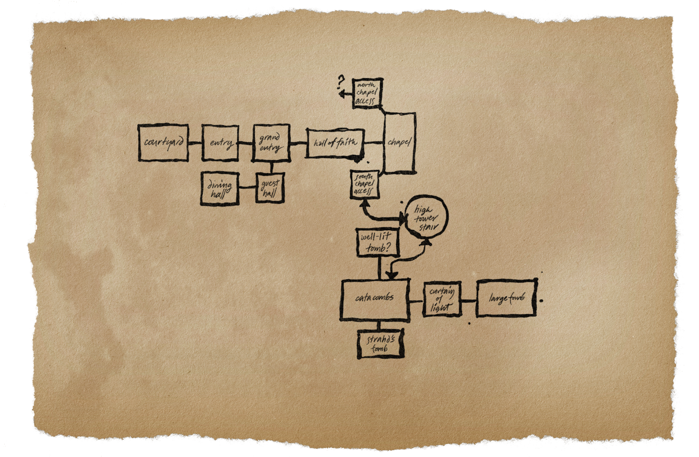
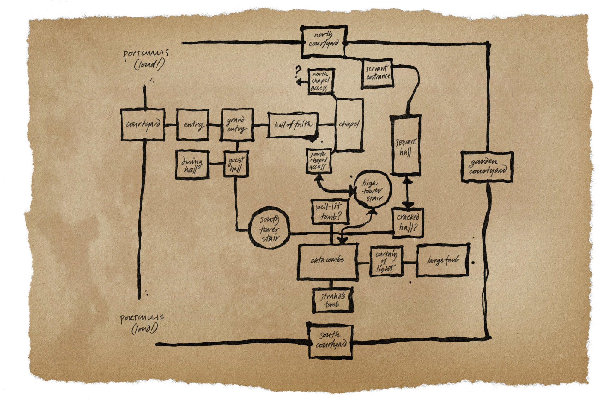
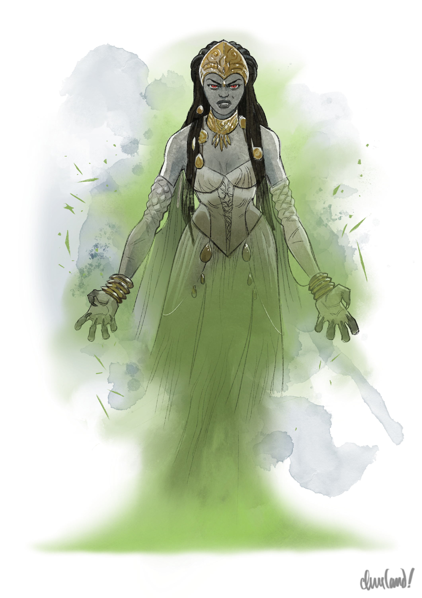
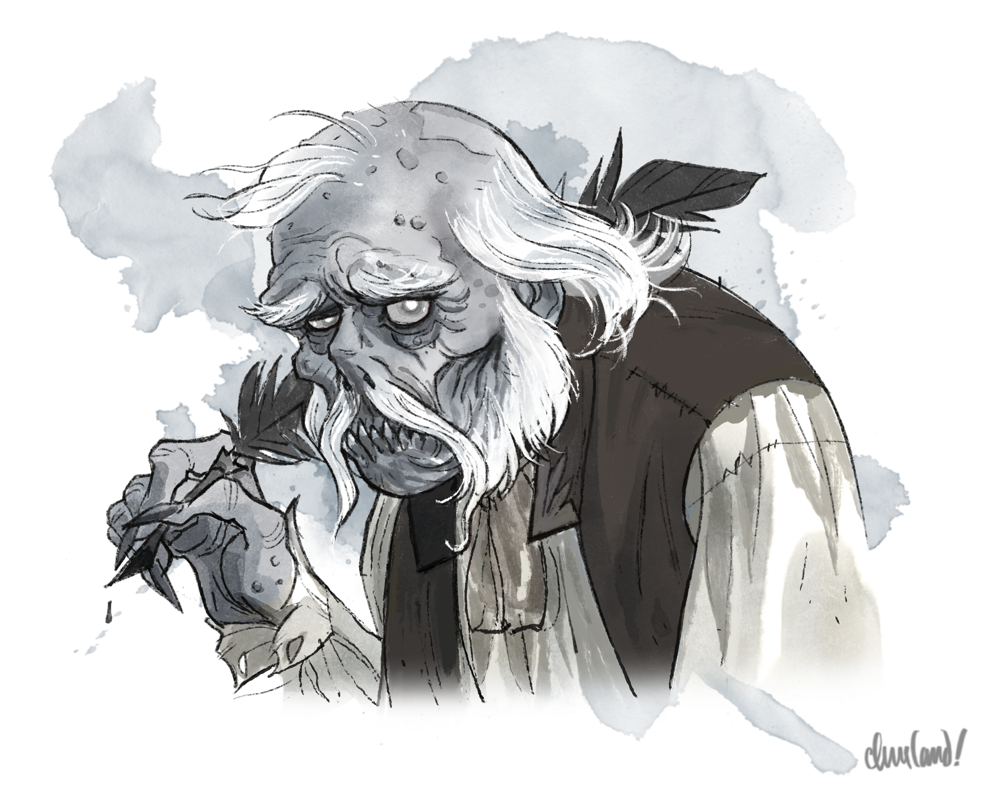
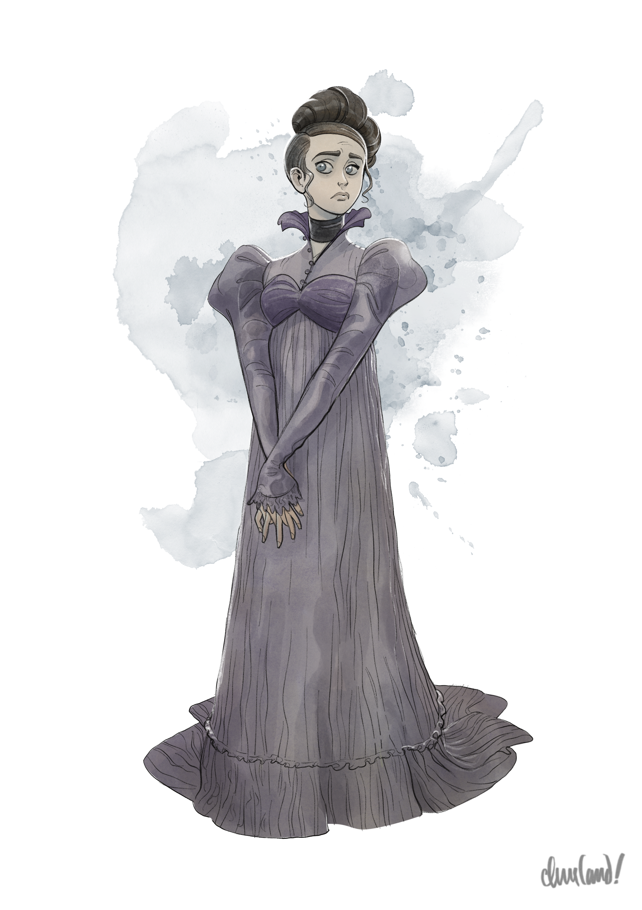
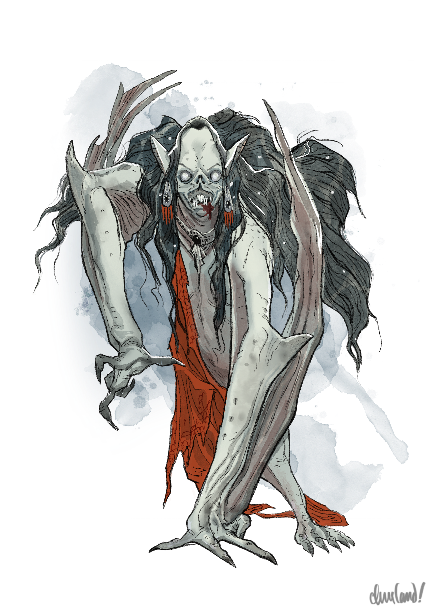
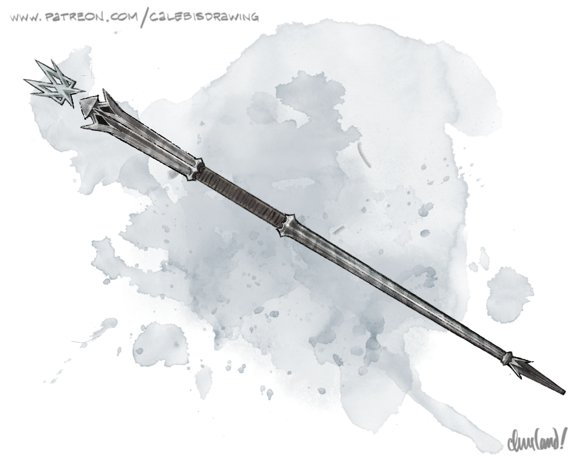

Uma aventura para cinco personagens de 7º nível.
Neste arco, enquanto Strahd está fora da fortaleza, os jogadores devem se infiltrar no Castelo Ravenloft para resgatar diversos prisioneiros e objetos preciosos, incluindo o lobisomem Emil Toranescu, Gertruda, a prometida de Doru, o crânio de Argynvost, o Ícone da Graça do Alvorecer e a há muito perdida lança da Caçadora. Para isso, precisarão driblar os guardas do castelo, percorrer os corredores sinuosos de Ravenloft e derrotar as consortes, os servos e os demais lacaios de Strahd.
Enquanto trabalham para entrar no castelo, terão de evitar a atenção dos corpos anciões (wights) que patrulham os parapeitos. Pela entrada principal, um bando de gárgulas aguarda de tocaia, enquanto a vampira Ludmilla Vilisevic espreita nas proximidades. Na ala dos criados, um par de vampiros servos se esconde em meio à escuridão, com a antiga armadilha do elevador do castelo logo adiante. Nos aposentos do rei, mais acima, a vampira Anastrasya Karelova mantém Gertruda trancafiada com a ajuda de quatro corpos anciões de guarda — e, no tesouro ali perto, um perseguidor invisível defende as riquezas mais preciosas de Strahd.
Muito acima do restante do castelo, o retrato guardião de Strahd vigia o patamar silencioso diante da suíte de hóspedes, enquanto o coven de bruxas prepara uma beberagem nociva para criar os arautos da vindoura praga de zumbis de Strahd. Nas guarnições, um exército morto-vivo aguarda em silêncio as ordens de seu mestre. Nas masmorras lá embaixo, a vampira Volenta Popofsky e seus zumbis imundos guardam o lugar de Emil nas celas negras do castelo, enquanto, nas catacumbas, o Ícone da Graça do Alvorecer e a lança da Caçadora repousam nas criptas de Santa Markovia e do Rei Dostron, o Nascido do Inferno.
E, nas sombras, Rahadin, o camerlengo de Strahd, senta-se e medita, preparando-se para seu sacrifício no dia da Grande Conjunção . . .
Para evitar que vampiros servos fiquem presos no lugar por causa de habilidades dos jogadores que reduzem o deslocamento, todos os vampiros servos de Barovia possuem a seguinte habilidade: Agarrador Veloz. O vampiro servo não precisa gastar deslocamento extra para mover uma criatura agarrada por ele, desde que a criatura agarrada seja do mesmo tamanho ou menor.
P1. Preparando o Assalto
Ao retornarem ao assentamento que escolheram, na conclusão de Arco O - Jantar com o Diabo, os jogadores podem fazer todos os planos e preparativos que quiserem antes do assalto. Enquanto isso, se os jogadores não sugerirem primeiro, Ezmerelda e Ireena podem apresentar qualquer uma das seguintes sugestões:
- Os jogadores podem usar o apito do Guardião que obtiveram na conclusão de Arco J - A Gema Roubada para pedir a ajuda dos Guardiões da Pena em explorar os arredores, distrair os guardas do castelo e/ou entregar mensagens a qualquer NPC cuja ajuda os jogadores queiram buscar.
- Os jogadores podem pedir a Doru ou a Rudolph van Richten um mapa aproximado do castelo para guiá-los. (Veja Mapeando o Castelo, abaixo, para detalhes.)
- Os jogadores deveriam preparar um plano — e, de preferência, um plano reserva — para entrar no castelo com a ponte levadiça erguida. (Se os jogadores pedirem ideias aos companheiros, Ireena sugere pedir ajuda aos Martikov, enquanto Ezmerelda sugere comprar um gancho de escalada e uma corda no Arasek Stockyard, além de kits de escalada para subir as muralhas externas da fortaleza.)
Se lhe perguntarem, Doru consegue fornecer um mapa tosco, de caixas e linhas, das seguintes áreas, com comentários adicionais:

"Doru's Map" por Caleb Cleveland. Apoie-o no Patreon!
K1. Pátio Frontal (p. 52). “A ponte levadiça dá direto no pátio frontal. Não sei se ela vai estar abaixada para vocês — estava quando entramos pela primeira vez, mas o Mestre… quer dizer, Strahd costumava mantê-la erguida." K7. Entrada (p. 54). “As estátuas de dragão daqui sempre me davam uma sensação estranha, como se estivessem me observando. Tomem cuidado." K8. Grande Entrada (p. 55). “As gárgulas também sempre me davam uma sensação estranha. Juro que uma vez vi uma delas se mexer." K14. Salão da Fé (p. 57). “Esse salão só me dava arrepios." K15. Capela (p. 57). “Tenho certeza de que foi bonita um dia, mas não é mais. Vi um cadáver de armadura lá uma vez, mas no dia seguinte ele tinha sumido. Pode valer a pena dar uma olhada por lá para ver se sobrou alguma coisa." K16. Acesso Norte à Capela (p. 58). “Não sei aonde essa câmara levava, mas parecia subir." K17. Acesso Sul à Capela (p. 58). “Essa câmara descia." K18. Escadaria da Torre Alta (p. 58). “Essa escadaria descia direto até as criptas." K84. Catacumbas (p. 85). “Passei a maior parte do meu tempo aqui, entre os morcegos do teto. Mas nunca consegui decorar todos os nomes das criptas." (Se lhe perguntarem, Doru consegue marcar a localização aproximada das criptas do Rei Dostron e de Santa Markovia, que hoje ficam na Cripta 34 e na Cripta 40, respectivamente.) K85. Tumba de Sergei (p. 93). “Nunca vi o que havia nessa tumba — tinha uma grade bloqueando a entrada. Mas era sempre bem iluminada." K86. Tumba de Strahd (p. 93). “Essa era a tumba dele. Ainda me lembro de abrir o caixão quando marchamos contra ele — e de encontrá-lo vazio." K87. Guardiões (p. 94). “Havia uma estranha cortina mágica bloqueando a escadaria que descia. Eu não sabia se era benéfica ou nociva, mas mesmo assim tentei manter distância." K88. Tumba do Rei Barov e da Rainha Ravenovia (p. 94). “Havia algum tipo de tumba aqui embaixo, mas não sei de quem. Rahadin vinha aqui com frequência."
Se lhe perguntarem, Van Richten consegue fornecer um mapa tosco, de caixas e linhas, das seguintes áreas, com comentários adicionais:

"Van Richten's Map" por Caleb Cleveland. Apoie-o no Patreon!
K1. Pátio Frontal (p. 52). “A ponte levadiça dá no pátio frontal. Observei duas torres de guarda, que presumo conterem o mecanismo que controla a ponte." K2. Portão do Pátio Central (p. 54). “Há dois pátios laterais — um ao norte, outro ao sul. O do norte estava obstruído por uma grade pesada e antiga, que a muito custo consegui erguer. Presumo que o do sul também estivesse." K3. Pátio dos Criados (p. 54). “O pátio dos criados, presumo, com direito a uma entrada de serviço. A porta emperra, então tomem cuidado caso precisem fugir por ela às pressas." K4. Cocheira (p. 54). “Presumo que abrigue a carruagem de Strahd." K5. Jardim da Capela (p. 54). “Acredito que haja um jardim aqui atrás. Não consegui olhar direito, no entanto." K7. Entrada (p. 54). “Tomem cuidado caso entrem pela frente — sem dúvida, alguma coisa estará observando." K8. Grande Entrada (p. 55). “Um entroncamento importante. Cuidado para não se perderem." K14. Salão da Fé (p. 57). “Tenho quase certeza de que ouvi por um instante um rangido metálico atrás da parede sul, mas suponho que possa ter sido imaginação minha." K15. Capela (p. 57). “Não se esqueçam de conferir a sacada lá em cima, só para garantir que não estão sendo observados." K16. Acesso Norte à Capela (p. 58). “Estou convicto de que essa câmara levava até a sacada que dá para a capela." K17. Acesso Sul à Capela (p. 58). “Essa câmara descia." K18. Escadaria da Torre Alta (p. 58). “Essa escadaria descia direto até as criptas. Notei uma grande fenda em uma das paredes, mais ou menos na metade do caminho — provavelmente uma passagem para um vampiro em forma de névoa." K21. Escada da Torre Sul (p. 59). “O coração do castelo. Se conseguirem achar essa escadaria, sempre saberão onde estão." K23. Entrada dos Criados (p. 59). “A entrada dos fundos. Um excelente lugar para se infiltrar." K61. Armadilha do Elevador (p. 74). “Um corredor silencioso. Notei umas reentrâncias estranhas no chão enquanto fugia do castelo, mas não tive tempo de investigar." K62. Salão dos Criados (p. 76). “O salão dos criados, presumo." K84. Catacumbas (p. 85). “Cuidado para não se perderem aqui embaixo — ou para não abrirem a porta errada. Coisas sombrias espreitam entre as criptas. Tenho certeza de que só pioraram com o despertar de Strahd." K86. Tumba de Strahd (p. 93). “A tumba de Strahd — e o lugar de repouso de seu caixão. Mas tenho certeza de que ele tem o sono leve."
Jogadores que perguntarem a Davian ou Urwin Martikov sobre a planta do Castelo Ravenloft podem descobrir que o castelo tem três torres: (1) a torre norte, que se ergue sobre os alojamentos da guarda, abaixo do castelo, e era usada sobretudo para defender a fortaleza; (2) a torre sul, que conecta todos os níveis do castelo principal e era usada tanto por hóspedes quanto por criados e pela corte de Strahd; e (3) a torre alta, a leste, que vai das profundezas das catacumbas até o ponto mais alto do castelo e possui um poço central que leva direto do topo da torre às catacumbas lá embaixo.
Se os jogadores tentarem recrutar qualquer um dos NPCs a seguir por meio dos corvos dos Keepers, da magia enviar mensagem (sending) ou de meios semelhantes, as respostas são as seguintes:
Ismark Kolyanovich (Barovia). Ismark se sente honrado com o pedido dos jogadores e ansioso para ajudar, mas reluta em dar a Strahd mais um motivo para punir os aldeões de Barovia. Jogadores que informarem a Ismark que portam o Símbolo Sagrado do Corvo (Holy Symbol of Ravenkind), ou que apresentarem um plano sólido para disfarçar seus movimentos e sua identidade dos espiões de Strahd, podem convencê-lo a se juntar a eles no assalto com um teste de Carisma (Persuasão) CD 20 bem-sucedido, feito com vantagem caso os jogadores tanto informem Ismark sobre o Símbolo Sagrado do Corvo quanto apresentem tal plano. Padre Donavich (Barovia/Vallaki). O Padre Donavich informa aos jogadores, com tristeza, que “não é lá grande lutador", mas promete ajudar a curar quaisquer ferimentos que sofram no castelo depois que voltarem. Doru (Vallaki). Se os jogadores contarem a Doru que Gertruda é prisioneira no Castelo Ravenloft, Doru concorda imediatamente em ajudar a resgatá-la. Caso contrário, Doru recusa o convite, pedindo desculpas, por causa do trauma persistente e do medo de recair caso retorne à fortaleza. Padre Lucian Petrovich (Vallaki). O Padre Lucian se surpreende com o pedido dos jogadores, mas se sente honrado com a confiança que depositam nele. Ainda assim, recusa acompanhá-los, observando que tem uma obrigação para com os fiéis de sua congregação: permanecer em Vallaki por eles. Victor Vallakovich (Vallaki). Victor fica surpreso e grato pela fé que os jogadores depositam nele, mas informa, meio sem jeito, que preferiria ficar em Vallaki com Stella. “Se acontecer alguma coisa com vocês, alguém vai precisar continuar aqui", insiste ele. Lady Fiona Wachter (Vallaki). Lady Wachter se sente lisonjeada com o pedido dos jogadores, mas informa, sem meias palavras, que precisa permanecer em Vallaki para cuidar de seu povo e de sua família. Ela também os lembra, com certa aspereza, de que não tem intenção alguma de desafiar Strahd. “Fico feliz em ajudá-los no que puder", repreende-os gentilmente, “mas vocês pedem demais de mim." Kasimir Velikov (Vallaki). Kasimir se surpreende com o pedido dos jogadores, mas informa, com pesar, que não poderá auxiliá-los. (Se insistirem, ele os lembra do genocídio que Strahd cometeu contra seu povo e observa em voz baixa que não tem interesse algum em atrair de novo a fúria de Strahd.) Arrigal & Luvash (Vallaki). Arrigal e Luvash se surpreendem com o pedido dos jogadores, mas o recusam de imediato. Luvash informa aos jogadores que não tem interesse em desafiar Strahd, preferindo permanecer com a filha. Já Arrigal avisa aos jogadores que não pretende colocar a própria vida em risco. “Eu já fiz o que fiz", diz ele, com aspereza. “O que vocês fizerem daqui em diante não é da minha conta." Urwin Martikov (Vallaki). Urwin não vai deixar o Estalagem Água Azul nem sua família. No entanto, fica feliz em levar um recado a Muriel para que ela encontre os jogadores no castelo com vários enxames de corvos que podem servir como uma “ponte aérea" improvisada até a fortaleza. Muriel Vinshaw (Qualquer). Muriel reluta em se aventurar em Ravenloft por causa das ordens de Davian e de seu luto pela morte de Elric, embora fique mais do que feliz em encontrar os jogadores com vários enxames de corvos para auxiliar os esforços deles de entrar no castelo. No entanto, um jogador que prometer a Muriel uma oportunidade de obter justiça por Elric e for bem-sucedido em um teste de Carisma (Persuasão) CD 20 pode convencê-la a se juntar ao grupo dentro do castelo também.
P2. A Velha Estrada Svalich
P2a. Aproximando-se da Encruzilhada
A viagem de Vallaki até a encruzilhada do castelo tem treze quilômetros e meio e leva duas horas e cinquenta minutos. Durante o trajeto, os jogadores passam por Capítulo 6: Old Bonegrinder (p. 125) e pelos B. Portões de Barovia (p. 33) a oeste.
Como alternativa, se os jogadores estiverem viajando desde Barovia, a jornada tem dezessete quilômetros e leva três horas e trinta minutos. Durante o trajeto, os jogadores cruzam o D. Rio Ivlis (p. 35), atravessam a F. Encruzilhada do Rio Ivlis (p. 35), passam pela torre de vigia descrita em Arco C - Vale Adentro e cruzam a ponte nas H. Cataratas Tser (p. 37).
Quando os jogadores cruzarem a ponte nas Cataratas Tser, o revenante descrito em Arco C - Vale Adentro os saúda com familiaridade. Embora o revenante não esteja disposto nem seja capaz de pegar em armas contra Strahd ou seus servos, jogadores que mencionarem sua amizade com Sir Godfrey Gwilym e forem bem-sucedidos em um teste de Carisma (Persuasão) CD 10 podem convencê-lo a tomar alguma medida menor para ajudá-los, tendo sucesso automático caso mencionem sua missão de devolver o crânio de Argynvost à tumba dele. (O revenante não entra no castelo nem em seus terrenos, mas de resto fica feliz em ajudar jogadores criativos.)
Durante a viagem, os jogadores encontram uma caravana de três Vistani conduzindo uma carroça colorida puxada por cavalos, de Tser Pool até Vallaki. (Se os jogadores estiverem viajando de Vallaki, encontram os Vistani perto do monumento ao Buscador descrito em Arco C - Vale Adentro. Se os jogadores estiverem viajando de Barovia, encontram os Vistani na F. Encruzilhada do Rio Ivlis (p. 35).)
Esse encontro começa como descrito em Bandidos Vistani (p. 32). No entanto, quando os Vistani surgirem à vista, leia:
Um borrão de cor perfura o cinza melancólico, revelando uma carroça puxada por cavalos, pintada em vermelhos, azuis e dourados vibrantes. Dois Vistani de roupas berrantes caminham ao lado dela, e um velho Vistani segura as rédeas com delicadeza de seu lugar na boleia, a longa barba grisalha balançando suavemente no vento gelado enquanto ele sopra anéis de fumaça de um velho cachimbo de madeira.
O velho é Stanimir, descrito com mais detalhes em Arco C - Vale Adentro. Os dois Vistani que caminham ao lado de Stanimir se chamam Radu e Elisabeta, e vêm passando o tempo contando histórias de fantasmas cada vez mais horripilantes e macabras (ou comicamente absurdas).
Se avistar os jogadores, ele os reconhece e os cumprimenta calorosamente. Não pergunta sobre os assuntos deles e garante, com um brilho no olhar, que é uma “bela noite para um passeio pela floresta". Se lhe perguntarem por que está viajando pela estrada, Stanimir conta que Madam Eva o incumbiu de entregar um sinal de apreço à nova burgomestre de Vallaki, Lady Fiona Wachter, como gesto de amizade em reconhecimento a seu novo cargo.
Se lhe pedirem para mostrar o “sinal" de Madam Eva, Stanimir tira uma bolsinha de miçangas do manto e deixa os jogadores espiarem lá dentro, revelando um brasão de pedra chato e redondo, gravado com a imagem de uma estrela de três pontas. (Um jogador que tenha recebido o brasão de pedra durante a criação de personagem reconhece a pedra como quase idêntica à sua.) Stanimir nada sabe sobre a importância da pedra para as Ladies of the Fanes, mas pode contar que, segundo Madam Eva, as três pontas da estrela representam presciência, resiliência e coragem.
Só Madam Eva sabe que o brasão de pedra carregado por Stanimir é, secretamente, um símbolo sagrado das Ladies of the Fanes, permitindo que um fiel devoto das Ladies invoque a magia divina delas para alimentar magias.
Se os jogadores estiverem viajando desde Barovia, Stanimir fica feliz em acompanhá-los até a encruzilhada de Ravenloft descrita em I. Carruagem Negra (p. 37) antes de se despedir.
Quer venham de Barovia, quer de Vallaki, se os jogadores reuniram o espírito de Varushka ao medalhão de Katarina em Arco O - Jantar com o Diabo, Stanimir se lembra de repente, antes de partir, de que Madam Eva lhe pediu para dar um presente aos jogadores caso os encontrasse no vale, em agradecimento por terem ajudado uma “querida amiga" dela. (Stanimir não sabe quem é essa amiga.) Stanimir então entrega aos jogadores uma _pedra da clarividência_ antes de lhes desejar uma boa viagem.
Esta pedra lisa, polida e do tamanho da palma da mão é gravada com o entalhe de um olho circular e aviário. Enquanto segura a pedra junto ao olho, o portador pode usar sua ação para sussurrar um local permitido pela magia clarividência (clairvoyance). O portador então recebe os efeitos da magia _clarividência_.
A pedra pode ser usada para conjurar a magia _clarividência_ três vezes. Na terceira vez em que a magia for conjurada, a pedra se desfaz em pó depois que a magia termina.
P2b. Aproximando-se do Castelo
As encruzilhadas do castelo são em grande parte como descritas em I. Carruagem Negra (p. 37), exceto que a carruagem negra de Strahd não está presente. A viagem da encruzilhada até os portões do castelo tem quatro quilômetros e leva cinquenta minutos.
Quando os jogadores se aproximarem do castelo, leia:
Enquanto a estrada da montanha serpenteia entre picos escuros e escarpados, as plantas e árvores por que vocês passam vão ficando cada vez mais ressequidas. Cada novo caule ou tronco parece mais retorcido, mais grotesco que o anterior. Logo a vegetação passa a brotar galhos cruéis, carregados de espinhos, que se agarram em direção ao céu tempestuoso lá em cima.
Um espesso manto de névoa rola sobre a estrada, rastejando pela terra como uma aranha à espreita. Dentro dele, formas sinistras às vezes se formam e se dissipam — uma mão que agarra, uma serpente que se contorce, um rosto que grita — e então desaparecem, tão rápido quanto vieram.
Os portões de Ravenloft são em grande parte como descritos em J. Portões de Ravenloft (p. 38). No entanto, revise a descrição desta área da seguinte forma:
Depois de serpentear entre os picos escarpados da montanha, a estrada faz uma curva abrupta para o leste. Duas torres de guarda de pedra se erguem diante de vocês, suas portas de madeira apodrecida rangendo ao vento. Além dessas torres gêmeas está a beirada de um abismo de quinze metros de largura, cheio de névoa, que despenca até profundezas desconhecidas.
Do outro lado do abismo, a velha ponte levadiça de madeira escorada do castelo permanece desafiadoramente fechada. As grandes torres de Ravenloft se erguem acima dela, suas silhuetas turvas contra o céu escurecido.
Se algum jogador tiver Percepção passiva (Sabedoria) 14 ou mais, acrescente:
Duas figuras distantes patrulham os parapeitos do castelo, logo acima da ponte levadiça.
As figuras são corpos anciões. (Como estão patrulhando as muralhas, os corpos anciões não notam os jogadores de imediato.)
P2c. A Partida de Strahd
Aproximadamente quinze minutos depois do anoitecer, Strahd desce até a Cripta 39 (p. 93) e busca Beucephalus em sua cripta. Strahd então monta o pesadelo, sobe voando pelo K18a. Poço da Torre Alta (p. 58) e emerge do K59. Pico da Torre Alta (p. 73) nos céus acima de Ravenloft. Leia:
Uma brasa flamejante emerge do pico mais alto do castelo e rasga um rastro incandescente pelo céu, rumo ao oeste. Vocês vislumbram por um instante um corcel negro como ônix, a crina banhada em chamas carmesim, e uma silhueta alta e ricamente vestida em seu dorso — e então o ar ondula ao redor deles, e ambos desaparecem no abismo do céu noturno.
Depois de partir do Castelo Ravenloft, Strahd cavalga primeiro para o Mountain Fane, situado sob a colina de Velho Triturador de Ossos. Em seguida, cavalga para o Swamp Fane, em Berez, e depois para o Forest Fane, em Yester Hill. Em cada local, ele realiza um sacrifício de sangue e entoa um ritual que vincula o Fane ao Coração do Pesar, em preparação para a iminente Grande Conjunção.
Strahd retorna ao castelo aproximadamente doze horas depois de sua partida, pouco depois das cinco da manhã. (Jogadores que não fizerem um descanso longo dentro do castelo, portanto, dificilmente o encontrarão.)
P2d. Atravessando o Abismo
Os jogadores podem usar qualquer um dos métodos a seguir para ter acesso à fortaleza interna, ou qualquer outro método razoável:
- Voo mágico (por exemplo, voo [fly] ou metamorfose [polymorph]) para cruzar o abismo pelo ar
- Teleporte mágico (por exemplo, porta dimensional [dimension door]) para se teleportar através do abismo
- Ganchos de escalada e cordas para se balançar por cima do abismo
São necessários pelo menos dois enxames de corvos para carregar um personagem de tamanho Médio, enquanto basta um enxame para carregar um personagem de tamanho Pequeno ou menor. (Um enxame de corvos que carregue um personagem se move com metade do deslocamento.)
Seis corpos anciões patrulham as muralhas do castelo a todas as horas do dia e da noite. (Veja o diagrama abaixo para as posições e rotas de patrulha dos corpos anciões ao longo das muralhas, com cada escudo preto representando um corpo ancião e cada seta preta pontilhada marcando a rota de patrulha daquele corpo ancião.)
Cada corpo ancião carrega uma trompa grande e inconfundível, entalhada do fêmur de um lobo atroz, visivelmente pendurada em seu cinto. No segundo turno de um corpo ancião em combate, ele usa sua ação para soprar a trompa, alertando todos os outros corpos anciões sobre a presença de intrusos. Uma vez alertado, um corpo ancião usa todo o seu deslocamento para se mover na direção da trompa. Se um intruso estiver ao alcance de seu arco longo, o corpo ancião então faz dois ataques com o arco longo usando seu ataque múltiplo. Caso contrário, ele usa a ação Disparada para continuar se movendo na direção da trompa.
Assim que um corpo ancião estiver ao alcance corpo a corpo de um intruso, ele usa seu ataque múltiplo para atacar com a espada longa e o drenar vida a cada rodada.
 Os jogadores podem usar qualquer um dos métodos a seguir para distrair os corpos anciões que patrulham a área acima da ponte levadiça:
Os jogadores podem usar qualquer um dos métodos a seguir para distrair os corpos anciões que patrulham a área acima da ponte levadiça:
- Ilusões mágicas (por exemplo, imagem maior [major image]), ofuscação (por exemplo, nuvem de névoa [fog cloud]) ou invisibilidade.
- Iscas para distração (por exemplo, enxames de corvos comandados por Muriel, ou a magia encontrar familiar [find familiar])
- Qualquer outro método razoável (por exemplo, esperar até que ambos os corpos anciões estejam de costas para a ponte levadiça)
P3. Os Terrenos do Castelo
Se os jogadores reuniram o espírito de Varushka ao colar de Katarina em Arco O - Jantar com o Diabo, em um momento de sua escolha em que os jogadores estiverem envolvidos em um encontro de combate no Castelo Ravenloft e ao menos dois terços deles estiverem ensanguentados, o espírito de Varushka aparece para ajudá-los em demonstração de gratidão. O espírito de Varushka, que usa as estatísticas de um poltergeist com 45 pontos de vida, permanece por no máximo 1 minuto e possui as seguintes propriedades adicionais:
- Ela não é invisível; em vez disso, tem a aparência de uma sombra com a silhueta de uma mulher esguia usando vestido e avental. (Embora não consiga falar com os jogadores nessa forma, Varushka pode se comunicar por meio de acenos e gestos simples.)
- Ela ganha a seguinte reação adicional: Escudo do Poltergeist. Em resposta a Varushka ou a uma criatura a até 1,5 metro dela ser alvo de um ataque corpo a corpo, Varushka soma 2 à CA do alvo contra o ataque desencadeador.
Este arco presume que os jogadores visitem as catacumbas depois de completar todos os outros objetivos principais (isto é, resgatar Gertruda, libertar Emil e obter o crânio de Argynvost). Quando o fizerem, Rahadin bloqueia a saída deles das catacumbas depois que visitarem a cripta de Santa Markovia, como descrito em Criptas Sul, Terceira Fileira.
Caso, em vez disso, os jogadores visitem a cripta de Santa Markovia antes de completar um de seus outros três objetivos principais, Rahadin não aparece nas catacumbas. Em vez disso, assim que os jogadores se dispuserem a deixar o Castelo Ravenloft, Rahadin surge para impedir sua partida na próxima vez em que passarem por uma das seguintes áreas:
- K8. Grande Entrada (p. 55), se os jogadores estiverem tentando sair pela K7. Entrada (p. 54),
- K78. Sala do Braseiro (p. 82), se os jogadores estiverem tentando sair pelo braseiro de teleporte de lá,
- K23. Entrada dos Criados (p. 59), se os jogadores estiverem tentando sair por essa rota,
- K46. Parapeitos (p. 68), se os jogadores estiverem tentando sair por essa rota, e
- K20. Coração do Pesar (p. 59) em qualquer outro caso.
Se Rahadin confrontar os jogadores na K78. Sala do Braseiro (p. 82), ele remove as sete pedras encaixadas na borda do braseiro e as coloca em uma pequena bolsa de couro antes que eles entrem na sala. Em seguida, amarra a bolsa de couro ao cinto. Se os jogadores notarem o desaparecimento das pedras antes de notarem os gritos dos mortos de Rahadin, ele emerge de seu esconderijo atrás de um dos golens de ferro e pergunta: “Procurando por estas?" Um jogador pode tentar cortar a bolsa do cinto de Rahadin fazendo um ataque contra a CA de Rahadin com desvantagem. Se acertar, a bolsa se solta caso o cordão que a prende ao cinto de Rahadin sofra pelo menos 1 ponto de dano perfurante, cortante, de fogo, ácido, necrótico, radiante ou de energia. Rahadin também deixa cair a bolsa automaticamente se usar o amuleto de Ravenloft para atravessar uma parede, um teto ou um piso do castelo.
Veja Criptas Sul, Terceira Fileira para mais informações sobre as estatísticas e a aparência de Rahadin.
Roubar o crânio de Argynvost completa um marco da história. Quando os jogadores partirem de Ravenloft, conceda 4.000 PX a cada jogador. Se os jogadores deixarem o Castelo Ravenloft depois de completar um ou mais dos seguintes objetivos adicionais, conceda a cada jogador:
- 250 PX se obtiveram o Ícone da Graça do Alvorecer na cripta de Santa Markovia
- 250 PX se resgataram Emil Toranescu
- 250 PX se resgataram Gertruda
- 250 PX se obtiveram a Lança da Caçadora na cripta do Rei Dostron
- 250 PX se saquearam o tesouro de Strahd
P3a. Pátio Frontal
Esta cena ocorre no Capítulo 4, Área K1.
Esta área é em grande parte como descrita em K1. Pátio Frontal (p. 52). No entanto, as portas que dão para a fortaleza estão fechadas.
Se os jogadores ainda não alertaram os corpos anciões no alto das muralhas, eles precisam ser bem-sucedidos em um teste de grupo de Destreza (Furtividade) CD 14 para evitar serem detectados a cada vez que atravessarem os terrenos sem parar. Se os jogadores falharem no teste, os corpos anciões atacam do alto das muralhas com seus arcos longos, mas não seguem os jogadores para dentro do castelo.
Jogadores que entrarem pelas portas principais da fortaleza deixam os terrenos do castelo e entram em P4. Alas Comuns do Castelo pela Entrada Principal.
P3b. Portão do Pátio Central
Estas cenas ocorrem no Capítulo 4, Área K2.
Estes pátios norte e sul são em grande parte como descritos em K2. Portão do Pátio Central (p. 54). Além disso, uma criatura que tentar erguer uma das grades destas áreas deve ser bem-sucedida em um teste de Destreza (Furtividade) CD 13 com desvantagem para evitar alertar quaisquer corpos anciões nas proximidades.
P3c. Pátio dos Criados
Esta cena ocorre no Capítulo 4, Área K3.
Esta área é como descrita em K3. Pátio dos Criados (p. 54).
Jogadores que entrarem pela porta de madeira daqui deixam os terrenos do castelo e entram na P5. Ala dos Criados pela Entrada dos Criados.
P3d. Cocheira
Esta cena ocorre no Capítulo 4, Área K4.
Esta área é como descrita em K4. Cocheira (p. 54).
P3e. Jardim da Capela
Esta cena ocorre no Capítulo 4, Área K5.
Esta área é como descrita em K5. Jardim da Capela (p. 54).
P3f. Mirante
Esta cena ocorre no Capítulo 4, Área K6.
Esta área é como descrita em K6. Mirante (p. 54).
Jogadores que usarem cordas, voo ou outros meios para descer até as janelas na face do penhasco abaixo do mirante podem deixar os terrenos do castelo e entrar nas P12. Catacumbas pela Tumba do Rei e da Rainha, em P12b. Catacumbas Centrais.
P4. Alas Comuns do Castelo
Esta área do castelo, que inclui a entrada principal, o salão de jantar do castelo e a capela no primeiro andar, bem como o salão de audiências do rei no segundo, foi construída para receber os muitos peticionários e hóspedes que visitavam o castelo em seu auge. Outrora usada para eventos públicos, dias sagrados e assuntos reais, desde então caiu em desuso e abandono, e seus salões antes régios estão agora antigos e empoeirados.
P4a. Alas Comuns do Castelo, Primeiro Andar
Entrada Principal
Esta cena ocorre no Capítulo 4, Área K7.
Esta área é em grande parte como descrita em K7. Entrada (p. 54). No entanto, há apenas duas estátuas de filhote de dragão vermelho, em vez de quatro. (Como na campanha original, os dragões só atacam estranhos que estejam saindo do castelo, não entrando nele.)
Jogadores que partirem pelas portas duplas daqui deixam as alas comuns do castelo e entram nos P3. Terrenos do Castelo pelo P3a. Pátio Frontal.
Saguão Principal
Esta cena ocorre no Capítulo 4, Áreas K8, K9 e K19.
Esta área é em grande parte como descrita em K8. Grande Entrada (p. 55), K9. Salão dos Hóspedes (p. 55) e K19. Grande Patamar (p. 58). No entanto, reduza o número de gárgulas de oito para quatro.
Nível de Combate: Leve Nível Esperado dos Personagens: 7 Aliados: Ireena Kolyana (ND 2), Ezmerelda d'Avenir (ND 4) Consumo Esperado de PV: 16%
Inimigos:
| 3 Jogadores | 4 Jogadores | 5 Jogadores | 6 Jogadores | |
|---|---|---|---|---|
| Gárgula | 3 | 3 | 4 | 5 |
A Primeira Visita. Na primeira vez em que os jogadores entrarem nesta área, um glifo de vigia (glyph of warding) escondido em meio à poeira do teto é ativado, conjurando uma magia imagem maior que se origina do órgão no K10. Salão de Jantar (p. 56). (A imagem maior é a fonte dos “tons de órgão tristes e majestosos" descritos em K8. Grande Entrada (p. 55).)
Pouco depois de os jogadores entrarem nesta área pela primeira vez, a imagem maior muda abruptamente. Leia:
O grito aterrorizado de uma mulher ecoa do salão de jantar — e a música do órgão se interrompe de súbito.
Quando o grito da mulher ecoar, Ludmilla Vilisevic, uma das noivas vampíricas de Strahd, ouve o alvoroço e deixa os P9. Aposentos do Coven, conjurando forma gasosa (gaseous form) e descendo a K48. Escada Lateral (p. 70) e a K21. Escada da Torre Sul (p. 59) até o K9. Salão dos Hóspedes (p. 56). Em seguida, ela sobe o K19. Grande Patamar (p. 58) e se esconde, esperando o retorno dos jogadores.
No entanto, se os jogadores não entrarem no K10. Salão de Jantar (p. 56) e, em vez disso, subirem a K21. Escada da Torre Sul (p. 59), Ludmilla os ouve chegando e retorna ao K47. Retrato de Strahd (p. 68). Ali, para atrair os jogadores até o telhado, ela usa seu ataque de garras para abrir um corte no próprio ombro, deixando o sangue pingar e formar um rastro no chão atrás dela enquanto sobe a K48. Escada Lateral (p. 70) até o K57. Telhado da Torre (p. 72).
Se os jogadores não entrarem no K10. Salão de Jantar (p. 56) nem subirem a K21. Escada da Torre Sul (p. 59) e, em vez disso, subirem o K19. Grande Patamar (p. 58), Ludmilla os ouve chegando e cria um rastro de sangue para atraí-los pelo K25. Salão de Audiências (p. 61) até o K26. Posto de Guarda (p. 61), através do K27. Salão do Rei (p. 61) até a K28. Sacada do Rei (p. 62), e descendo o K29. Patamar Rangente (p. 62) até a K15. Capela (p. 57).
A Segunda Visita. Na segunda vez em que os jogadores entrarem nesta área (por exemplo, depois de investigarem o K10. Salão de Jantar (p. 56)), encontram um tapete espesso de névoa cobrindo todo o piso. Também encontram Ludmilla Vilisevic de pé no centro da K8. Grande Entrada (p. 55), esperando por eles.
Ludmilla cumprimenta os jogadores com frieza e lamenta que os guardas nas muralhas evidentemente não tenham sido capazes de manter “troglodidas" como eles fora da fortaleza. Ela passa então a tentar provocar os jogadores para que a ataquem, preferindo concentrar seus insultos e provocações nos jogadores voltados ao combate corpo a corpo, mais propensos a perder a paciência. (Ludmilla pode ameaçar personagens queridos pelo jogador, questionar seus princípios ou seu senso de honra, ou insinuar que são fracos ou incapazes.)
Se nenhum jogador morder a isca, Ludmilla zomba deles por acreditarem que poderiam se igualar à “mais velha e maior discípula de Baba Lysaga" (ela mesma) e conclui que terá prazer em levar seus restos “frios e imóveis" ao “Conde von Zarovich" — depois de dissecá-los ela mesma. Em seguida, parte para o ataque.
Nível de Combate: Leve (primeira fase), Leve (segunda fase) Nível Esperado dos Personagens: 7 Aliados: Ireena Kolyana (ND 2), Ezmerelda d'Avenir (ND 4) Consumo Esperado de PV: 12% (primeira fase), 12% (primeira fase), totalizando 24%
Balanceamento:
Se você tiver menos ou mais de 5 jogadores, modifique o encontro das seguintes maneiras:
| Número de Jogadores | Modificação |
|---|---|
| 3 | Reduza os pontos de vida de Ludmilla para 58 em cada fase, o dano de seu Raio Congelante para 1d6 de dano de frio por raio e o dano de sua Represália da Maga para 2d4 de dano. Na segunda fase, remova o dano necrótico de suas Garras e Estilhaços de Névoa. |
| 4 | Reduza os pontos de vida de Ludmilla para 58 em cada fase, o dano de seu Raio Congelante para 1d6 de dano de frio por raio e o dano de sua Represália da Maga para 2d4 de dano. Na segunda fase, remova o dano necrótico de suas Garras e Estilhaços de Névoa. |
| 6 | Aumente os pontos de vida de Ludmilla para 94 em cada fase e o número de raios para cinco (reduza o dano de cada raio para 2d4 de dano de frio). Na segunda fase, aumente o dano necrótico de suas Garras e Estilhaços de Névoa para 1d8. |
Em qualquer dos casos, na contagem de iniciativa 20 da primeira rodada de combate, as quatro gárgulas começam a se mexer, rolando iniciativa e entrando na briga em seus turnos. Use o statblock abaixo para as gárgulas, em vez daquele do _Monster Manual_, mas aumente os pontos de vida de cada gárgula para 45, em vez de 37.
Ludmilla sempre usa sua ação bônus para conjurar escuridão (darkness) em seu primeiro turno de combate. Se a magia não for anulada e o Símbolo Sagrado do Corvo estiver visível, ela então usa imediatamente sua reação passo enevoado (misty step) para se teleportar até dentro da escuridão, escondendo-se três metros acima do jogador que porta o símbolo. Ludmilla então usa sua ação para tentar tomar o símbolo do corpo do jogador. (Se o símbolo não estiver visível, Ludmilla recua imediatamente para a capela, como descrito abaixo, esperando que as gárgulas enfraqueçam os jogadores antes que ela mesma entre em combate.)
Se Ludmilla não estiver escondida do alvo, sua tentativa de tomar o Símbolo Sagrado do Corvo falha automaticamente. Caso contrário, o portador do símbolo deve fazer um teste de resistência de Destreza CD 18 para impedir que Ludmilla o remova.
Tendo Ludmilla conseguido ou não roubar o símbolo, ela então recua subindo o K19. Grande Patamar (p. 58) e libera a concentração em sua magia escuridão. Se tiver ficado com o símbolo, ela provoca os jogadores com um convite para “virem buscá-lo de volta". Em seguida, atravessa o K25. Salão de Audiências (p. 61) até o K26. Posto de Guarda (p. 61), e passa pelo K27. Salão do Rei (p. 61) até a K28. Sacada do Rei (p. 62), antes de descer até a K15. Capela (p. 57). (Depois de seu encontro com os jogadores em Yester Hill, Ludmilla fica feliz em deixar que as gárgulas da Grande Entrada os liquidem ou os enfraqueçam antes de confrontá-los ela mesma.)
Como criaturas só podem fazer ataques de oportunidade contra alvos que conseguem ver, um personagem cego pela escuridão de Ludmilla não pode fazer ataques de oportunidade contra ela enquanto ela tenta roubar o Símbolo Sagrado do Corvo.
Se os jogadores mataram Volenta em Arco D - O Banquete de St. Andral, Ludmilla carrega um chaveiro com as chaves de todas as celas das masmorras, além da chave da coleira de espinho de prata de Emil.
Ludmilla Vilisevic, Elementalista
Morto-vivo Médio, neutro e mauClasse de Armadura 15
Pontos de Vida 82 (11d8 + 33)
Deslocamento 9 m
| FOR | DES | CON | INT | SAB | CAR |
|---|---|---|---|---|---|
| 16 (+3) | 16 (+3) | 16 (+3) | 18 (+4) | 10 (+0) | 12 (+1) |
Testes de Resistência Des +6, Int +7, Sab +3
Perícias Arcanismo +7, Percepção +3, Furtividade +6
Resistências a Dano necrótico; concussão, perfurante e cortante de ataques não mágicos
Sentidos Percepção passiva 13
Idiomas Abissal, Comum, Dracônico, Infernal
Nível de Desafio 8
Bônus de Proficiência +3
Combatente de Curta Distância. Ludmilla não tem desvantagem em suas jogadas de ataque à distância quando está a até 1,5 metro de uma criatura hostil.
Visão do Diabo. Ludmilla enxerga normalmente na escuridão, tanto mágica quanto não mágica, até uma distância de 36 metros.
Regeneração. Ludmilla recupera 10 pontos de vida no início de seu turno se tiver ao menos 1 ponto de vida e não estiver sob a luz do sol nem em água corrente. Se ela sofrer dano radiante (o que inclui dano de água benta), esta característica não funciona no início de seu próximo turno.
Escalada Aracnídea. Ludmilla consegue escalar superfícies difíceis, inclusive de cabeça para baixo em tetos, sem precisar fazer um teste de habilidade.
Hipersensibilidade à Luz Solar. Sob a luz do sol, Ludmilla sofre 20 de dano radiante no início de seu turno, e tem desvantagem em jogadas de ataque e testes de habilidade.
Agarradora Veloz. Ludmilla não precisa gastar deslocamento extra para mover uma criatura agarrada por ela, desde que a criatura agarrada seja do mesmo tamanho ou menor.
Forma de Névoa. Quando Ludmilla é reduzida a 0 ponto de vida, suas estatísticas são instantaneamente substituídas pelas estatísticas de sua forma de Corruptora da Névoa. Sua contagem de iniciativa não muda. O dano excedente não é transferido para a nova forma, mas ela mantém quaisquer condições que tinha na forma anterior.
Ações
Ataque Múltiplo. Ludmilla faz dois ataques de Toque Chocante.
Toque Chocante. Ataque Mágico Corpo a Corpo: +7 para acertar, alcance 1,5 m, um alvo. Acerto: 9 (2d8) de dano elétrico. Se acertar, o alvo não pode usar reações até o início de seu próximo turno.
Lança Relâmpago. Um raio de relâmpago serpenteia até uma criatura à escolha de Ludmilla que ela possa ver a até 9 metros. Dois raios então saltam daquela criatura para até duas outras criaturas, cada uma delas a até 3 metros da primeira. (Uma criatura só pode ser alvo de um dos raios.) Cada criatura deve fazer um teste de resistência de Destreza CD 15, sofrendo 9 (2d8) de dano elétrico se falhar, ou metade do dano se passar.
Ações Bônus
Manto de Sombras (1/dia). Ludmilla invoca um manto de sombras ao seu redor, que dura 8 horas ou até que ela o dispense com uma ação bônus. Enquanto o manto durar, ela ganha deslocamento de voo de 15 metros (pairar) e tem resistência a dano de concussão, perfurante e cortante causado por ataques com armas corpo a corpo, mágicas e não mágicas. Se Ludmilla resistir a dano dessa forma, o atacante sofre a mesma quantidade e o mesmo tipo de dano causado.
Na primeira vez em que Ludmilla sofrer dano radiante ou dano de água benta enquanto o manto estiver presente, o manto enfraquece, reduzindo seu deslocamento de voo para 7,5 metros e fazendo-a cair 6 metros. Na segunda vez em que Ludmilla sofrer dano radiante ou dano de água benta enquanto o manto estiver presente, o manto desaparece imediatamente.
Duplicata. Ludmilla cria uma ilusão perfeita e intangível de si mesma, que dura até o início de seu próximo turno. A ilusão surge em um espaço desocupado a até 9 metros dela. Ludmilla pode então trocar de lugar magicamente com a ilusão. Enquanto a ilusão durar, ela imita perfeitamente as ações, a fala e os movimentos de Ludmilla, embora não possa atacar. Um jogador pode fazer um teste de Inteligência (Investigação) CD 15 (nenhuma ação necessária) para determinar qual Ludmilla é a ilusória. A ilusão desaparece se sofrer qualquer dano.
Raio Congelante. Ataque Mágico à Distância: +7 para acertar, alcance 36 m, três criaturas. Acerto: 7 (2d6) de dano de frio por raio.
Escuridão (1/dia). Ludmilla conjura escuridão com um raio de 12 metros.
Reações
Ludmilla pode usar até três reações por rodada, mas apenas uma por turno. Se Ludmilla fosse perder suas reações, ela perde apenas uma reação.
Passo Enevoado. Em resposta a sofrer dano ou a conjurar escuridão, Ludmilla conjura passo enevoado. Ela pode então usar imediatamente a ação Esconder-se. Se estiver voando, tem vantagem no teste feito para se esconder.
Interromper Magia (3/dia). Magia de 3º círculo, alcance 18 metros, componentes S, instantânea. Efeito: Ludmilla tenta interromper uma criatura no ato de conjurar uma magia. Se a criatura estiver conjurando uma magia de 3º círculo ou inferior, ela deve fazer um teste de resistência CD 15 usando sua habilidade de conjuração. Se falhar, a magia da criatura falha e não produz efeito algum.
Represália da Maga. Em resposta a ser errada por um ataque mágico ou a passar em um teste de resistência contra uma magia, Ludmilla pode imediatamente obrigar o conjurador a passar em um teste de resistência de Constituição CD 15 ou sofrer 7 (2d6) de dano de energia.
Ludmilla Vilisevic, Corruptora da Névoa
Morto-vivo Médio, neutro e mauClasse de Armadura 15
Pontos de Vida 82 (11d8 + 33)
Deslocamento 9 m, voo 15 m (pairar)
| FOR | DES | CON | INT | SAB | CAR |
|---|---|---|---|---|---|
| 16 (+3) | 16 (+3) | 16 (+3) | 18 (+4) | 10 (+0) | 12 (+1) |
Testes de Resistência Des +6, Int +7, Sab +3
Perícias Arcanismo +7, Percepção +3, Furtividade +6
Vulnerabilidades a Dano frio, elétrico
Resistências a Dano necrótico
Imunidades a Dano concussão, perfurante e cortante de ataques não mágicos
Imunidades a Condições agarrado, caído, impedido
Sentidos Percepção passiva 13
Idiomas —
Nível de Desafio 8 (3.900 PX)
Bônus de Proficiência +3
Combatente de Curta Distância. Ludmilla não tem desvantagem em suas jogadas de ataque à distância quando está a até 1,5 metro de uma criatura hostil.
Regeneração. Ludmilla recupera 10 pontos de vida no início de seu turno se tiver ao menos 1 ponto de vida e não estiver sob a luz do sol nem em água corrente. Se ela sofrer dano radiante ou dano de água benta, esta característica não funciona no início de seu próximo turno.
Escalada Aracnídea. Ludmilla consegue escalar superfícies difíceis, inclusive de cabeça para baixo em tetos, sem precisar fazer um teste de habilidade.
Hipersensibilidade à Luz Solar. Sob a luz do sol, Ludmilla sofre 20 de dano radiante no início de seu turno, e tem desvantagem em jogadas de ataque e testes de habilidade.
Agarradora Veloz. Ludmilla não precisa gastar deslocamento extra para mover uma criatura agarrada por ela, desde que a criatura agarrada seja do mesmo tamanho ou menor.
Sensibilidade ao Frio. Quando Ludmilla sofre dano de frio, ela se congela em uma forma corpórea até o início de seu próximo turno. Enquanto estiver congelada dessa forma, ela perde os atributos de sua característica Forma de Névoa, perde sua imunidade a dano de concussão, perfurante e cortante de armas não mágicas, ganha vulnerabilidade a dano de concussão e trovejante, perde sua imunidade às condições agarrado, caído e impedido, e perde seu deslocamento de voo.
Visão na Névoa. Enquanto estiver dentro de neblina, Ludmilla tem visão às cegas que se estende até a borda da neblina, até um máximo de 18 metros.
Forma de Névoa. Ludmilla pode entrar e ocupar o espaço de outra criatura, e pode passar por buracos pequenos, aberturas estreitas e até por meras rachaduras, embora trate líquidos como se fossem superfícies sólidas. Ela não pode cair e permanece pairando no ar mesmo quando atordoada ou de outra forma incapacitada. No entanto, enquanto faz um ataque corpo a corpo ou agarra um alvo, Ludmilla perde esses atributos, bem como sua imunidade a dano de concussão, perfurante e cortante de armas não mágicas, e perde sua imunidade às condições agarrado, caído e impedido.
Ações
Ataque Múltiplo. Ludmilla faz dois ataques com suas garras. Ela pode substituir um ataque por um ataque de estilhaços de névoa ou de mordida.
Garras. Ataque com Arma Corpo a Corpo: +6 para acertar, alcance 1,5 m, um alvo. Acerto: 8 (2d4 + 3) de dano cortante mais 2 (1d4) de dano necrótico. Em vez de causar o dano cortante, Ludmilla pode agarrar o alvo (CD para escapar 14).
Estilhaços de Névoa. Ataque com Arma à Distância: +6 para acertar, alcance 9 m, um alvo. Acerto: 6 (1d6 + 3) de dano cortante mais 3 (1d6) de dano necrótico.
Mordida. Ataque com Arma Corpo a Corpo: +6 para acertar, alcance 1,5 m, uma criatura voluntária, ou uma criatura que esteja agarrada por Ludmilla, incapacitada ou impedida. Acerto: 6 (1d6 + 3) de dano perfurante mais 7 (2d6) de dano necrótico. O máximo de pontos de vida do alvo é reduzido em uma quantidade igual ao dano necrótico sofrido, e Ludmilla recupera pontos de vida iguais a essa quantidade. O alvo morre se esse efeito reduzir seu máximo de pontos de vida a 0. Se o alvo não tiver sido mordido nas últimas 24 horas, ao terminar um descanso longo ele pode rolar um de seus Dados de Vida e somar seu modificador de Constituição. O máximo de pontos de vida do alvo aumenta em uma quantidade igual ao resultado. (Esse aumento não pode elevar os pontos de vida do alvo acima de seu máximo original.)
Ações Bônus
Dissipar. Se Ludmilla estiver fortemente encoberta por névoa ou neblina, ela usa a ação Esconder-se.
Asfixiar. Uma criatura a até 9 metros deve fazer um teste de resistência de Constituição CD 14. Se falhar, a cabeça do alvo fica envolta por um vácuo de ar por 1 minuto, ou enquanto Ludmilla mantiver sua concentração (como se estivesse concentrada em uma magia). Enquanto estiver envolto por esse vácuo, o alvo fica surdo, não pode falar, não pode respirar (mas pode prender a respiração) e tem um número de níveis de exaustão igual a três menos o número de minutos de ar que lhe restam (mínimo 0). Além disso, um alvo envolto por esse vácuo deve ser bem-sucedido em um teste de resistência de Constituição CD 14 no fim de cada um de seus turnos ou perder 1 minuto de ar em caso de falha.
O alvo perde todos os níveis de exaustão obtidos dessa forma se cair inconsciente ou se o vácuo desaparecer. O vácuo desaparece se Ludmilla usar a ação Esconder-se ou se o alvo em algum momento estiver atrás de cobertura total ou a mais de 9 metros dela.
Reações
Ludmilla pode usar até três reações por rodada, mas apenas uma por turno. Se Ludmilla fosse perder suas reações, ela perde apenas uma reação.
Nuvem de Névoa. Em resposta a sofrer dano, Ludmilla conjura nuvem de névoa sem concentração.
Névoa Venenosa. Em resposta a sofrer dano de uma criatura a até 1,5 metro, Ludmilla obriga aquela criatura a ser bem-sucedida em um teste de resistência de Constituição CD 14 ou sofrer 7 (2d6) de dano de veneno.
Emboscada. Em resposta a ouvir ou ver uma criatura se mover a até 9 metros enquanto está escondida, Ludmilla se move até seu deslocamento em direção a ela e a ataca com suas garras.

"Ludmilla in her second phase" por Caleb Cleveland. Apoie-o no Patreon!
Gárgula
Elemental Médio, Caótico e MauClasse de Armadura 15 (armadura natural)
Pontos de Vida 37 (5d8 + 15)
Deslocamento 4,5 m, voo 9 m
| FOR | DES | CON | INT | SAB | CAR |
|---|---|---|---|---|---|
| 16 (+3) | 8 (-1) | 16 (+3) | 6 (-2) | 11 (+0) | 7 (-2) |
Resistências a Dano perfurante e cortante de ataques não mágicos que não sejam de adamante
Vulnerabilidades a Dano trovejante
Imunidades a Dano veneno
Imunidades a Condições exaustão, petrificado, envenenado
Sentidos visão no escuro 18 m, Percepção passiva 10
Idiomas Térreo
Nível de Desafio 2
Bônus de Proficiência +2
Aparência Falsa. Enquanto a gárgula permanece imóvel, ela é indistinguível de uma estátua inanimada.
Mudança Quente. Se a gárgula sofrer dano de fogo, ela passa a brilhar de calor até o fim de seu próximo turno. Enquanto estiver brilhando, suas garras causam 1d4 de dano de fogo adicional quando acertam. Enquanto estiver brilhando, a gárgula ganha vulnerabilidade a dano de frio e para de brilhar imediatamente se sofrer dano de frio.
Mudança Fria. Se a gárgula sofrer dano de frio, ela se cobre de gelo até o fim de seu próximo turno. Enquanto estiver congelada, suas garras causam 1d4 de dano de frio adicional quando acertam. Enquanto estiver congelada, a gárgula ganha vulnerabilidade a dano de fogo e seu gelo desaparece se ela sofrer dano de fogo.
Corpo de Pedra. Se a gárgula sofrer dano de frio enquanto brilha, dano de fogo enquanto está congelada, dano de concussão de um acerto crítico, ou dano da magia estilhaçar ou de magia semelhante, as asas da gárgula se partem, fazendo-a perder seu deslocamento de voo.
Agarradora. A gárgula tem vantagem em jogadas de ataque feitas contra uma criatura que ela tenha agarrado.
Ações
Ataque Múltiplo. A gárgula faz dois ataques: um com sua mordida e um com suas garras.
Mordida. Ataque com Arma Corpo a Corpo: +5 para acertar, alcance 1,5 m, um alvo. Acerto: 6 (1d6 + 3) de dano perfurante.
Garras. Ataque com Arma Corpo a Corpo: +5 para acertar, alcance 1,5 m, um alvo. Acerto: 6 (1d6 + 3) de dano cortante. Em vez de causar dano, a gárgula pode agarrar o alvo (CD para escapar 13).
Jogadores que subirem o K19. Grande Patamar (p. 58) chegam ao Salão de Audiências.
B2F. Jogadores que descerem dois lances de escada pela K21. Escada da Torre Sul (p. 59) deixam as alas comuns do castelo e entram nas P11. Masmorras pelo Salão da Masmorra.
B1F. Jogadores que descerem um lance de escada pela K21. Escada da Torre Sul (p. 59) deixam as alas comuns do castelo e entram na P5. Ala dos Criados pelo Salão do Elevador.
3F. Jogadores que subirem dois lances de escada pela K21. Escada da Torre Sul (p. 59) deixam as alas comuns do castelo e entram nos P6. Aposentos do Rei pela Antecâmara do Rei.
4F. Jogadores que subirem três lances de escada pela K21. Escada da Torre Sul (p. 59) deixam as alas comuns do castelo e entram na Suíte de Hóspedes pelo Patamar dos Hóspedes.
Salão de Jantar
Esta cena ocorre no Capítulo 4, Área K10.
Esta área é em grande parte como descrita em K10. Salão de Jantar (p. 56). No entanto, não há nenhuma ilusão de Strahd sentado ao órgão. Além disso, revise a descrição da área para que fique assim:
Três enormes lustres de cristal iluminam brilhantemente esta câmara magnífica. Pilares de pedra se erguem contra paredes de mármore branco-baço, sustentando o teto. No centro da sala, uma mesa longa e pesada está coberta por uma fina toalha de cetim branco. No centro da parede oeste, ao fundo, entre espelhos que vão do chão ao teto, ergue-se um órgão imenso, seus tubos outrora estrondosos agora mergulhados em um silêncio profundo e perturbador.
Não há comida alguma sobre a mesa. Em vez disso, o cadáver de uma mulher jaz inerte sobre sua superfície.
O cadáver da mulher é uma ilusão criada pela magia imagem maior e se parece com uma barovense qualquer na casa dos vinte anos. Se os jogadores o tocarem ou interagirem com ele de qualquer forma, ele desaparece. Os eventos descritos em K10. Salão de Jantar (p. 56) que se seguem ao desaparecimento da ilusão então ocorrem, incluindo o “vento feroz e gelado". Leia:
Um vento feroz e gelado se ergue e ruge pelo salão, apagando todas as chamas acesas e mergulhando o majestoso salão na escuridão. Dobradiças antigas guincham, e o ar se enche por um instante do som de muitas portas pesadas se fechando com estrondo, uma após a outra, ao longe.
Jogadores que entrarem pela porta secreta atrás do órgão deixam as alas comuns do castelo e entram na P10. Guarnição pelo Posto de Arqueiros Sul do Primeiro Andar.
Salão da Fé
Esta cena ocorre no Capítulo 4, Área K14.
Esta área é como descrita em K14. Salão da Fé (p. 57).
Capela
Nave e Presbitério
Esta cena ocorre no Capítulo 4, Áreas K15, K16 e K17.
Esta área é em grande parte como descrita em K15. Capela (p. 57), K16. Acesso Norte à Capela (p. 58) e K17. Acesso Sul à Capela (p. 58). No entanto, remova as duas últimas frases da descrição de K15. Capela (p. 57).
Além disso, se os jogadores encontraram Ludmilla no Saguão Principal, acrescente a seguinte frase ao fim da descrição da capela:
Uma névoa rala encobre o chão da capela.
Se Ludmilla conseguiu roubar o Símbolo Sagrado do Corvo, ele está pendurado em uma vidraça quebrada atrás do altar, nove metros acima do chão.
Ludmilla conjurou forma gasosa e se escondeu em um ponto aleatório dentro da nuvem de névoa. Ela revela sua verdadeira forma e ataca os jogadores pouco depois que entrarem na K15. Capela (p. 57). Orgulhosa demais para recuar — e ciente do desagrado de Strahd caso falhe outra vez —, ela luta até a morte.
Não se esqueça dos seis frascos de água benta de Ezmerelda, que ela oferece de bom grado aos jogadores conforme necessário para enfraquecer o manto de sombras de Ludmilla.
Jogadores que subirem a escadaria da torre alta chegam ao pico da torre alta, que é em grande parte como descrito em K59. Pico da Torre Alta (p. 73), exceto que Pidlwick II não pode ser encontrado ali.
Jogadores que descerem a escadaria da torre alta são bloqueados pela parede de alvenaria descrita em K18. Escadaria da Torre Alta (p. 58). Jogadores que contornarem a parede e continuarem a descer deixam as alas comuns do castelo e entram nas Criptas do Castelo pelas P12. Catacumbas.
Escadas da Capela
Esta cena ocorre no Capítulo 4, Área K29.
Esta área é como descrita em K29. Patamar Rangente (p. 62).
Sacada da Capela
Esta cena ocorre no Capítulo 4, Área K28.
Esta área é em grande parte como descrita em K28. Sacada do Rei (p. 62). No entanto, remova os dois zumbis de Strahd.
Além disso, se os jogadores encontraram Ludmilla no Saguão Principal, acrescente a seguinte frase ao fim da descrição desta área:
Uma névoa rala encobre o chão da capela lá embaixo.
Se Ludmilla conseguiu roubar o Símbolo Sagrado do Corvo, ele está pendurado em uma vidraça quebrada atrás do altar, nove metros acima do chão.
Ludmilla conjurou forma gasosa e se escondeu em um ponto aleatório dentro da nuvem de névoa. Ela revela sua verdadeira forma e ataca os jogadores pouco depois que descerem até a K15. Capela (p. 57), ou caso eles de algum modo consigam recuperar o Símbolo Sagrado do alto da sacada. Orgulhosa demais para recuar — e ciente do desagrado de Strahd caso falhe outra vez —, ela luta até a morte.
P4b. Alas Comuns do Castelo, Segundo Andar
Salão de Audiências
Esta cena ocorre no Capítulo 4, Área K25.
Esta área é em grande parte como descrita em K25. Salão de Audiências (p. 61). No entanto, se Ludmilla passou por aqui, as portas que levam ao K27. Salão do Rei (p. 62) estão ligeiramente entreabertas.
Jogadores que encontrarem e entrarem pela porta secreta atrás do trono deixam as alas comuns do castelo e entram na P10. Guarnição pelo Corredor de Acesso ao Posto de Arqueiros Sul do Segundo Andar.
Escritório do Contador
Esta cena ocorre no Capítulo 4, Área K30.
Esta área é em grande parte como descrita em K30. Contador do Rei (p. 62). No entanto, Lief Lipsiege é um corpo ancião leal e neutro, sem ataques. Quando os jogadores se aproximarem dele, o notarem ou interagirem com ele pela primeira vez, leia:
A figura cadavérica sobre o banco é — ou um dia foi — um homem idoso, vestido com uma camisa branca de gola alta, outrora impecável, um colete marrom-escuro e um lenço de pescoço rosa-claro, tudo desbotado e apodrecido pelos estragos do tempo. Os cabelos brancos e ralos, penteados para o lado, estão cuidadosamente repartidos sobre a testa pálida e enrugada, e o rosto encovado, cinza-cinzas, é emoldurado por um par de costeletas impressionantemente fartas. As mãos quase esqueléticas tremem de leve enquanto ele rabisca em um pergaminho esfarelado, e seus olhos cinzentos não se voltam nem uma vez na direção de vocês.
Quando Khazan se tornou o conselheiro arcano de Strahd, quatro séculos atrás, Strahd já contava também com os serviços de Lief Lipsiege, um idoso mestre contador inteiramente dedicado a seu ofício. Não querendo perder os serviços de Lief quando este morreu, Strahd — depois de prometer a Lief que seu salário continuaria a sustentar seus irmãos e os descendentes deles — trabalhou com Khazan para transformar Lief em um corpo ancião, permitindo assim que ele desse continuidade à obra de sua vida mesmo na morte-vida. Desde então, Lief serve obedientemente como contador de Strahd, embora sua mente tenha se dispersado e sua memória tenha ficado cheia de lacunas ao longo dos muitos anos desde sua morte.

"Lief Lipsiege" por Caleb Cleveland. Apoie-o no Patreon!Lief não está acorrentado à sua escrivaninha de madeira. No entanto, ele não sai da sala voluntariamente sob nenhuma circunstância.
Se for tratado com gentileza e deixado divagar sobre as riquezas, conquistas e lançamentos tributários variados de Strahd, Lief acaba mencionando (acidentalmente) a localização do K41. Tesouro (p. 67), em vez da localização do Símbolo Sagrado do Corvo. Leia:
“Se ao menos o Conde Strahd me deixasse tabular direito os itens que ele acrescentou ao velho tesouro ao longo dos anos", resmunga Lief. “Bugigangas e quinquilharias demais, tudo coberto de poeira. Nenhum lançamento no livro-razão, nenhuma contagem, e ele espera que os números batam!" O velho corpo ancião coça o queixo, grunhindo. “Ao menos a velhota fica de olho neles, Deus a abençoe. Um caso terrível, quando ela era viva. Uma verdadeira pena."
Lief então continua a divagar. Se for interrompido e questionado mais a fundo sobre “a velhota" que mencionou, Lief faz uma pausa para lembrar e então recorda em voz alta que ela era “a mulher ruiva". Se Ireena estiver presente, ele aponta um dedo ressequido na direção dela e acrescenta: “Como ela." (Embora não se lembre do nome dela nem do que lhe aconteceu, Lief está se referindo ao retrato de Tatyana Federovna.)
Se lhe perguntarem como acessar o “velho tesouro", Lief só se dispõe a ajudar os jogadores se eles primeiro prometerem tabular e registrar integralmente os itens ali encontrados, e não levar nenhum para si. (“O Conde Strahd sempre acaba descobrindo", ele chia, agitando um dedo ossudo para eles.) Jogadores que pretendam roubar o tesouro podem convencer Lief de sua boa-fé com um teste de Carisma (Enganação) CD 12 bem-sucedido. Se conseguirem, Lief admite, sem jeito, que não se recorda da maneira correta de entrar, mas lembra que envolvia “cutucar" algo no gabinete do terceiro andar. (Lief não se lembra disso, mas está se referindo ao mecanismo do atiçador junto à lareira em K37. Gabinete (p. 66).
Salão do Rei
Esta cena ocorre no Capítulo 4, Área K27.
Esta área é em grande parte como descrita em K27. Salão do Rei (p. 62), incluindo o evento Voo do Vampiro (p. 61). No entanto, esta sala agora contém a tapeçaria descrita em K83a. Patamar da Escada Espiral (p. 85). Acrescente a descrição dessa tapeçaria ao fim da descrição desta área.
Um jogador pode encontrar a porta secreta descrita em K27. Salão do Rei (p. 61) atrás da tapeçaria do Rei Barov e seu exército. A porta secreta pode ser encontrada como descrito em As Terras de Barovia: Características Comuns (p. 33), ou gastando 1 minuto vasculhando a parede em busca de portas ocultas.
Jogadores que encontrarem e entrarem pela porta secreta atrás da tapeçaria deixam as alas comuns do castelo e entram na P5. Ala dos Criados pelo Acesso ao Elevador do Segundo Andar.
P5. Ala dos Criados
Esta área do castelo, que inclui a entrada dos criados, os alojamentos dos criados no primeiro e no segundo andar, o poço do elevador do castelo e o salão dos criados, a adega e a cozinha no subsolo, servia outrora como principal centro da atividade dos criados no castelo. Daqui, Rahadin ou o mordomo do castelo supervisionavam as operações da fortaleza ou despachavam criados para os cantos mais distantes dela, incluindo os aposentos reais, a suíte de hóspedes ou a guarnição dos guardas.
P5a. Ala dos Criados, Primeiro Andar
Entrada dos Criados
Esta cena ocorre no Capítulo 4, Área K23.
Esta área é em grande parte como descrita em K23. Entrada dos Criados (p. 59). No entanto, acrescente o seguinte ao fim da descrição desta área:
Um cadáver ressequido jaz caído contra a mesa, imóvel. Um rastro de sangue seco leva dele até os degraus que descem.
Quatro furos desfiguram o pescoço do cadáver. Um jogador que for bem-sucedido em um teste de Sabedoria (Medicina) CD 10 descobre que o cadáver foi dessangrado. (O corpo foi deixado aqui pelos dois vampiros servos que espreitam na Adega.)
Alojamento dos Criados
Esta cena ocorre no Capítulo 4, Área K24.
Esta área é como descrita em K24. Alojamento dos Criados (p. 61).
P5b. Ala dos Criados, Segundo Andar
Andar Superior dos Criados
Esta cena ocorre no Capítulo 4, Área K34.
Esta área é como descrita em K34. Andar Superior dos Criados (p. 64).
Jogadores que encontrarem e atravessarem a porta secreta daqui deixam a ala dos criados e entram na P10. Guarnição pelo Patamar dos Criados.
Acesso ao Elevador do Segundo Andar
Esta cena ocorre no Capítulo 4, Áreas K31 e K31a.
Esta área é como descrita em K31. Sala de Armadilhas (p. 63) e K31a. Poço do Elevador (p. 63).
A armadilha do elevador foi um dia um elevador de verdade, projetado pelo genial fabricante de brinquedos Fritz von Weerg. Em seu auge, os criados o usavam para chegar ao Salão do Rei (para acessar o Salão de Audiências e a Sacada da Capela), ao Corredor de Acesso ao Campanário (para tocar o sino marcando refeições, manhãs, emergências e outras ocasiões) e à P8. Suíte de Hóspedes (para levar refeições a hóspedes e dignitários em visita). Depois que se tornou vampiro, porém, Strahd transformou o elevador em uma armadilha para ladrões e caçadores de vampiros.
Um jogador que inspecionar o maquinário daqui e for bem-sucedido em um teste de Inteligência (Investigação) CD 15 percebe que o elevador foi reconfigurado para ser acionado por um mecanismo de gatilho em outro ponto do castelo. Um jogador que em seguida for bem-sucedido em um teste de Destreza (Ferramentas de Ladrão ou de Funileiro) CD 20 pode acionar manualmente o mecanismo do elevador, fazendo-o subir ou descer até qualquer andar acessível. (Um jogador que acionar o elevador dessa forma antes de entrar nele deve ser bem-sucedido em um teste de resistência de Destreza CD 15 para entrar no elevador antes que ele parta.)
Jogadores que encontrarem e atravessarem a porta secreta deixam a ala dos criados e entram nas P4. Alas Comuns do Castelo pelo Salão do Rei.
P5c. Ala dos Criados, Terceiro Andar
Acesso ao Elevador do Terceiro Andar
Esta cena ocorre no Capítulo 4, Área K31b.
Esta área é como descrita em K31b. Acesso ao Poço (p. 64).
Jogadores que encontrarem e atravessarem a porta secreta deixam a ala dos criados e entram na P7. Torre do Sino pelo P7b. Corredor de Acesso ao Campanário.
P5d. Ala dos Criados, Subsolo
Salão dos Criados
Esta cena ocorre no Capítulo 4, Área K62.
Esta área é em grande parte como descrita em K62. (p. 76). No entanto, revise a descrição desta área da seguinte forma:
Vigas pesadas sustentam o teto arqueado de três metros de altura deste longo corredor, cujas paredes rebocadas são iluminadas pela luz bruxuleante de tochas. A névoa se agarra ao chão, ocultando tudo o que estiver a menos de um metro acima dele.
Na extremidade esquerda do corredor há um par de portas de madeira, suas tábuas pesadas reforçadas com aço. Na extremidade direita há uma grade de metal erguida, além da qual se encontra uma adega escura. Três portas se alinham na parede oposta, ao lado de uma escadaria escura que sobe. A porta do meio está aberta, e uma luz carmesim bruxuleante se derrama dela sobre o chão frio de pedra ao lado.
Uma sombra gigantesca cambaleia pelo teto enquanto uma figura escura arrasta os pés decidida pelo corredor em direção a vocês.
A figura é Cyrus, como descrito em K62. Salão dos Criados (p. 76). No entanto, Cyrus não tenta escoltar os jogadores até a suíte de hóspedes, nem sabe da armadilha do elevador.
Informações de Interpretação Ressonância. Cyrus deve inspirar ternura por seus esforços sinceros de se tornar útil apesar de suas limitações físicas e de sua memória fraca, diversão por sua ranzinzice e por seus discursos bizarramente opinativos (e ocasionalmente conspiratórios), e desconforto por sua incapacidade de respeitar os limites do espaço pessoal.
Emoções. Cyrus se sente com mais frequência curioso, intrigado, determinado, agitado, impaciente ou cético.
Motivações. Cyrus quer ajudar Strahd a restaurar o Castelo Ravenloft, acreditando que Strahd lhe fornecerá o conhecimento necessário para devolver sua família às formas originais.
Inspirações. Ao interpretar Cyrus, canalize Ebenezer Scrooge (A Christmas Carol), o Vovô Simpson (The Simpsons) e o Grande Meistre Pycelle (Game of Thrones).
Informações do Personagem Persona. Para o mundo, Cyrus é um velho mordomo caduco com queda por discursos conspiratórios. Para aqueles em quem confia — e em seus momentos de lucidez —, Cyrus é um velho triste que há muito se resignou à crença de que sua família está eternamente condenada pelos pecados de seus ancestrais.
Moral. Em uma luta, Cyrus se encolheria em um canto, brandindo qualquer objeto próximo como arma improvisada, mas se renderia imediatamente se fosse de fato ferido.
Relações. Cyrus é o antigo patriarca da família Belview e o mordomo do Castelo Ravenloft.
Um Favor para Cyrus
Se Cyrus já encontrou algum dos jogadores em Arco O - Jantar com o Diabo, ele os cumprimenta com uma familiaridade desconfiada e murmura que “o Mestre não vai gostar nada se encontrar hóspedes não convidados perambulando por aqui, ah, não". Se não os conhece, ele grita, cai de joelhos e implora para que os “bonzinhos e gentis ladrões poupem o velho Cyrus".
Em qualquer dos casos, assim que Cyrus se convencer de que os jogadores não representam perigo para ele, pergunta desconfiado o que vieram fazer no castelo e, em seguida, insiste imediatamente para que não lhe contem. “Negação plausível; era o que minha avó sempre me dizia", grunhe ele. “Não me contem verdade nenhuma, e eu não conto mentira nenhuma pra ninguém."
Se os jogadores parecerem amistosos, Cyrus lhes pede que recuperem sua “colher de cozinha favorita" na velha guarnição (veja P10. Guarnição). “Vi um daqueles cambaleantes pegar ela e sumir por aquelas portas ali", diz ele, apontando para as portas que dão para o K67. Salão dos Ossos (p. 78). (O “cambaleante" a que Cyrus se refere é um zumbi. Cyrus tem visto numerosos zumbis perambulando pelos corredores inferiores ultimamente, e tem medo demais deles para entrar na guarnição por conta própria.) Em troca desse favor, Cyrus promete desenhar para os jogadores um mapa aproximado do castelo assim que sua colher lhe for devolvida.
Se os jogadores recuperarem sua colher de cozinha favorita, Cyrus pode desenhar para eles um mapa simples de caixas e linhas com os seguintes detalhes:
- Os jogadores estão na Ala dos Criados, que se conecta (1) à Guarnição pelo Salão dos Ossos e (2) à Entrada Principal pela Escada da Torre Sul. (Cyrus não sabe o que há na Guarnição. Sabe apenas que a Entrada Principal leva à Capela, ao Salão de Audiências e ao Salão de Jantar.)
- A Escada da Torre Sul leva ao topo do castelo, passando pela Entrada Principal no primeiro andar, pelo Escritório do Contador no segundo andar, pelos Aposentos Reais no terceiro andar, pela Suíte de Hóspedes no quarto andar e pelo Coven das Bruxas no quinto andar. A Escada da Torre Sul também desce até as Masmorras lá embaixo. (Cyrus não sabe o que há dentro de nenhuma dessas áreas nem além delas.)
Quer os jogadores aceitem sua missão, quer não, Cyrus então retorna à cozinha, onde começa a anunciar em alto e bom som que “não viu ladrão nenhum por aqui, não senhor". (Quaisquer jogadores que espiarem atrás de Cyrus na cozinha observam que ele está falando com os três zumbis dentro do caldeirão fervente.)
Se os jogadores perguntarem a Cyrus sobre sua vida no Castelo Ravenloft ou sobre a “perfeição" do Abade e mencionarem a curiosidade de Clovin, Otto e Zygfrek Belview, Cyrus a princípio reluta em interromper seus afazeres culinários para lhes responder. Se os jogadores continuarem a pressioná-lo por uma resposta, porém, e forem bem-sucedidos em um teste de Carisma (Persuasão) CD 5, Cyrus faz uma pausa, suspira e balança a cabeça antes de responder: “São bons rapazes. Digam a eles que estou bem e prosperando."
Se lhe perguntarem, Cyrus pode compartilhar as seguintes informações:
- Há mais de um século, a família Belview veio à Abadia de Santa Markovia em busca de transformação. O Abade atendeu ao desejo deles, concedendo-lhes os atributos de animais — uma bênção que logo se revelou uma maldição.
- O Abade, porém, não agiu sozinho. Ele concedeu aos Belview seus traços bestiais com o auxílio de conhecimentos fornecidos por Strahd von Zarovich. Embora os Belview há muito busquem a “perfeição" de suas formas, Cyrus acredita que a verdadeira salvação só virá quando sua família tiver retornado à sua verdadeira natureza humana.
- Com esse fim, Cyrus concordou em trabalhar para Strahd como mordomo do Castelo Ravenloft, por recomendação do Abade. Strahd lhe prometeu que, caso Cyrus restaure o castelo à sua antiga glória e mantenha essa restauração por um período de dez anos, ele lhe fornecerá o conhecimento necessário para devolver sua família às formas originais — curando-os para sempre de suas enfermidades e de sua loucura.
O Servo Faminto
Na primeira vez em que qualquer jogador se aproximar das portas que dão para o K67. Salão dos Ossos (p. 78) ou para a K61. Armadilha do Elevador (p. 74), a porta que leva à K61. Armadilha do Elevador (p. 74) se abre. Um servo invisível (unseen servant) carregando um sino de jantar de cristal então emerge de trás da porta, agindo como descrito em Servo Invisível (p. 51).
Quando o sino de jantar tocar, os dois vampiros servos que espreitam na Cozinha e nos Aposentos do Mordomo correm silenciosamente pelo teto de três metros, atacando de cima na rodada seguinte. Jogadores com Percepção passiva (Sabedoria) 15 ou menos ficam surpresos quando os vampiros atacam.
Nível de Combate: Leve Nível Esperado dos Personagens: 7 Aliados: Ireena Kolyana (ND 2), Ezmerelda d'Avenir (ND 4) Consumo Esperado de PV: 7%
Inimigos:
| 3 Jogadores | 4 Jogadores | 5 Jogadores | 6 Jogadores | |
|---|---|---|---|---|
| Vampiro Servo | 1 | 2 | 2 | 2 |
Os vampiros preferem visar presas fáceis, incluindo personagens desarmados ou surpresos. Assim que um vampiro tiver agarrado com sucesso um alvo com suas garras, ele tenta arrastar a presa até um lugar tranquilo para se alimentar da seguinte forma:
- Se a armadilha do elevador já tiver sido acionada, cada vampiro tenta arrastar sua vítima de volta para a Cozinha ou para os Aposentos do Mordomo, respectivamente, alimentando-se dela com sua mordida, a menos que fique encurralado.
- Caso contrário, um dos vampiros usa sua Disparada para arrastar a vítima até o Salão do Elevador e então para para se alimentar com sua mordida, de pé no lado sul da armadilha do elevador. (Veja o Salão do Elevador para mais informações sobre como acionar a armadilha do elevador.) O outro vampiro tenta arrastar sua vítima até a Adega, usando sua ação a cada turno para se alimentar com sua mordida, a menos que fique encurralado.
Jogadores que partirem pelas portas duplas daqui deixam a ala dos criados e entram na P10. Guarnição pelo Salão dos Ossos.
Salão do Elevador
Esta cena ocorre no Capítulo 4, Área K61.
Esta área é em grande parte como descrita em K61. Armadilha do Elevador (p. 74). No entanto, a armadilha do elevador é acionada sempre que três ou mais criaturas de tamanho Pequeno e/ou Médio estiverem sobre sua placa de pressão (por exemplo, um vampiro servo, sua vítima e qualquer outra criatura).
Como os vampiros servos não têm necessidade de respirar, conforme descrito em Vampiro (Monster Manual, p. 297), eles não são afetados pelo gás sonífero que preenche o compartimento do elevador enquanto ele sobe.
Note que, conforme descrito em K61. Armadilha do Elevador (p. 74), uma criatura que caia inconsciente por causa do gás sonífero pode ser acordada como descrito na magia sono (sleep).
Um jogador que suba as escadas do salão do elevador até o destino do elevador, no P8a. Patamar dos Hóspedes, precisa percorrer 52 metros de escadas, que contam como terreno difícil.
Se um vampiro servo conseguir atrair um ou mais jogadores para a armadilha do elevador e deixá-los todos inconscientes, ele tenta arrastar sua presa para fora da armadilha do elevador ao chegar ao P8a. Patamar dos Hóspedes. Quando o faz, é confrontado por Escher, que lhe ordena que largue as vítimas e vá embora. Escher então leva quaisquer personagens inconscientes para o K49. Salão de Estar (p. 70), onde os estende sobre os sofás ou as cadeiras disponíveis.
Escher não tem certeza absoluta de por que está fazendo isso, mas sente uma leve obrigação para com os jogadores por terem mantido Ireena em segurança. Se os jogadores lhe pedirem que se explique, ele apenas dá um sorriso desdenhoso e alega que seria “deselegante" que eles sangrassem até a morte por todo o tapete do patamar dos hóspedes.
Adega
Esta cena ocorre no Capítulo 4, Área K63.
Esta área é como descrita em K63. Adega (p. 77).
Cozinha
Esta cena ocorre no Capítulo 4, Área K65.
Esta área é em grande parte como descrita em K65. Cozinha (p. 78). No entanto, um vampiro servo faminto espreita escondido nos cantos sombreados do teto. Um jogador com Percepção passiva (Sabedoria) 16 ou mais nota uma silhueta se mexendo acima de uma das prateleiras.
O vampiro ataca se for notado, ou se algum jogador entrar nesta área sozinho.
Aposentos do Mordomo
Esta cena ocorre no Capítulo 4, Área K66.
Esta área é em grande parte como descrita em K66. Aposentos do Mordomo (p. 78). No entanto, a bagunça da sala não foi juntada por Cyrus, e um vampiro servo faminto espreita escondido nos cantos sombreados do teto. Um jogador com Percepção passiva (Sabedoria) 16 ou mais nota uma silhueta se mexendo no canto sudoeste.
O vampiro ataca se for notado, ou se algum jogador entrar nesta área sozinho.
P6. Aposentos do Rei
Esta área do castelo abrigava outrora os aposentos privados de Strahd no terceiro andar, bem como os dormitórios dos membros de sua corte no andar imediatamente abaixo. Os aposentos são ligados à Torre Norte (K20. Coração do Pesar (p. 59) para facilitar o acesso dos criados que sobem dos alojamentos, bem como à K21. Escada da Torre Sul (p. 59) para fácil acesso às alas comuns do castelo, incluindo o salão de audiências de Strahd e o salão de jantar principal.
P6a. Aposentos do Rei, Segundo Andar
Escada dos Aposentos do Rei
Esta cena ocorre no Capítulo 4, Área K33.
Esta área é como descrita em K33. Escada dos Aposentos do Rei (p. 64).
Dormitório da Corte
Esta cena ocorre no Capítulo 4, Área K32.
Esta área é em grande parte como descrita em K32. Criada no Inferno (p. 64). No entanto, substitua Helga por uma vassoura de ataque animado. A vassoura é em grande parte como descrita em Vassoura de Ataque Animado (p. 50), exceto que traz o colar de Helga enrolado em seu cabo de madeira. A vassoura ataca se um jogador tentar remover o colar ou de outra forma interferir em sua faxina.
A vassoura pertence ao coven de bruxas que reside nos P9. Aposentos do Coven, cujas integrantes se referem a ela afetuosamente como seu “bichinho de estimação".
Esta sala serviu outrora como alojamento para os membros da corte de Strahd, incluindo o bobo do castelo Sir Jarnwald, o Trapaceiro (sepultado na Cripta 35, p. 92, o mago da corte Gralmore Nimblenobs (sepultado na Cripta 37, p. 92) e a capelã do castelo Tasha Petrovna (sepultada na Cripta 11, p. 87)).
P6b. Aposentos do Rei, Terceiro Andar
Antecâmara do Rei
Esta cena ocorre no Capítulo 4, Área K35.
Esta área é em grande parte como descrita em K35. Alimárias Guardiãs (p. 64). No entanto, sete garras rastejantes emergem dos nichos atrás dos enxames de ratos na primeira rodada de combate, como descrito em Garras Rastejantes (p. 50).
Nível de Combate: Leve Nível Esperado dos Personagens: 7 Aliados: Ireena Kolyana (ND 2), Ezmerelda d'Avenir (ND 4) Consumo Esperado de PV: 3%
Inimigos:
| 3 Jogadores | 4 Jogadores | 5 Jogadores | 6 Jogadores | |
|---|---|---|---|---|
| Garra Rastejante | 7 | 5 | 7 | 7 |
| Enxame de Ratos | 3 | 4 | 4 | 5 |
B2F. Jogadores que descerem quatro lances de escada pela K21. Escada da Torre Sul (p. 59) deixam os aposentos do rei e entram nas P11. Masmorras pelo Salão da Masmorra.
B1F. Jogadores que descerem três lances de escada pela K21. Escada da Torre Sul (p. 59) deixam os aposentos do rei e entram na P5. Ala dos Criados pelo Salão do Elevador.
1F. Jogadores que descerem dois lances de escada pela K21. Escada da Torre Sul (p. 59) deixam os aposentos do rei e entram nas P4. Alas Comuns do Castelo pela Entrada Principal.
2F. Jogadores que descerem um lance de escada pela K21. Escada da Torre Sul (p. 59) deixam os aposentos do rei e entram nas P4. Alas Comuns do Castelo pelo Escritório do Contador.
4F. Jogadores que subirem um lance de escada pela K21. Escada da Torre Sul (p. 59) deixam os aposentos do rei e entram na P8. Suíte de Hóspedes pelo Patamar dos Hóspedes.
Salão de Jantar do Rei
Esta cena ocorre no Capítulo 4, Área K36.
Esta área é em grande parte como descrita em K36. (p. 65). No entanto, nada acontece se os jogadores retirarem a figurinha do noivo do bolo, e o fantasma de Pidlwick não aparece se um jogador tocar a harpa. Além disso, as portas que levam ao K37. Gabinete (p. 66) e à K43. Câmara de Banho (p. 68) estão trancadas como descrito em As Terras de Barovia: Características Comuns (p. 33).
Gabinete
Esta cena ocorre no Capítulo 4, Área K37.
Esta área é em grande parte como descrita em K37. Gabinete (p. 66). No entanto, as portas que levam ao K36. Salão de Jantar do Conde (p. 65), ao K45. Salão dos Heróis (p. 68) e à K83. Escada Espiral (p. 85) estão trancadas como descrito em As Terras de Barovia: Características Comuns (p. 33).
Além disso, um jogador que inspecionar o retrato de Tatyana nota que ela usa uma pulseira de prata entalhada com um padrão intrincado de lua e estrelas, com uma pedra da lua cravada no centro da lua e várias lápis-lazúli servindo de estrelas. Um jogador que já tenha visto a pulseira de Ireena em Arco B - Bem-vindo a Barovia a reconhece como a mesma pulseira.
Se estiver presente, Ireena fica perturbada ao ver o retrato e sua evidente semelhança com ela, e manifesta sua descrença e seu desconforto com a ideia de que Strahd tenha encomendado um retrato dela. Um jogador que for bem-sucedido em um teste de Inteligência (Investigação) CD 10 percebe que o retrato tem séculos de idade. Se for informada disso, o desconforto de Ireena diminui, embora ela fique tensa e perturbada com a perspectiva da semelhança dessa mulher estranha com ela — especialmente se os jogadores sugerirem que ela possa ser a reencarnação dessa mulher.
Um jogador que deixar o gabinete pela K83. Escada Espiral (p. 85) sai dos aposentos do rei, passa pelo K83a. Patamar da Escada Espiral (p. 85) e entra nas Masmorras pela P11e. Sala do Braseiro.
O patamar da escada espiral é em grande parte como descrito em K83a. Patamar da Escada Espiral (p. 85), mas a tapeçaria não está mais presente.
Câmara de Banho e Vestiário
Esta cena ocorre no Capítulo 4, Áreas K43 e K44.
Esta área é em grande parte como descrita em K43. Câmara de Banho (p. 68) e K44. Vestiário (p. 68). No entanto, embora a banheira esteja manchada de sangue antigo, ela não contém sangue algum no momento, e o espírito de Varushka não a assombra.
Além disso, o vestiário contém apenas três capas, em vez de vinte e oito.
Quarto do Rei
Esta cena ocorre no Capítulo 4, Área K42.
Esta área é em grande parte como descrita em K42. Quarto do Rei (p. 68). No entanto, remova a palavra “delicado" da descrição do chinelo de Gertruda na descrição desta área.

"Gertruda" por Caleb Cleveland. Apoie-o no Patreon!Informações de Interpretação Ressonância. Gertruda deve inspirar ternura por seu idealismo e pena de Escher, simpatia por sua devoção a Doru e à mãe, e lisonja por sua gratidão sincera aos jogadores por resgatá-la.
Emoções. Gertruda se sente com mais frequência curiosa, pensativa, empolgada ou preocupada.
Motivações. Gertruda quer confirmar que Doru está a salvo e voltar em segurança para casa, na aldeia de Barovia.
Inspirações. Ao interpretar Gertruda, canalize Bela (A Bela e a Fera), Aang (Avatar: A Lenda de Aang) e Steven Universo (Steven Universo).
Informações do Personagem Persona. Para o mundo, Gertruda é uma jovem inteligente e determinada, de temperamento solar e com a tendência de enxergar o lado bom de cada nuvem escura — às vezes em seu próprio prejuízo.
Moral. Se fosse atacada, ou se Doru fosse ameaçado, Gertruda imediatamente agarraria a arma mais próxima e tentaria defender a si mesma e a seus entes queridos.
Relações. Gertruda é filha de Mad Mary, prometida de Doru e amiga de infância de Ireena Kolyana.
Encontrando Gertruda
Gertruda se surpreende ao ver os jogadores, e teme que sejam “mais um dos truques do Diabo". Jogadores que mencionarem Sasha ou Doru, ou que forem bem-sucedidos em um teste de Carisma (Persuasão) CD 10, podem tranquilizar Gertruda de que são reais e não servos de Strahd.
Embora não vá revelar isso enquanto o encanto durar, Gertruda está enfeitiçada por Strahd desde que chegou ao castelo. Foi a pedido de Strahd que Gertruda pediu a Sasha que a ajudasse a escapar pouco antes do jantar dos jogadores em Ravenloft, e por orientação de Strahd que Gertruda “perdeu" o chinelo na escada que vem da P11e. Sala do Braseiro. (Strahd instruiu Gertruda a mentir sobre ambas as ocasiões, embora um jogador que seja bem-sucedido em um teste de Sabedoria (Intuição) CD 10 note Gertruda tropeçando nas palavras e desviando brevemente o olhar enquanto o faz.)
Se for pega em uma mentira e confrontada, Gertruda continuará negando que esteja escondendo a verdade, a menos que os jogadores ameacem abandoná-la em Ravenloft. Se isso acontecer, ela revela que Strahd a instruiu a contar essas mentiras a quem quer que viesse resgatá-la, como forma de “tornar o jogo mais autêntico". (Gertruda não sabe ao certo o que Strahd quis dizer com essa referência a um “jogo".)
O encanto de Gertruda expira ao amanhecer. Se ainda estiver com os jogadores, ela então relata — com uma constatação assombrada e horrorizada — que Strahd a manteve enfeitiçada desde que chegou ao castelo, e que ele a instruiu a pedir a Sasha que a ajudasse a “fugir" do Castelo Ravenloft, sugerindo que orquestrou todo o episódio com propósitos desconhecidos.
Se Doru acompanhou os jogadores ao Castelo Ravenloft, Gertruda o recebe com descrença e, em seguida, com alegria em lágrimas. Enquanto ela o abraça, Doru cai no choro, pedindo desculpas por ter despertado Strahd e causado indiretamente o aprisionamento dela. “A culpa é toda minha", ele soluça, o corpo tremendo. “Sou um monstro, por dentro e por fora. Eu não… eu não mereço você."
Se os jogadores não intervierem, Gertruda abraça Doru com força, alisando-lhe os cabelos enquanto chora baixinho em seu ombro. “Eu soube o que o Diabo fez com você", ela sussurra, “mas você nunca poderia ser um monstro para mim." E acrescenta: “Você veio me buscar, não veio?"
Se lhe perguntarem, Gertruda pode compartilhar as seguintes informações:
- Há pouco mais de duas semanas, ela partiu pela Velha Estrada Svalich para conseguir suprimentos para Barovia em Vallaki. Temendo que a mãe se opusesse, foi sozinha, escapulindo de casa quando sua mãe, Mary, não estava olhando.
- Gertruda, porém, nunca chegou a Vallaki. Enquanto atravessava os Bosques Svalich, a carruagem negra de Strahd a alcançou — e o próprio Diabo desceu dela. Aterrorizada, mas sem querer demonstrar medo, Gertruda exigiu educadamente que Strahd permitisse a entrega de suprimentos a Barovia para que os aldeões pudessem reconstruir.
- Strahd pareceu se divertir com a coragem de Gertruda e a convidou ao Castelo Ravenloft para “discutir melhor as reparações". Percebendo que era um convite que não podia recusar, Gertruda concordou a contragosto em acompanhá-lo.
- Desde então, Gertruda permanece como “hóspede de honra" no castelo, embora tenha ficado claro que Strahd não tem intenção alguma de permitir que ela deixe seus aposentos — muito menos a própria fortaleza. Teve poucas visitas além de Sasha, cuja companhia lhe foi grata, e de Volenta, cuja companhia ela teme. (Embora Strahd ainda não tenha permitido que nenhum de seus servos se alimente de Gertruda, Volenta tem sentido um prazer sádico em conversar sobre quando esse dia inevitavelmente chegará.)
Gertruda se surpreende que os jogadores não tenham encontrado resistência de Anastrasya Karelova, a vampira serva que Strahd designou para guardar seus aposentos. Ela informa aos jogadores, temerosa, que ela e eles precisam fugir “antes que Anastrasya os encontre aqui".
O Confronto de Anastrasya
Quando os jogadores se dispuserem a deixar o quarto com Gertruda, Anastrasya Karelova entra no gabinete pela porta que leva ao Salão dos Heróis, flanqueada por dois corpos anciões.
Se as portas do quarto estiverem fechadas, leia:
As portas a leste se escancaram, batendo contra a parede.
Caso contrário, leia:
O som de botas marchando ecoa do leste — acompanhado pelo som de saltos estalando delicadamente contra o piso.
Em qualquer dos casos, acrescente:
Uma mulher familiar, de pele pálida, está diante de vocês, usando um marcante vestido vermelho de babados. A luz bruxuleante do fogo dança nas joias preciosas costuradas em seu lenço de cabeça carmesim, e o pingente de opala negra em seu pescoço cintila com uma luz cruel e ardente. Um elegante florete pende ao seu lado.
Flanqueando-a de ambos os lados estão soldados mortos-vivos de pele acinzentada, vestindo librés esfarrapadas e armaduras enferrujadas. Espadas velhas e embaçadas reluzem perigosamente em suas mãos.
Ajuste o texto acima conforme necessário se algum jogador permanecer no gabinete no momento da chegada de Anastrasya.
Anastrasya também é secretamente acompanhada por dois corpos anciões adicionais, que se escondem na passagem secreta entre o K42. Quarto do Rei (p. 68) e a extremidade oeste do K45. Salão dos Heróis (p. 68).
Se alguma das portas que dão para o gabinete e o quarto tiver sido aberta, Anastrasya as faz bater e se fechar telecineticamente com um movimento do pulso ao entrar.
Anastrasya cumprimenta os jogadores calorosamente, mas indaga em voz alta, com um sorriso maldosamente “inocente": “Vocês precisam perdoar meus pensamentos dispersos, mas devo ter me esquecido — será que nosso querido Senhor lhes enviou outro convite para nos visitar esta noite?" Quer os jogadores neguem ter recebido um convite, quer aleguem falsamente ter recebido um, Anastrasya observa que “certamente não se recorda de tal convite ter sido enviado". Em seguida, insiste que os jogadores baixem as armas, devolvam Gertruda a seus aposentos e “se acomodem até nosso Senhor retornar, para que possamos decidir o que fazer com vocês".
Se os jogadores a desafiarem, o sorriso de Anastrasya se alarga, e o florete e os corpos anciões a seu lado se agitam enquanto ela acrescenta: “Sério — eu preciso insistir." Se os jogadores atacarem ou a desafiarem uma segunda vez, Anastrasya ordena que os corpos anciões ataquem.
Os dois corpos anciões da passagem secreta emergem em seus primeiros turnos de combate, atacando os inimigos mais próximos.
Nível de Combate: Contundente (primeira fase), Contundente (segunda fase) Nível Esperado dos Personagens: 7 Aliados: Ireena Kolyana (ND 2), Ezmerelda d'Avenir (ND 4) Consumo Esperado de PV: 30% (primeira fase), 30% (segunda fase), totalizando 60%
Inimigos:
| 3 Jogadores | 4 Jogadores | 5 Jogadores | 6 Jogadores | |
|---|---|---|---|---|
| Anastrasya Karelova | 1 | 1 | 1 | 1 |
| Corpo Ancião | 2 | 3 | 4 | 5 |
Balanceamento:
Se você tiver menos ou mais de 5 jogadores, modifique o encontro das seguintes maneiras:
| Número de Jogadores | Modificação |
|---|---|
| 3 | Reduza o número de corpos anciões para um corpo ancião visível ao lado de Anastrasya, e um corpo ancião escondido que emerge da passagem secreta na segunda fase de Anastrasya. |
| 4 | Reduza o número de corpos anciões escondidos para um. |
| 6 | Aumente o número de corpos anciões visíveis para três. |
Em sua primeira fase, Anastrasya tenta manter distância dos jogadores enquanto ataca com sua espada voadora, recuando na direção do Salão dos Heróis e do Patamar do Rei se for abordada. Se for forçada à segunda fase, Anastrasya fica enfurecida com a revelação de sua verdadeira forma grotesca e ataca com sanha os personagens responsáveis. (Enquanto estiver em sua segunda forma, Anastrasya prefere agarrar sua presa usando seu ataque desarmado, e então levar a vítima escolhida voando para o ar livre ao lado do Patamar do Rei antes de se alimentar dela em pleno ar com sua mordida. Se reduzir um personagem a 0 ponto de vida dessa forma, ela joga o corpo inconsciente dele no Patamar do Rei para se alimentar mais tarde.)
Assim como Ludmilla, Anastrasya luta até a morte, sem disposição de encarar a ira de Strahd caso falhe.
Anastrasya, Vampira Socialite
Morto-vivo Médio, sem tendênciaClasse de Armadura 15 (armadura natural)
Pontos de Vida 82 (11d8 + 33)
Deslocamento 9 m
| FOR | DES | CON | INT | SAB | CAR |
|---|---|---|---|---|---|
| 16 (+3) | 16 (+3) | 16 (+3) | 13 (+1) | 10 (+0) | 16 (+3) |
Testes de Resistência Des +6, Sab +3, Car +6
Perícias Enganação +6, Percepção +3, Persuasão +6, Furtividade +6
Resistências a Dano necrótico; concussão, perfurante e cortante de ataques não mágicos
Sentidos visão no escuro 18 m, Percepção passiva 13
Idiomas Comum, Élfico
Nível de Desafio 7 (2.900 PX)
Bônus de Proficiência +3
Combatente de Curta Distância. Anastrasya não tem desvantagem em suas jogadas de ataque à distância quando está a até 1,5 metro de uma criatura hostil.
Regeneração. Anastrasya recupera 10 pontos de vida no início de seu turno se tiver ao menos 1 ponto de vida e não estiver sob a luz do sol nem em água corrente. Se ela sofrer dano radiante ou dano de água benta, esta característica não funciona no início de seu próximo turno.
Escalada Aracnídea. Anastrasya consegue escalar superfícies difíceis, inclusive de cabeça para baixo em tetos, sem precisar fazer um teste de habilidade.
Hipersensibilidade à Luz Solar. Sob a luz do sol, Anastrasya sofre 20 de dano radiante no início de seu turno, e tem desvantagem em jogadas de ataque e testes de habilidade.
Agarradora Veloz. Anastrasya não precisa gastar deslocamento extra para mover uma criatura agarrada por ela, desde que a criatura agarrada seja do mesmo tamanho ou menor.
Troca de Pele. Quando Anastrasya é reduzida a 0 ponto de vida, sua pele se desprende, revelando um morcego gigantesco, inchado e grotesco. Suas estatísticas são então instantaneamente substituídas pelas estatísticas de sua segunda forma. Sua contagem de iniciativa não muda. O dano excedente não é transferido para a nova forma, mas ela mantém quaisquer condições que tinha na forma anterior.
Ações
Ataque Múltiplo. Anastrasya faz três ataques com sua espada voadora, ou dois com suas garras.
Mordida. Ataque com Arma Corpo a Corpo: +6 para acertar, alcance 1,5 m, uma criatura voluntária, ou uma criatura que esteja agarrada por Anastrasya, incapacitada ou impedida. Acerto: 6 (1d6 + 3) de dano perfurante mais 7 (2d6) de dano necrótico. O máximo de pontos de vida do alvo é reduzido em uma quantidade igual ao dano necrótico sofrido, e Anastrasya recupera pontos de vida iguais a essa quantidade. O alvo morre se esse efeito reduzir seu máximo de pontos de vida a 0. Se o alvo não tiver sido mordido nas últimas 24 horas, ao terminar um descanso longo ele pode rolar um de seus Dados de Vida e somar seu modificador de Constituição. O máximo de pontos de vida do alvo aumenta em uma quantidade igual ao resultado. (Esse aumento não pode elevar os pontos de vida do alvo acima de seu máximo original.)
Garras. Ataque com Arma Corpo a Corpo: +6 para acertar, alcance 1,5 m, um alvo. Acerto: 8 (2d4 + 3) de dano cortante. Em vez de causar dano, Anastrasya pode agarrar o alvo (CD para escapar 13).
Espada Voadora. Ataque com Arma Corpo a Corpo: +6 para acertar, alcance 9 m, um alvo. Acerto: 7 (1d8 + 3) de dano perfurante.
Ações Bônus
Enfeitiçar. Uma criatura a até 3 metros deve fazer um teste de resistência de Sabedoria CD 14. Se falhar, o alvo fica magicamente enfeitiçado por 1 minuto ou até que Anastrasya perca a concentração (como se estivesse concentrada em uma magia). Um alvo que não consiga ver Anastrasya passa automaticamente. Enquanto estiver enfeitiçado, o alvo considera Anastrasya uma amiga de confiança, a ser obedecida e protegida; ele não está sob o controle de Anastrasya, mas interpreta os pedidos e as ações dela da maneira mais favorável possível e permite que Anastrasya o morda. O alvo pode repetir o teste de resistência no fim de cada um de seus turnos, encerrando o efeito se passar.
Impulso Telecinético. Anastrasya escolhe um objeto pesando de 0,5 a 25 quilos a até 9 metros que não esteja sendo vestido ou carregado. O objeto voa em linha reta por até 9 metros em uma direção escolhida por Anastrasya antes de cair no chão, parando antes se colidir com uma superfície sólida. Se o objeto fosse atingir uma criatura, essa criatura deve fazer um teste de resistência de Destreza CD 14. Se falhar, o objeto atinge o alvo e para de se mover. Quando o objeto atinge algo, tanto o objeto quanto aquilo que ele atinge sofrem 3d8 de dano de concussão.
Reações
Anastrasya pode usar até três reações por rodada, mas apenas uma por turno. Se Anastrasya fosse perder suas reações, ela perde apenas uma reação.
Retirada Noturna. Em resposta a sofrer dano, Anastrasya pode voar até metade de seu deslocamento sem provocar ataques de oportunidade.
Chamar Defensor (1/rodada). Em resposta a ser alvo de um ataque, se Anastrasya tiver enfeitiçado uma criatura, ela ordena que essa criatura use sua reação, se disponível, para se mover até seu deslocamento em direção a ela. Se a criatura enfeitiçada terminar seu movimento a até 1,5 metro de Anastrasya, ela se torna o alvo do ataque no lugar dela.
Defesa Telecinética. Em resposta a ser alvo de um ataque ou magia, Anastrasya convoca telecineticamente um objeto pesando de 0,5 a 25 quilos a até 9 metros que não esteja sendo vestido ou carregado, ganhando meia cobertura contra o ataque ou magia desencadeador.
Anastrasya, Abominação Vampírica
Morto-vivo Médio, sem tendênciaClasse de Armadura 15 (armadura natural)
Pontos de Vida 82 (11d8 + 33)
Deslocamento 3 m, voo 12 m, escalada 6 m
| FOR | DES | CON | INT | SAB | CAR |
|---|---|---|---|---|---|
| 16 (+3) | 16 (+3) | 16 (+3) | 13 (+1) | 10 (+0) | 16 (+3) |
Testes de Resistência Des +6, Sab +3, Car +6
Perícias Enganação +6, Percepção +3, Persuasão +6, Furtividade +6
Resistências a Dano necrótico; concussão, perfurante e cortante de ataques não mágicos
Sentidos visão no escuro 18 m, Percepção passiva 13
Idiomas Comum, Élfico
Nível de Desafio 7 (2.900 PX)
Bônus de Proficiência +3
Regeneração. Anastrasya recupera 10 pontos de vida no início de seu turno se tiver ao menos 1 ponto de vida e não estiver sob a luz do sol nem em água corrente. Se ela sofrer dano radiante ou dano de água benta, esta característica não funciona no início de seu próximo turno.
Escalada Aracnídea. Anastrasya consegue escalar superfícies difíceis, inclusive de cabeça para baixo em tetos, sem precisar fazer um teste de habilidade.
Hipersensibilidade à Luz Solar. Sob a luz do sol, Anastrasya sofre 20 de dano radiante no início de seu turno, e tem desvantagem em jogadas de ataque e testes de habilidade.
Agarradora Veloz. Anastrasya não precisa gastar deslocamento extra para mover uma criatura agarrada por ela, desde que a criatura agarrada seja do mesmo tamanho ou menor.
Ações
Ataque Múltiplo. Anastrasya faz três ataques, dos quais apenas um pode ser um ataque de mordida.
Mordida. Ataque com Arma Corpo a Corpo: +6 para acertar, alcance 1,5 m, uma criatura voluntária, ou uma criatura que esteja agarrada por Anastrasya, incapacitada ou impedida. Acerto: 6 (1d6 + 3) de dano perfurante mais 7 (2d6) de dano necrótico. O máximo de pontos de vida do alvo é reduzido em uma quantidade igual ao dano necrótico sofrido, e Anastrasya recupera pontos de vida iguais a essa quantidade. O alvo morre se esse efeito reduzir seu máximo de pontos de vida a 0. Se o alvo não tiver sido mordido nas últimas 24 horas, ao terminar um descanso longo ele pode rolar um de seus Dados de Vida e somar seu modificador de Constituição. O máximo de pontos de vida do alvo aumenta em uma quantidade igual ao resultado. (Esse aumento não pode elevar os pontos de vida do alvo acima de seu máximo original.)
Garras. Ataque com Arma Corpo a Corpo: +6 para acertar, alcance 1,5 m, um alvo. Acerto: 8 (2d4 + 3) de dano cortante. Em vez de causar dano, Anastrasya pode agarrar o alvo (CD para escapar 13).
Vomitar Sangue. Anastrasya cospe sangue em um cone de 4,5 metros. Cada criatura naquela área deve fazer um teste de resistência de Destreza CD 14, sofrendo 7 (2d6) de dano de concussão e 3 (1d6) de dano necrótico se falhar, ou metade do dano se passar.
Ações Bônus
Tempestade Telecinética. Cada criatura em um raio de 1,5 metro de Anastrasya deve fazer um teste de resistência de Constituição CD 14, sofrendo 4d4 de dano de energia se falhar, ou metade do dano se passar.
Guincho Horrendo. Todas as criaturas capazes de ouvir dentro de um raio de 9 metros devem ser bem-sucedidas em um teste de resistência de Constituição CD 14 ou sofrer os seguintes efeitos: se falhar, a criatura fica com desvantagem em jogadas de ataque, testes de habilidade e testes de concentração até o início do próximo turno de Anastrasya. Se uma criatura falhar no teste por 5 ou mais, ela também fica amedrontada de Anastrasya até o início do próximo turno dela. Se uma criatura falhar no teste por 10 ou mais, ela também fica paralisada até o fim do próximo turno de Anastrasya.
Reações
Anastrasya pode usar até três reações por rodada, mas apenas uma por turno. Se Anastrasya fosse perder suas reações, ela perde apenas uma reação.
Ataque de Asa. Quando Anastrasya sofre dano de uma criatura a até 1,5 metro dela, ela pode obrigar o atacante a fazer um teste de resistência de Força CD 14. Se falhar, o atacante é empurrado 3 metros para trás. Se falhar no teste por 5 ou mais, ele também cai caído.
Comando Vampírico. Quando uma criatura se move para até 3 metros de Anastrasya ou lhe causa dano estando a até 3 metros dela, ela pode usar sua reação para obrigar a criatura a fazer um teste de resistência de Sabedoria CD 14. Se falhar, Anastrasya pode comandar a criatura como se tivesse conjurado a magia comando, sem gastar um espaço de magia nem usar componentes.

"Anastrasya in her second form" por Caleb Cleveland. Apoie-o no Patreon!Salão dos Heróis
Esta cena ocorre no Capítulo 4, Área K45.
Esta área é em grande parte como descrita em K45. Salão dos Heróis (p. 68). No entanto, as estátuas não estão imbuídas dos espíritos dos ancestrais de Strahd e não podem responder a perguntas.
Uma porta secreta atrás da estátua mais a oeste no lado sul do corredor leva ao Quarto do Rei, como descrito em K42. Quarto do Rei (p. 68). Para abri-la, o braço da espada da estátua deve ser puxado trinta graus para cima.
P7. Torre do Sino
Esta área do castelo abriga o campanário do castelo, cujo sino outrora marcava as horas do dia e anunciava cerimônias, feriados e outros eventos especiais. Por causa de seu relativo isolamento, Strahd também escolheu esta seção para abrigar seu tesouro oculto — bem como um tesouro falso, para atrair aspirantes a ladrão à própria ruína.
P7a. Tesouro Falso
Esta cena ocorre no Capítulo 4, Área K38.
Esta área é em grande parte como descrita em K38. Tesouro Falso (p. 66). No entanto, um personagem que inspecionar o esqueleto e for bem-sucedido em um teste de Sabedoria (Medicina) CD 14 descobre que ele morreu asfixiado. Além disso, um personagem que inspecionar as vestes ou o equipamento do esqueleto observa que seus bolsos estão entupidos de moedas de ouro.
Este aventureiro morto entrou no Castelo Ravenloft durante a hibernação de Strahd, buscando saquear o castelo em busca de ouro e joias. Depois de encontrar a porta secreta em K27. Salão do Rei (p. 61) e usá-la para acessar K31. Salão de Armadilhas (p. 63), ele subiu pelas correntes de ferro em K31a. Poço do Elevador (p. 63) e saiu pela porta secreta de K31b. Acesso ao Poço (p. 64) para K39. Salão das Teias (p. 67).
Depois de entrar pela então aberta porta secreta em K38. Tesouro Falso (p. 66), o aventureiro pegou a tocha da parede próxima, fazendo a porta secreta se fechar. Ele então abriu o baú, falhou em resistir aos efeitos do gás soporífero e ficou paralisado. O fogo na lareira em K37. Escritório (p. 66) então consumiu lentamente o resto do oxigênio na câmara, sufocando-o aos poucos.
Uma criatura que falha em seu teste de resistência contra o gás soporífero pode repetir o teste a cada dez minutos. Na primeira vez que uma criatura tiver sucesso em um teste repetido dessa forma, ela fica envenenada, em vez de paralisada. Na segunda vez que uma criatura tiver sucesso em um teste repetido dessa forma, os efeitos do gás soporífero sobre ela terminam.
Se os jogadores ativarem a armadilha e depois permanecerem aqui por vinte minutos ou mais (por exemplo, para esperar até que seus aliados se recuperem do gás soporífero, ou porque todos os jogadores e seus companheiros NPCs falharam em seus testes de resistência contra ele), o perseguidor invisível em P7d. Tesouraria usa sua característica forma aérea para escapar por uma fresta na parede entre P7d. Tesouraria e P7c. Campanário, passa por P7b. Corredor de Acesso ao Campanário e para do lado oposto da porta secreta. Ele então tenta discernir se algum personagem permanece consciente. Leia:
Um vento frio se ergue ao longe, sibilando suavemente pelos corredores e torres distantes do castelo. Enquanto ele diminui, uma batida suave ecoa do lado oposto da parede leste.
Se algum jogador bater na porta ou de alguma forma indicar sua presença, o perseguidor invisível foge e retorna a P7d. Tesouraria. Caso contrário, se os jogadores não indicarem sua presença, o perseguidor invisível passa por uma fresta na parede e entra na câmara. Leia:
O vento sibila suavemente, e as nuvens de fumaça começam a se agitar. Lentamente, uma forma se materializa na névoa acinzentada: uma silhueta humanoide, composta inteiramente de ar limpo e sem fumaça.
A silhueta é o perseguidor invisível. Se algum personagem se mover, falar ou de qualquer outra forma deixar claro que não está paralisado, o perseguidor invisível foge de volta para a fresta na parede e entra em K40. Campanário (p. 67). Lá, ele toca o sino três vezes antes de retornar a P7d. Tesouraria. Leia:
O tanger de um grande sino sonoro reverbera pelo ar—uma, duas, três vezes—deixando o próprio ar e as pedras parecerem tremer com seus ecos.
O som do sino atrai dois vampiros servos, que passam de K53. Telhado (p. 71) para K20. Coração da Tristeza (p. 59), depois descem até K45. Salão dos Heróis (p. 68) antes de entrar no tesouro falso pela porta secreta em K37. Escritório (p. 66). Os vampiros atacam os jogadores à vista.
Caso contrário, se não for perturbado, o perseguidor invisível inspeciona o corpo de cada personagem para recuperar quaisquer objetos de valor, que coloca em uma pilha no chão. Se ele tiver obtido quaisquer itens valiosos além de moedas (por exemplo, itens mágicos), ele recoloca a tocha na parede, fazendo a porta secreta se abrir. Ele então pega esses objetos de valor e os deposita em P7d. Tesouraria.
P7b. Corredor de Acesso ao Campanário
Esta cena ocorre no Capítulo 4, Área K39.
Esta área é como descrita em K39. Salão das Teias (p. 67).
P7c. Campanário
Esta cena ocorre no Capítulo 4, Área K40.
Nível de Combate: Leve Nível de Personagem Esperado: 7 Aliados: Ireena Kolyana (ND 2), Ezmerelda d'Avenir (ND 4) Consumo Esperado de PV: 15%
Inimigos:
| 3 Jogadores | 4 Jogadores | 5 Jogadores | 6 Jogadores | |
|---|---|---|---|---|
| Aranha Gigante | 4 | 4 | 5 | 6 |
Esta área é em grande parte como descrita em K40. Campanário (p. 67). No entanto, se os jogadores chamaram a atenção do perseguidor invisível ao ativar a armadilha de gás soporífero em P7a. Tesouro Falso, um jogador com uma pontuação passiva de Sabedoria (Percepção) de 16 ou mais percebe que a poeira e a teia ao redor da porta secreta foram recentemente perturbadas.
P7d. Tesouraria
Esta cena ocorre no Capítulo 4, Área K41.
Entrando na Torre
Esta área é em grande parte como descrita em K41. Tesouraria (p. 67). No entanto, a palavra de comando para a fortaleza instantânea de Daern é a mesma frase da Tomo de Strahd: "Eu venho em memória de Dostron."
Dizer a frase de comando em voz alta não faz a porta ou o alçapão se abrirem. Em vez disso, uma vez que a frase de comando é dita, a porta de adamantina (no térreo) e o alçapão (no telhado) se tornam superfícies reflexivas, como espelhos, pelo próximo 1 minuto. Leia:
A superfície da porta cintila, seu brilho cinza opaco se tornando uma superfície reflexiva, como um espelho. Uma maçaneta ornamentada, flutuando desencarnada no ar, aparece refletida no espelho. Embora pareça estar a aproximadamente cinco centímetros além da superfície do espelho, nenhuma maçaneta física parece projetar tal reflexo.
A maçaneta abre a porta (ou alçapão) que leva para dentro da fortaleza. No entanto, qualquer criatura cujo semblante seja refletido no espelho é incapaz de alcançar o interior do espelho para usar a maçaneta. Uma criatura que toca o espelho dessa forma percebe que a superfície é morna, não fria, e tem uma textura semelhante à extremidade ou objeto que a tocou.
Criaturas que não projetam reflexo (por exemplo, porque estão invisíveis, porque o cômodo está completamente escuro, ou porque são um vampiro) podem alcançar o interior do espelho e abrir a maçaneta normalmente. (Devido ao brilho das "estrelas" pintadas no teto acima, os jogadores devem realizar alguma ação para escurecer a luz das estrelas a fim de eliminar seu reflexo por meio da escuridão.)
Jogadores que não conseguirem abrir a porta ainda podem entrar na torre por teletransporte mágico ou passando pelas seteiras da torre por meios mágicos, como descrito em K41. Tesouraria (p. 67).
Saqueando a Tesouraria
O conteúdo da tesouraria é em grande parte como descrito em K41. Tesouraria (p. 67). No entanto, substitua o jarro de alquimia, o elmo do brilho e o bastão do guardião do pacto, +1 por um globo à deriva, uma capa de charlatão, duas pérolas de poder e um fragmento de âmbar de Great Taar Haak, o Destruidor de Cinco Cabeças. (Veja o apêndice Fragmentos de Âmbar para mais informações sobre fragmentos de âmbar.) Além disso, substitua as quatro poções de cura maior por poções de cura superior, e adicione uma besta leve +1 pendurada em um gancho na parede.
Um perseguidor invisível vinculado por Strahd para proteger o conteúdo da tesouraria espreita no andar superior da torre. O perseguidor invisível tem as seguintes alterações em suas estatísticas:
- Ele tem a característica forma aérea de um elemental do ar.
Pouco depois de um personagem entrar no andar térreo da torre pela primeira vez, o perseguidor invisível faz o globo à deriva rolar de sua prateleira e cair no chão, onde fica encostado em uma das paredes da torre. O perseguidor então sai da torre por uma das seteiras, espera que os personagens subam para o andar superior, então bate a porta do térreo antes de retornar ao andar superior. Ao retornar, ele ataca quaisquer personagens que permaneçam ou reentrem no andar superior da torre. (O perseguidor também acaba atacando se nenhum personagem entrar no andar superior.)
P8. Suíte de Hóspedes
Esta área do castelo já hospedou hóspedes importantes da fortaleza, incluindo aqueles descritos em Pidlwick II (p. 236). No auge do castelo, o acesso ao poço do elevador antes permitia que os criados trouxessem refeições quentes e vinho diretamente das cozinhas e da adega, proporcionando um serviço rápido e eficiente.
P8a. Patamar de Hóspedes
Esta cena ocorre no Capítulo 4, Área K47.
Esta área é em grande parte como descrita em K47. Retrato de Strahd (p. 68). No entanto, modifique o retrato da seguinte forma:
- O retrato pode usar até três reações por rodada, mas apenas uma por turno.
- O retrato ganha a seguinte reação: Conjuração Reflexiva. Em resposta a ser alvo de um ataque ou magia, ou em resposta a uma criatura conjurar uma magia que colocaria o retrato em sua área de efeito, o retrato conjura uma das magias que conhece.
- O retrato ganha a seguinte característica: Mente Dividida. O retrato pode se concentrar em até três magias ao mesmo tempo. Se o retrato fosse perder sua concentração enquanto se concentra em múltiplas magias, role 1d4. Em um resultado de 3 ou menos, ele perde a concentração em uma magia aleatória na qual está se concentrando no momento. Em um resultado de 4, ele perde a concentração em todas as magias.
Nível de Combate: Leve Nível de Personagem Esperado: 7 Aliados: Ireena Kolyana (ND 2), Ezmerelda d'Avenir (ND 4) Consumo Esperado de PV: 3%
Inimigos:
| 3 Jogadores | 4 Jogadores | 5 Jogadores | 6 Jogadores | |
|---|---|---|---|---|
| Retrato Guardião | 1 | 1 | 1 | 1 |
| Tapete Sufocante | 1 | 1 | 1 | 1 |
Balanceamento:
Se você tiver 3 jogadores, modifique o encontro das seguintes formas:
| Número de Jogadores | Modificação |
|---|---|
| 3 | Reduza os pontos de vida do tapete sufocante para 33, e o dano de seus ataques de Sufocar para 8 (2d4+3). Além disso, reduza os pontos de vida do Retrato Guardião para 16. |
Na contagem de iniciativa 20 da segunda rodada de combate após o retrato guardião ou tapete sufocante atacarem, um gato preto emerge de K48. Escada Inferior (p. 70) e os percebe. Leia:
A escuridão que preenche a escada ascendente se agita. Um gato preto espreita das sombras, seus olhos verdes brilhando com uma estranha inteligência malévola. Seu olhar recai sobre vocês e, com um chiado, ele se vira e começa a disparar de volta pelas escadas.
O gato é o familiar de uma bruxa barroviana em P9. Aposentos do Convento, e desaparece escada acima na contagem de iniciativa 20 da rodada seguinte. A menos que os jogadores o matem, capturem ou de outra forma o detenham, ele vai avisar sua senhora em P9c. Sala do Caldeirão sobre a presença dos jogadores. (Se morto, o gato desaparece como descrito na magia encontrar familiar.)
Pouco depois do fim do combate, a porta para K49. Salão (p. 70) se entreabre, e um rosto pálido e ansioso espia para fora. (Um jogador com uma pontuação passiva de Sabedoria (Percepção) de 14 ou mais reconhece o rosto como o de Escher.) Ao perceber os jogadores, Escher então imediatamente bate a porta novamente.
P8b. Suíte de Hóspedes
Esta cena ocorre no Capítulo 4, Áreas K49, 50 e 51.
Esta área é em grande parte como descrita em K49. Salão (p. 70), K50. Quarto de Hóspedes (p. 70), e K51. Armário (p. 70). No entanto, a emboscada das bruxas não ocorre se o grupo descansar aqui, e modifique a descrição desta área dependendo da localização de Escher, que é a seguinte:
- Se ele viu os jogadores em K47. Retrato de Strahd (p. 68) depois que lutaram contra o retrato guardião e o tapete sufocante em P8a. Patamar de Hóspedes, Escher tenta se esconder em K51. Armário (p. 70) enquanto espera os jogadores irem embora.
- Caso contrário, Escher está recostado no sofá como descrito em K49. Salão (p. 70).
Independentemente de sua localização, uma vez descoberto pelos jogadores, Escher imediatamente empalidece, depois cai de joelhos e implora aos jogadores que poupem sua vida. Enquanto tagarela, ele promete, entre outras coisas, "beber apenas sangue animal", "se tornar vegetariano", ou "se tornar um monge do Senhor da Manhã".
Ameaçando Escher. Jogadores que ameaçarem Escher e forem bem-sucedidos em um teste de Carisma (Intimidação) CD 15 podem convencê-lo a fornecer as informações em O Que Escher Sabe abaixo. Caso contrário, Escher se encolhe e implora por misericórdia, insistindo que não pode trair "o Conde von Zarovich".
Se atacado, Escher tenta fugir pela janela como descrito em K49. Salão (p. 70).
Tranquilizando Escher. Se tranquilizado de que os jogadores não pretendem lhe fazer mal, Escher parece envergonhado, depois fica taciturno e irritado. Ele exige saber por que os jogadores "vieram perambulando pelo castelo do Mestre", mas quase imediatamente muda de ideia e insiste que "não tem interesse nos jogos deles".
Conforme a conversa se desenrola, se Ireena estiver presente, um jogador com uma pontuação passiva de Sabedoria (Intuição) de 14 ou mais percebe que Escher parece estar estudadamente evitando encará-la. Um teste subsequente bem-sucedido de Sabedoria (Intuição) CD 14 revela que Escher parece se encolher e rapidamente desviar o olhar sempre que percebe os olhos de Ireena encontrarem os seus.
Jogadores que invocarem o antigo relacionamento de Escher com a vila de Barovia e forem bem-sucedidos em um teste de Carisma (Persuasão) CD 15 podem convencê-lo a compartilhar as informações contidas em O Que Escher Sabe abaixo. Um jogador faz o teste com vantagem se culpar Escher em voz alta pelo despertar de Strahd e pela subsequente caçada de Strahd a Ireena, o aprisionamento de Gertruda, ou o vampirismo de Doru, e tem sucesso automaticamente se Doru estiver presente. Em caso de falha, Escher educadamente se recusa a ajudar os jogadores, insistindo que não pode trair "os segredos do Conde von Zarovich" sob pena de morte.
Se convencido a fazê-lo, Escher pode fornecer as seguintes informações sobre os seguintes itens de interesse no Castelo Ravenloft:
- Gertruda. "Ela está na suíte real, no terceiro andar. Basta descer as escadas da torre sul—as mesmas que vocês subiram. Não mencionem meu nome—Anastrasya está de olho nela."
- O Crânio de Argynvost. "Um crânio de dragão? Já vi um no ossário nas despensas. As portas ficam bem perto das cozinhas, descendo as escadas da torre sul."
- Emil. "Não sei de ninguém com essa descrição. As masmorras ficam na base da torre sul, porém. Elas são imundas e alagadas, então tento evitá-las."
- As Catacumbas. "A escada da torre alta costumava descer direto da capela, mas o Mestre a lacrou. Sei que Rahadin ainda desce até lá às vezes, então deve haver outra entrada."
Escher também pode fornecer as seguintes informações se solicitado diretamente:
- O Convento das Bruxas. Ludmilla é a senhora de um convento de seis bruxas barrovianas, que realizam rituais nefastos e preparam poções infames no andar acima da suíte de hóspedes. Elas recentemente começaram a experimentar e criar formas estranhas de mortos-vivos, o que Escher tem estudadamente evitado. (Se perguntado, Escher só pode compartilhar que esses mortos-vivos parecem zumbis normais, mas com carne lisa e branca com veias carmesim, e que uma névoa vermelha continuamente escapa de suas bocas.)
- Volenta Popofsky. Volenta gosta de espreitar na câmara de tortura perto das masmorras. (Escher nunca a viu, e não tem vontade de vê-la.)
Escher tem pouca outra informação para compartilhar. Ele não tem conhecimento sobre o tesouro do castelo, as ilusões na Entrada Principal, ou o Coração da Tristeza.
Além de compartilhar as informações acima, Escher está aterrorizado demais por Strahd para fornecer aos jogadores assistência em navegar pelo castelo, obter os itens que buscam, ou combater os outros consortes e lacaios de Strahd.
Se Doru acompanhou os jogadores até o Castelo Ravenloft e está presente quando eles encontram Escher, conforme os jogadores se movem para deixar Escher para trás, ele pausa, depois se vira para se dirigir a Escher. A seguinte troca então ocorre a menos que os jogadores intervenham:
- Doru observa fracamente que Escher está "parecendo bem". As mãos de Escher se cerram em punhos, e ele pergunta: "Isso é um problema?"
- Doru ergue as mãos e insiste que "não quis dizer nada" com seu comentário—apenas que queria ter certeza de que Escher estava a salvo. "Minha própria estadia no Castelo Ravenloft não foi das mais agradáveis", ele diz com voz rouca, mas com sinceridade. "Fico feliz que a sua tenha sido melhor."
- Escher grasna: "Bastante agradável."
- Doru hesita, então diz: "Não sei qual é a sua situação aqui, mas você não precisa ficar. Pode vir conosco. Mesmo sendo monstros, temos escolha." Ele estende uma mão em direção a Escher, e acrescenta baixinho: "Por favor."
- Escher congela, encarando a mão de Doru, depois desvia o olhar, vira as costas para Doru, e cruza os braços sobre o peito. "Você fez sua escolha", ele resmunga, "e eu fiz a minha."
- Doru engole em seco, depois abaixa a mão. "Eu entendo", ele diz. "Mas essa oferta está sempre de pé, se você mudar de ideia." Ele então se vira para se juntar aos jogadores ao saírem.
Conforme partem, um jogador com uma pontuação passiva de Sabedoria (Intuição) de 14 ou mais percebe que os ombros de Escher tremem com soluços silenciosos.
P9. Aposentos do Convento
Esta área fica no topo da Torre Sul do Castelo Ravenloft, outrora apelidada de "Torre do General" pelo conteúdo de seu andar mais alto. Antes de Strahd se tornar um vampiro, K54. Sala dos Familiares (p. 71) era um posto de guarda responsável por guarnecer e abastecer K57. Telhado da Torre (p. 72), K55. Sala dos Elementos (p. 72) era uma sala de mapas e arsenal, e K56. (p. Sala do Caldeirão) abrigava os aposentos do General Kroval "Cão Louco" Grislek, cujos restos mortais agora jazem na Cripta 38 (p. 92).
P9a. Sala dos Familiares
Esta cena ocorre no Capítulo 4, Área K54.
Esta área é em grande parte como descrita em K54. Sala dos Familiares (p. 71). No entanto, a porta desta câmara está entreaberta, assim como a porta da câmara além dela.
As bruxas não são automaticamente alertadas da presença dos jogadores se os familiares os virem aqui. No entanto, se os jogadores não conseguiram impedir que o familiar gato preto em P8a. Patamar de Hóspedes alertasse sua senhora, três das bruxas em P9c. Sala do Caldeirão estão observando através dos olhos dos três gatos desta câmara, como descrito na magia encontrar familiar.
P9b. Sala dos Elementos
Esta cena ocorre no Capítulo 4, Área K55.
Esta área é em grande parte como descrita em K55. Sala dos Elementos (p. 72). No entanto, um zumbi permanece em silêncio no centro da sala. (O zumbi não ataca, exceto em legítima defesa, ou conforme direcionado pelo convento.) Adicione o seguinte ao final da descrição desta área:
Uma figura em decomposição permanece imóvel no centro da sala, seus olhos vítreos e imóveis fitando fixamente à frente.
Se os jogadores não conseguiram impedir que o familiar gato preto em P8a. Patamar de Hóspedes alertasse sua senhora, o convento usou o conteúdo do caldeirão em P9c. Sala do Caldeirão para transformar o zumbi em um disseminador de peste zumbi enfraquecido (Guia de Van Richten para Ravenloft, p. 255). Adicione o seguinte à descrição desta área:
A carne do zumbi é de um branco liso e doentio, sua pele percorrida por veias carmesim salientes. Uma névoa avermelhada tênue escapa de sua boca e escorre pelo chão de pedra.
Aumente os pontos de vida do disseminador de peste para 100, diminua o dano necrótico causado por seu golpe para 5 (1d8), e diminua o dano causado por seu miasma virulento para 7 (2d6) de dano de veneno por criatura.
As sete bruxas em P9c. Sala do Caldeirão também beberam suas poções de imunidade a veneno, conjuraram magias de invisibilidade em si mesmas, e se espalharam pelos cantos da sala. As bruxas atacam assim que os jogadores entrarem completamente na sala. Um jogador com uma pontuação passiva de Sabedoria (Percepção) de 14 ou mais que entrar na sala logo ouve uma das bruxas invisíveis abafar uma tosse, bem como o farfalhar de vestes invisíveis por perto.
Um jogador que revistar a sala e for bem-sucedido em um teste de Inteligência (Investigação) CD 12 encontra uma poção de sopro de fogo escondida entre as garrafas e potes.
Além disso, sete vassouras estão em um suporte bem ao lado da janela sul. Seis das vassouras são feitas de madeira marrom simples, enquanto a última é feita de madeira preta laqueada.
Duas das vassouras marrons são vassouras de voo inferior, e as outras quatro vassouras marrons são vassouras de ataque animado. A vassoura preta é uma vassoura de voo. Se uma criatura que não seja uma das bruxas em P9c. Sala do Caldeirão tentar pegar qualquer uma das vassouras, as vassouras de ataque animado se animam e atacam.
As bruxas em P9c. Sala do Caldeirão emergem e se juntam à luta se ouvirem o som de combate nesta sala.
Uma vassoura de voo não pode voar a menos que sua palavra de comando seja dita. Como observado no Guia do Mestre (p. 136), uma criatura pode aprender a palavra de comando de um item mágico conjurando a magia identificar, ou passando um descanso curto concentrada naquele item mágico enquanto estiver em contato físico com ele.
Vassouras de Voo Inferior. Uma vassoura de voo inferior tem 3 cargas e recupera 1 carga diariamente ao anoitecer. Uma criatura montada na vassoura pode dizer sua palavra de comando e gastar 1 carga para fazê-la ganhar as propriedades de uma vassoura de voo por 10 minutos. Enquanto ativada dessa forma, a vassoura tem um deslocamento de voo de apenas 9 metros (ou 4,5 metros se estiver carregando mais de 90 quilos).
Vassoura de Voo. A única vassoura de voo do convento é encantada com uma leve forma de senciência, e é leal apenas às bruxas do convento. Se qualquer outra criatura tentar montá-la, a vassoura começa a corcovear e rolar descontroladamente assim que se elevar a pelo menos seis metros acima do solo. No início de cada turno do cavaleiro, ele deve ser bem-sucedido em um teste de resistência de Força CD 10 ou despencar no chão. Uma vez que tenha derrubado seu cavaleiro, a vassoura então tenta voar de volta ao seu suporte no Castelo Ravenloft.
A vassoura se torna permanentemente dócil se seu cavaleiro ameaçar destruí-la ou feri-la em Comum, Infernal, ou Abissal e for bem-sucedido em um teste de Carisma (Intimidação) CD 10. A vassoura também deixa de tentar derrubar um determinado cavaleiro se esse cavaleiro fizer com sucesso cinco testes de resistência de Força consecutivos para evitar ser derrubado, embora a vassoura então, emburrada, reduza sua velocidade de voo para 3 metros pelo restante do voo.
P9c. Sala do Caldeirão
Esta cena ocorre no Capítulo 4, Área K56.
Esta área é em grande parte como descrita em K56. Caldeirão (p. 72). No entanto, substitua a referência a "nuvens de vapor com brilho esverdeado" na descrição desta área por "nuvens de vapor com brilho avermelhado."
A poção no caldeirão, quando ingerida por um zumbi, o transforma em um disseminador de peste zumbi. Devido aos encantamentos incorporados à poção pelas bruxas, um disseminador de peste zumbi criado dessa forma é leal primeiro a Strahd, segundo a Rahadin, terceiro aos consortes de Strahd, e por último às bruxas que o criaram. A menos que ordenado de outra forma, o disseminador de peste ataca qualquer não-morto-vivo à vista.
Além disso, substitua as sete bruxas barrovianas por duas bruxas-hex barrovianas usando brincos de osso, duas bruxas-do-pântano barrovianas com tinta marrom espalhada ao redor dos olhos, e três bruxas-da-tempestade barrovianas usando luvas de couro preto (veja abaixo). Cada bruxa carrega uma poção de cura, uma poção de veneno, e uma poção de imunidade a veneno.
Nível de Combate: Machucante Nível de Personagem Esperado: 7 Aliados: Ireena Kolyana (ND 2), Ezmerelda d'Avenir (ND 4) Consumo Esperado de PV: 27%
Inimigos:
| 3 Jogadores | 4 Jogadores | 5 Jogadores | 6 Jogadores | |
|---|---|---|---|---|
| Bruxa-do-Pântano Barroviana | 1 | 2 | 2 | 2 |
| Bruxa-Hex Barroviana | 1 | 2 | 2 | 3 |
| Bruxa-da-Tempestade Barroviana | 2 | 1 | 3 | 3 |
Se os jogadores não a atraíram para Saguão Principal, Ludmilla Vilisevic também está presente junto ao convento de bruxas. (Veja Saguão Principal para suas estatísticas.) Se o combate eclodir, Ludmilla prefere atrair quaisquer combatentes inimigos para cima por K48. Escada Inferior (p. 70) em direção a K57. Telhado da Torre (p. 72), onde pode usar mais facilmente o campo de batalha a céu aberto a seu favor.
Uma poção de imunidade a veneno tem as propriedades de uma poção de resistência a veneno, mas concede imunidade em vez de resistência.
Uma das bruxas-da-tempestade barrovianas é Diavola, a líder do convento. Diavola, que usa brincos de estanho em forma de raios, tem 28 pontos de vida e um espaço de magia adicional de 2º nível. Além disso, em vez de uma poção de cura, Diavola carrega uma poção de cura maior. Em seu primeiro turno de combate, Diavola grita: "Nós os derrotaremos como a Mãe Lysaga nos ensinou—pela glória do Irmão Strahd!"
Uma bruxa-hex barroviana é uma bruxa barroviana com as seguintes magias preparadas:
- Truques (à vontade): mão mágica, prestidigitação, toque gélido
- 1º nível (4 espaços): raio de doença, riso hediondo de Tasha
- 2º nível (2 espaços): cegueira/surdez, invisibilidade, passo enevoado
Em combate, uma bruxa-hex barroviana prefere começar conjurando cegueira/surdez, seguida de raio de doença. Se encurralada, uma bruxa-hex prefere se defender conjurando riso hediondo de Tasha.
Uma bruxa-do-pântano barroviana é uma bruxa barroviana com as seguintes magias preparadas:
- Truques (à vontade): mão mágica, prestidigitação, infestação
- 1º nível (4 espaços): faca de gelo, catapulta
- 2º nível (2 espaços): nuvem de adagas, invisibilidade, passo enevoado
Em combate, uma bruxa-do-pântano barroviana prefere começar conjurando nuvem de adagas, seguida de faca de gelo se puder acertar pelo menos três alvos, e catapulta caso contrário.
Uma bruxa-da-tempestade barroviana é uma bruxa barroviana com as seguintes magias preparadas:
- Truques (à vontade): mão mágica, mão chocante, raio de gelo
- 1º nível (4 espaços): raio de bruxa, queda de pena
- 2º nível (2 espaços): flecha ácida de Melf, invisibilidade, passo enevoado
Em combate, uma bruxa-da-tempestade barroviana prefere começar conjurando flecha ácida de Melf, seguida de raio de bruxa.
P10. Guarnição
Esta área do castelo já hospedou os alojamentos e áreas comuns dos guardas do castelo, proporcionando fácil acesso aos postos de arqueiros dos andares superiores e às ameias através da K64. Escada dos Guardas (p. 78) e da Escada da Torre Norte (K20. Coração da Tristeza (p. 59)). Um quarteto de portas secretas, dando acesso a K10. Salão de Jantar (p. 56), K25. Salão de Audiências (p. 61), K33. Escada do Apartamento Real (p. 64), e K78. Sala do Braseiro (p. 82), também permitia que os protetores do castelo navegassem rápida e silenciosamente por seus andares ou levassem alvos importantes para a segurança em caso de ataque.
P10a. Guarnição, Andar do Porão
Salão dos Ossos
Esta cena ocorre no Capítulo 4, Área K67.
Esta área é em grande parte como descrita em K67. Salão dos Ossos (p. 78). No entanto, se o crânio de Argynvost for removido de seu suporte, um esqueleto rasteja para fora de cada um dos quatro montes de ossos nos cantos da sala. Os esqueletos atacam criaturas vivas à vista.
Pelo próximo 1 minuto, um esqueleto adicional rasteja para fora de cada monte de ossos não destruído na contagem de iniciativa 0 de cada rodada. Cada monte de ossos tem CA 15, 10 pontos de vida, imunidade a dano perfurante, psíquico e de veneno, e vulnerabilidade a dano de concussão.
Há mais de um século, Volenta transformou o refeitório em um ossário elaborado como uma obra de arte que expressa sua devoção a Strahd.
Caso os jogadores o utilizem para isso, o espaço extradimensional dentro do baú de guarda obtido em Arco O - Jantar com o Diabo é grande o suficiente para guardar o crânio de Argynvost.
Corredor dos Guardas
Esta cena ocorre no Capítulo 4, Área K68.
Esta área é como descrita em K68. Corredor dos Guardas (p. 79).
Aposentos dos Guardas
Esta cena ocorre no Capítulo 4, Área K69.
Esta área é em grande parte como descrita em K69. Aposentos dos Guardas (p. 79). No entanto, revise a descrição desta área da seguinte forma:
Um líquen amarelado e doentio cobre o teto desta passagem fria e úmida, com três metros de largura, que corre de leste a oeste. Abrindo-se em ambos os lados dessa passagem há dez alcovas quadradas de três metros que contêm detritos e trapos apodrecidos.
Fileiras de figuras silenciosas permanecem imóveis em cada alcova, sua carne apodrecida e acinzentada. As quatro alcovas centrais são lideradas por figuras adicionais, sua carne apodrecida de um branco liso e doentio percorrido por veias carmesim. Névoas tênues de vapor avermelhado escapam das bocas dos mortos-vivos de pele branca, formando poças pelo chão de pedra antes de se dissiparem no ar frio.
Na extremidade mais distante do corredor, uma colher de madeira solitária repousa abandonada sobre a alvenaria.
A colher de madeira pertence a Cyrus Belview. Se os jogadores estiverem visíveis para os zumbis, leia:
As figuras giram suas cabeças e olhos em direção a vocês, mas não fazem nenhum movimento para atacar.
Cada alcova é ocupada por quatro zumbis, exceto a alcova traseira à esquerda. Na segunda e quarta fileiras, um dos quatro zumbis em cada alcova é um disseminador de peste zumbi (Guia de Van Richten para Ravenloft, p. 255) com as seguintes modificações:
- Aumente os pontos de vida de cada disseminador de peste para 130
- Diminua o dano necrótico causado pelo golpe de um disseminador de peste para 5 (1d8), e diminua o dano causado por seu miasma virulento para 7 (2d6) de dano de veneno por criatura.
Os zumbis e disseminadores de peste zumbi não se movem nem respondem a estímulos, e atacam apenas em legítima defesa.
A alcova traseira à esquerda oculta um zumbi rastejante ao qual faltam ambas as pernas, restando apenas sua cabeça, tronco e braços. Quando uma criatura viva tenta recuperar a colher de madeira ao lado de sua alcova, o zumbi rastejante usa seus braços para se lançar no ar e atacar.
Trate o zumbi rastejante como um zumbi com as seguintes modificações:
- Ele tem 11 pontos de vida e um deslocamento de 1,5 metro.
- Em um acerto bem-sucedido com seu golpe, o zumbi rastejante pode enrolar um de seus braços ao redor do alvo para se agarrar a ele. Enquanto agarrado a um alvo dessa forma, o zumbi rastejante tem desvantagem em jogadas de ataque e se move com o alvo.
Jogadores que inspecionarem o zumbi rastejante percebem que ele parece muito mais antigo e decrépito do que os mortos-vivos relativamente "recentes" que estão de pé nas alcovas.
Salão dos Homens do Rei
Esta cena ocorre no Capítulo 4, Área K70.
Esta área é como descrita em K70. Salão dos Homens do Rei (p. 79).
Aposentos dos Homens do Rei
Esta cena ocorre no Capítulo 4, Área K71.
Esta área é em grande parte como descrita em K71. Aposentos dos Homens do Rei (p. 79). No entanto, o saco sob a laje solta na alcova sudeste também contém uma pedra da boa sorte.
Escritório do Chambelão
Esta cena ocorre no Capítulo 4, Área K72.
Esta área é em grande parte como descrita em K72. Escritório do Chambelão (p. 79). No entanto, remova Rahadin e o demônio das sombras desta sala.
Além disso, um jogador que investigar a escrivaninha de Rahadin encontra uma carta de pergaminho não lacrada sobre ela. Ela diz:
Ao meu estimado senhor e mestre,
Há quase cinco séculos, renunciei minha lealdade a um príncipe que conhecia apenas a fraqueza, e em vez disso jurei um voto de fidelidade a um rei que abraçava apenas a força—seu pai, o amado Rei Barov. Foi minha maior honra servir ao seu lado, superada apenas pela honra que senti quando ele me adotou como seu próprio filho.
Embora o Rei Barov tenha partido de nós, seu legado vive em você—um legado que arde mais fero do que sua Lâmina Brilhante jamais ardeu. Você se tornou o sol para a vela dele; o monte para a colina dele. Por sua mão, sua grande obra foi completada e refeita.
Foi meu orgulho e minha honra servi-lo, mesmo quando empreendeu sua jornada além do véu da própria vida. Não me arrependo do sangue que derramei, nem das vidas que tirei, confortado no conhecimento de que tudo foi feito em seu nome.
É meu único arrependimento que este corpo não seja como o seu, e que quando meu coração deixar de bater, também meu espírito deixará minha carne. É por essa razão, no entanto, que sou, e serei para sempre, grato pela oportunidade que me concedeu de servi-lo uma última vez. Embora meus olhos não vejam a glória de sua ascensão das cinzas, eu a vi em meu coração, e isso é suficiente.
Que seu reinado seja grande e terrível, e que seu trono jamais tenha fim.
Seu eterno e obediente servo,
Rahadin von Zarovich
Jogadores que encontrarem e passarem pela porta secreta aqui saem da Guarnição e entram em P11. Masmorras via P11f. Escada Ocidental. Um jogador que abrir a porta secreta observa uma silhueta humanoide parecendo observá-lo do outro lado do patamar. Uma vez percebida, a silhueta rapidamente se esconde de vista. (A silhueta é uma sombra. Veja P11f. Escada Ocidental para mais informações sobre a sombra se os jogadores tentarem confrontá-la ou se comunicar com ela.)
P10b. Guarnição, Primeiro Andar
Corredor de Acesso ao Posto de Arqueiros Sul do Primeiro Andar
Esta cena ocorre no Capítulo 4, Área K13.
Esta área é em grande parte como descrita em K13. Corredor de Acesso aos Postos das Torres (p. 57).
Posto de Arqueiros Sul do Primeiro Andar
Esta cena ocorre no Capítulo 4, Áreas K11 e K12.
Esta área é como descrita em K11. Posto de Arqueiros Sul (p. 57) e K12. Posto da Torre (p. 57). No entanto, uma única sombra habita aqui, como descrito em Sombras (p. 51).
Esta sombra, que entende Comum mas não consegue falá-lo, é o remanescente de um espírito que morreu no castelo há muito tempo. Se permitido, ela timidamente tenta seguir os jogadores por todo o Castelo Ravenloft, embora se esconda entre móveis ou arquitetura próxima se confrontada ou atacada. Se isso ocorrer, um jogador pode persuadi-la a sair do esconderijo com um teste de Carisma (Persuasão) CD 10 bem-sucedido.
A sombra está solitária e anseia pela companhia de outros—incluindo, particularmente, sua amiga, outra sombra perdida em outro lugar do castelo. Embora não lute em nome dos jogadores, jogadores que pedirem e forem bem-sucedidos em um teste de Carisma (Persuasão) CD 15 podem convencer a sombra a usar sua característica amorfa para investigar salas adjacentes em busca de perigo enquanto usa sua característica furtividade das sombras para permanecer oculta. O teste é bem-sucedido automaticamente se os jogadores concordarem em ajudar a sombra a se reunir com sua amiga.
A amiga da sombra pode ser encontrada em P11f. Escada Ocidental.
Vestíbulo da Torre Norte
Esta cena ocorre no Capítulo 4, Áreas K20 e K20a.
Esta área é em grande parte como descrita em K20. Coração da Tristeza (p. 59) e K20a. Escada do Salão da Torre (p. 59). Jogadores que subirem as escadas alcançam Patamar dos Criados.
O Coração da Tristeza é em grande parte como descrito em K20. Coração da Tristeza (p. 59). No entanto, ele é imune a todo dano, e nenhum vampiro servo ataca personagens que o atacarem. Além disso, em vez de sacudir a torre na contagem de iniciativa 10 a cada rodada, o Coração sacode a torre cada vez que os jogadores tentarem subir mais um andar em direção a ele.
Um personagem que falhar no teste de resistência de Destreza contra a torre tremendo e cair como resultado pode se segurar na borda das escadas sendo bem-sucedido em um teste de resistência de Destreza CD 20. Um personagem adjacente a um personagem caindo pode segurá-lo sendo bem-sucedido em um teste de resistência de Destreza CD 10.
Corredor de Acesso ao Posto de Arqueiros Norte do Primeiro Andar
Esta cena ocorre no Capítulo 4, Área K13.
Esta área é como descrita em K13. Corredor de Acesso aos Postos das Torres (p. 57). No entanto, a entrada deste corredor contém um casulo de aranha gigante suspenso do teto, como descrito em Casulo de Aranha Gigante (p. 51).
Se aberto, o casulo contém Pidlwick II, como descrito em Pidlwick II (p. 73). Pidlwick II é grato aos personagens por resgatá-lo, e tenta ajudá-los como descrito em Pidlwick II (p. 73). Caso contrário, ele age como descrito em Pidlwick II (p. 73).
Se os jogadores forem gentis com Pidlwick II e forem bem-sucedidos em um teste de Carisma (Persuasão) CD 12, podem convencê-lo a deixar o castelo com eles para conhecer o fabricante de brinquedos Gadof Blinsky.
Se levado à Brinquedos Blinsky, Pidlwick II se contenta em ser cutucado, sondado, e geralmente inspecionado ao bel-prazer de Blinsky. Se permitido permanecer na loja por três dias inteiros, Pidlwick II concorda em ser o mascote oficial da Brinquedos Blinsky em troca da liberdade de vagar pela vila.
Posto de Arqueiros Norte do Primeiro Andar
Esta cena ocorre no Capítulo 4, Área K22.
Esta área é em grande parte como descrita em K22. Posto de Arqueiros Norte (p. 59).
P10c. Guarnição, Segundo Andar
Corredor de Acesso ao Posto de Arqueiros Sul do Segundo Andar
Esta cena ocorre no Capítulo 4, Área K13.
Esta área é em grande parte como descrita em K13. Corredor de Acesso aos Postos das Torres (p. 57). No entanto, quatro garras rastejantes se agarram ao teto acima da porta secreta que leva a K25. Salão de Audiências (p. 61), e caem para atacar qualquer criatura que passe embaixo delas. As garras se comportam da mesma forma como descrito em Garras Rastejantes (p. 50).
Posto de Arqueiros Sul do Segundo Andar
Esta cena ocorre no Capítulo 4, Áreas K12 e K22.
Esta área é como descrita em K12. Posto da Torre (p. 57) e K22. Posto de Arqueiros Norte (p. 59).
Patamar dos Criados
Esta cena ocorre no Capítulo 4, Área K20.
Esta área é como descrita em K20. Coração da Tristeza (p. 59). Jogadores que subirem as escadas alcançam Patamar do Rei. Jogadores que descerem as escadas alcançam Vestíbulo da Torre Norte.
Jogadores que encontrarem e passarem pela porta secreta situada na parede nordeste saem da Guarnição e entram em P5. Ala dos Criados via Andar Superior dos Criados.
O Coração da Tristeza é em grande parte como descrito em K20. Coração da Tristeza (p. 59). No entanto, ele é imune a todo dano, e nenhum vampiro servo ataca personagens que o atacarem. Além disso, em vez de sacudir a torre na contagem de iniciativa 10 a cada rodada, o Coração sacode a torre cada vez que os jogadores tentarem subir mais um andar em direção a ele.
Um personagem que falhar no teste de resistência de Destreza contra a torre tremendo e cair como resultado pode se segurar na borda das escadas sendo bem-sucedido em um teste de resistência de Destreza CD 20. Um personagem adjacente a um personagem caindo pode segurá-lo sendo bem-sucedido em um teste de resistência de Destreza CD 10.
Corredor de Acesso ao Posto de Arqueiros Norte do Segundo Andar
Esta cena ocorre no Capítulo 4, Área K13.
Esta área é como descrita em K13. Corredor de Acesso aos Postos das Torres (p. 57).
Jogadores que encontrarem e passarem pela porta secreta situada na parede sul saem da Guarnição e entram em P6. Apartamento Real via Escada do Apartamento Real.
Posto de Arqueiros Norte do Segundo Andar
Esta cena ocorre no Capítulo 4, Área K22.
Esta área é como descrita em K22. Posto de Arqueiros Norte (p. 59).
P10d. Guarnição, Terceiro Andar
Muralha Interna Sul
Esta cena ocorre no Capítulo 4, Área K46.
Esta área é em grande parte como descrita em K46. Ameias (p. 68). No entanto, a armadura animada de Strahd não patrulha mais aqui.
As janelas de 1,5 metro de largura ao longo desta passarela estão trancadas por dentro e cobertas por cortinas pesadas:
- Janela Oriental. A janela mais próxima de K64. Escada dos Guardas (p. 78) dá vista para Salão de Jantar do Rei.
- Janelas Ocidentais. As duas janelas mais distantes de K64. Escada dos Guardas (p. 78) dão vista para K44. Armário (p. 68) em Câmara de Banho e Armário.
Muralha Interna Oeste
Esta cena ocorre no Capítulo 4, Área K46.
Esta área é em grande parte como descrita em K46. Ameias (p. 68).
Patamar do Rei
Esta cena ocorre no Capítulo 4, Área K20.
Esta área é em grande parte como descrita em K20. Coração da Tristeza (p. 59). Jogadores que subirem as escadas alcançam Patamar do General via Escada da Torre Norte. Jogadores que descerem as escadas alcançam Patamar dos Criados.
Jogadores que passarem pelo arco ocidental saem da Guarnição e entram em Apartamento Real via Salão dos Heróis.
O Coração da Tristeza é em grande parte como descrito em K20. Coração da Tristeza (p. 59). No entanto, ele é imune a todo dano, e nenhum vampiro servo ataca personagens que o atacarem. Além disso, em vez de sacudir a torre na contagem de iniciativa 10 a cada rodada, o Coração sacode a torre cada vez que os jogadores tentarem subir mais um andar em direção a ele.
Um personagem que falhar no teste de resistência de Destreza contra a torre tremendo e cair como resultado pode se segurar na borda das escadas sendo bem-sucedido em um teste de resistência de Destreza CD 20. Um personagem adjacente a um personagem caindo pode segurá-lo sendo bem-sucedido em um teste de resistência de Destreza CD 10.
Muralha Interna Norte
Esta cena ocorre no Capítulo 4, Área K46.
Esta área é em grande parte como descrita em K46. Ameias (p. 68).
Muralha Interna Leste
Esta cena ocorre no Capítulo 4, Área K46.
Esta área é em grande parte como descrita em K46. Ameias (p. 68).
P10e. Guarnição, Quarto Andar
Escada da Torre Norte
Esta cena ocorre no Capítulo 4, Área K20.
Esta área é em grande parte como descrita em K20. Coração da Tristeza (p. 59).
O Coração da Tristeza é em grande parte como descrito em K20. Coração da Tristeza (p. 59). No entanto, ele é imune a todo dano, e nenhum vampiro servo ataca personagens que o atacarem. Além disso, em vez de sacudir a torre na contagem de iniciativa 10 a cada rodada, o Coração sacode a torre cada vez que os jogadores tentarem subir mais um andar em direção a ele.
Um personagem que falhar no teste de resistência de Destreza contra a torre tremendo e cair como resultado pode se segurar na borda das escadas sendo bem-sucedido em um teste de resistência de Destreza CD 20. Um personagem adjacente a um personagem caindo pode segurá-lo sendo bem-sucedido em um teste de resistência de Destreza CD 10.
P10f. Guarnição, Quinto Andar
Escada da Torre Norte
Esta cena ocorre no Capítulo 4, Área K20.
Esta área é em grande parte como descrita em K20. Coração da Tristeza (p. 59).
P10g. Guarnição, Sexto Andar
Patamar do General
Esta cena ocorre no Capítulo 4, Área K20.
Esta área é em grande parte como descrita em K20. Coração da Tristeza (p. 59).
Além disso, quando os jogadores chegarem a este nível, leia:
O patamar é ladeado por escadas de pedra em espiral, uma desaparecendo no pico da torre acima, a outra descendo na escuridão bem abaixo. Dez alabardas embaçadas pendem de suportes acima das escadas, seu aço enferrujado brilhando sinistramente a cada relâmpago.
O brilho vermelho cintilante parece emanar de um objeto grande e disforme flutuando no centro oco da torre—e ao pisarem no patamar, a luz subitamente se acende. Flutuando três metros acima do patamar está um coração humano de três metros de diâmetro forjado em cristal vermelho, suas profundezas pulsando com uma luz escarlate profunda. Uma lasca de escuridão absoluta, não mais que alguns centímetros de comprimento, gira lentamente em suas profundezas.
O Coração da Tristeza é em grande parte como descrito em K20. Coração da Tristeza (p. 59). No entanto, ele é imune a todo dano, e nenhum vampiro servo ataca personagens que o atacarem. Além disso, em vez de sacudir a torre na contagem de iniciativa 10 a cada rodada, o Coração sacode a torre cada vez que os jogadores tentarem subir mais um andar em direção a ele.
Um personagem que falhar no teste de resistência de Destreza contra a torre tremendo e cair como resultado pode se segurar na borda das escadas sendo bem-sucedido em um teste de resistência de Destreza CD 20. Um personagem adjacente a um personagem caindo pode segurá-lo sendo bem-sucedido em um teste de resistência de Destreza CD 10.
A lasca de escuridão é o vestígio da Devoradora, a quarta irmã das três Damas dos Fanes. Outrora conhecida como a Sonhadora, ela cresceu invejosa do amor que o Primeiro Povo tinha por suas irmãs e abandonou seu lugar entre elas, tornando-se a Devoradora.
As Damas—a Buscadora, a Tecelã, e a Caçadora—pesarosamente abateram sua irmã mais nova para proteger o povo do vale. O cadáver da Devoradora se tornou a Muralha Sussurrante em Yester Hill, mas um deus não pode morrer completamente. Muitos anos depois, os magos do Templo de Âmbar encontraram a centelha divina da Devoradora e a selaram em um sarcófago de âmbar no Templo de Âmbar.
A Devoradora era mestra da magia das almas—e assim, quando Strahd soube pela primeira vez da Grande Conjunção, ele percebeu que poderia usar o conhecimento dela para construir seu plano de escapar das Brumas. Ele extraiu o vestígio da Devoradora de sua prisão de âmbar em X33d. Cofre Violado (p. 192) e a resselou à força no Coração da Tristeza, onde poderia invocar seu poder e conhecimento à vontade.
A Devoradora não é uma participante voluntária nos planos de Strahd. No entanto, enquanto presa no Coração da Tristeza, ela é impotente para resistir aos tormentos dele.
Terraço do General
Esta cena ocorre no Capítulo 4, Áreas K57 e K58.
Esta área é como descrita em K57. Telhado da Torre (p. 72) eK58. Ponte (p. 73).
Jogadores que descerem K48. Escada Inferior (p. 70) saem da Guarnição e entram em Aposentos do Convento via o patamar do lado de fora de P9a. Sala dos Familiares.
P10h. Guarnição, Sétimo Andar
Pico da Torre Norte
Esta cena ocorre no Capítulo 4, Áreas K60.
Esta área é em grande parte como descrita em K60. Pico da Torre Norte (p. 74).
Um jogador que inspecionar a cama percebe manchas escuras de sangue colorindo a cama e o chão próximo. Um teste de Sabedoria (Medicina) CD 15 revela que as manchas de sangue não podem ter mais do que alguns meses de idade.
Um jogador com uma pontuação passiva de Sabedoria (Percepção) de 14 ou mais também percebe uma pena grande, preta e manchada de sangue caída entre a estrutura de madeira da cama e o colchão recheado de palha. Um teste de Inteligência (Natureza) CD 12 bem-sucedido identifica a pena como sendo de um corvo, embora curiosamente grande demais, de modo que o corvo a que pertencia teria que ter o tamanho de um humano.
As manchas de sangue e a pena pertencem a Elric Martikov, o falecido noivo de Muriel Vinshaw, que foi aprisionado após a marcha de Doru sobre o Castelo Ravenloft e vivisseccionado por Ludmilla Vilisevic. Se Muriel estiver presente, ela imediatamente reconhece a pena de Elric, que ele sempre manteve "meticulosamente arrumada". Com o coração partido e tomada pela emoção, Muriel pede para ficar brevemente sozinha junto à cama de Elric para prestar suas últimas homenagens à memória dele.
P10i. Guarnição, Oitavo Andar
Telhado da Torre Norte
Esta cena ocorre no Capítulo 4, Área K60a.
Esta área é em grande parte como descrita em K60a. Telhado da Torre Norte (p. 74). No entanto, revise a descrição desta área para o seguinte:
Um vento frio te recebe no topo do telhado da torre, suas lajes encharcadas de chuva cercadas por um anel de ameias de pedra de seis metros de diâmetro. Das nuvens de tempestade acima, milhares de morcegos descem sobre a torre.
Os morcegos chegam em duas rodadas, em vez de três.
Nível de Combate: Leve Nível de Personagem Esperado: 7 Aliados: Ireena Kolyana (ND 2), Ezmerelda d'Avenir (ND 4) Consumo Esperado de PV: 12%
Inimigos:
| 3 Jogadores | 4 Jogadores | 5 Jogadores | 6 Jogadores | |
|---|---|---|---|---|
| Enxame de Morcegos | 7 | 9 | 10 | 12 |
P11. Masmorras
P11a. Salão da Masmorra
Esta cena ocorre no Capítulo 4, Área K73.
As áreas de K73. Salão da Masmorra (p. 82) , K74. Masmorra Norte (p. 82) , K75. Masmorra Sul (p. 82) , e K76. Câmara de Tortura (p. 82) são terreno difícil.
Esta área é em grande parte como descrita em K73. Salão da Masmorra (p. 79). No entanto, os alçapões funcionam da seguinte forma:
- Um alçapão se abre quando uma criatura de tamanho Médio ou Pequeno pisa nele, mas pode ser detectado ou evitado batendo no chão com uma vara de três metros ou equipamento similar. Os alçapões também podem ser evitados nadando pela água. (Cada alçapão é encantado para parecer não-mágico através do uso de uma magia permanente de aura mágica de Nystul, e portanto não parece mágico sob o escrutínio de uma magia de detectar magia.)
- Se um personagem não sabe onde está um alçapão e falha em evitá-lo efetiva e intencionalmente, ele o ativa automaticamente ao passar por sua seção do salão. Uma vez que um alçapão é ativado, a "explosão de ar e água" resultante alerta os jogadores para sua localização, permitindo que naveguem ao redor dele se assim escolherem.
Além disso, em vez de teletransportar suas vítimas para celas nas masmorras, os teletransportadores agem da seguinte forma:
- O Primeiro Alçapão. O alçapão mais próximo de K21. Escadas da Torre Sul (p. 59), que normalmente leva a K74c. Cadáver Apodrecido (p. 80), em vez disso teletransporta sua vítima para a donzela de ferro em P11d. Câmara de Tortura (veja abaixo).
- O Segundo Alçapão. O segundo alçapão mais próximo de K21. Escadas da Torre Sul (p. 59), que normalmente leva a K74a. Tesouro Esquecido (p. 80), em vez disso teletransporta sua vítima para o cavalete de tortura em P11d. Câmara de Tortura (veja abaixo).
- O Terceiro Alçapão. O terceiro alçapão mais próximo de K21. Escadas da Torre Sul (p. 59), que normalmente leva a K74e. Fim do Passeio (p. 80), em vez disso teletransporta sua vítima para o touro de bronze em P11d. Câmara de Tortura (veja abaixo).
- O Quarto Alçapão. O quarto alçapão mais próximo de K21. Escadas da Torre Sul (p. 59), que normalmente leva a K74h. Espada Perdida (p. 81), em vez disso teletransporta sua vítima para a roda de quebrar em P11d. Câmara de Tortura (veja abaixo).
- O Quinto Alçapão. O alçapão mais distante de K21. Escadas da Torre Sul (p. 59), que normalmente leva a K75d. Anão Morto (p. 81), em vez disso teletransporta sua vítima para a filha do saqueador em P11d. Câmara de Tortura (veja abaixo).
P11b. Masmorra Norte
Esta cena ocorre no Capítulo 4, Área K74.
Esta área é em grande parte como descrita em K74. Masmorra Norte (p. 80). No entanto, modifique o cadáver de meio-elfo em K74c. Cadáver Apodrecido (p. 80) para ser um cadáver humano em vez disso.
Além disso, modifique a descrição de K74h. Espada Perdida (p. 81) para se referir a uma maça brilhante, em vez de uma lâmina brilhante. A maça tem as mesmas propriedades da espada curta, mas não é senciente, não requer sintonia, e permite que seu portador conjure aura de vida em vez de manto do cruzado.
As chaves das celas são carregadas em um argola segurada por Volenta. (Se os jogadores mataram Volenta em Arc D - St. Andral's Feast, a argola é segurada por Ludmilla em vez disso.)
P11c. Masmorra Sul
Esta cena ocorre no Capítulo 4, Área K75.
Esta área é em grande parte como descrita em K75. Masmorra Sul (p. 81). No entanto, Emil não mente para jogadores que lhe dizem que Zuleika os enviou, e fica surpreso, mas grato pelos esforços deles para resgatá-lo. Não importa o que aconteça, Emil não trai os jogadores para Strahd ou os lacaios de Strahd, e faz o possível para ajudá-los a escapar do castelo se resgatado.
Emil, que tem três níveis de exaustão, está trancado em sua cela há semanas. Ele usa uma coleira de espinho-de-prata ao redor do pescoço (veja abaixo). Se perguntado, ele pode compartilhar que a chave de sua coleira é segurada por Volenta ou, se Volenta foi morta em Arc D - St. Andral's Feast, por Ludmilla. (Emil pode compartilhar que Ludmilla habita com seu convento de bruxas no nível mais alto da Torre Sul, mas não tem certeza de como chegar lá a partir daqui.)
Emil Toranescu
Humanoide Médio (Humano, Metamorfo), Neutro e BomClasse de Armadura 11 em forma humanoide, 12 (armadura natural) em forma de lobo ou híbrida
Pontos de Vida 97 (15d8 + 30)
Deslocamento 9 m (12 m em forma de lobo)
| FOR | DES | CON | INT | SAB | CAR |
|---|---|---|---|---|---|
| 16 (+3) | 13 (+1) | 14 (+2) | 10 (+0) | 11 (+0) | 10 (+0) |
Testes de Resistência For +5
Perícias Percepção +4, Furtividade +3
Sentidos visão no escuro, Percepção passiva 14
Idiomas Comum (não consegue falar em forma de lobo)
Nível de Desafio 3, ou 2 sem sua regeneração
Bônus de Proficiência +2
Audição e Olfato Aguçados. Emil tem vantagem em testes de Sabedoria (Percepção) que dependam de audição ou olfato.
Táticas de Matilha. Emil tem vantagem em uma jogada de ataque contra uma criatura se pelo menos um de seus aliados estiver a até 1,5 metro da criatura e o aliado não estiver incapacitado.
Regeneração. Emil recupera 10 pontos de vida no início de seu turno. Se ele sofrer dano necrótico ou dano de concussão, perfurante ou cortante de uma arma prateada, essa característica não funciona no início de seu próximo turno. Ele morre apenas se começar seu turno com 0 pontos de vida e não regenerar.
Ações
Multiataque. Emil faz dois ataques corpo a corpo, dos quais apenas um pode ser um ataque de mordida.
Mordida (Apenas em Forma de Lobo ou Híbrida). Ataque com Arma Corpo a Corpo: +5 para acertar, alcance 1,5 metro, um alvo. Acerto: 7 (1d8 + 3) de dano perfurante. Em vez de causar dano, Emil pode agarrar o alvo (CD 11 para escapar). Além disso, se o alvo for um humanoide, deve ser bem-sucedido em um teste de resistência de Constituição CD 13 ou ser amaldiçoado com licantropia de lobisomem.
Garras (Apenas em Forma de Lobo ou Híbrida). Ataque com Arma Corpo a Corpo: +5 para acertar, alcance 1,5 metro, uma criatura. Acerto: 8 (2d4 + 3) de dano cortante. Se o alvo for uma criatura, deve ser bem-sucedido em um teste de resistência de Força CD 13 ou ser derrubado.
Ações Bônus
Metamorfose. Emil se transforma em um híbrido lobo-humanoide ou em um lobo, ou de volta à sua forma verdadeira, que é humanoide. Suas estatísticas, exceto sua CA, são as mesmas em cada forma. Qualquer equipamento que esteja usando ou carregando se funde à nova forma. Ele reverte à sua forma verdadeira se morrer.
Enquanto usada por um licantropo, o interior de uma coleira de espinho-de-prata extrude pequenos espinhos de prata cada vez que o licantropo tenta se transformar, causando 1 de dano perfurante e impedindo a transformação. Além disso, um licantropo usando a coleira não consegue regenerar.
Cada coleira está magicamente trancada e possui uma única e pequena fechadura, cuja chave Kiril usa em um cordão ao redor do pescoço. Uma coleira trancada também pode ser aberta com um teste de Força CD 25 ou um teste de Destreza (Ferramentas de Ladrão) CD 25 bem-sucedidos. No entanto, cada vez que uma criatura tenta abrir uma coleira sem primeiro destrancá-la, essa criatura deve fazer um teste de resistência de Destreza ou sofrer 31 (7d8) de dano perfurante. Independentemente de a criatura ser bem-sucedida ou falhar no teste de resistência, quem usa a coleira também sofre imediatamente 31 (7d8) de dano perfurante conforme a coleira extrude grandes espinhos que perfuram o pescoço de quem a usa.
As magias dissipar magia e arrombar não têm efeito sobre a coleira.
As chaves das celas, assim como a coleira de Emil, são carregadas em uma argola segurada por Volenta. (Se os jogadores mataram Volenta em Arc D - St. Andral's Feast, a argola é segurada por Ludmilla em vez disso.)
Se Milivoj foi aprisionado no Castelo Ravenloft em Arc D - St. Andral's Feast, ele está trancado em K75c. Cela Vazia (p. 81).
Se Henrik foi aprisionado no Castelo Ravenloft em Arc D - St. Andral's Feast, ele está trancado em K75e. Cela Vazia (p. 81).
P11d. Câmara de Tortura
Esta cena ocorre no Capítulo 4, Áreas K76 e K77.
Esta área é em grande parte como descrita em K76. Câmara de Tortura (p. 82) e K77. Sacada de Observação (p. 82). No entanto, remova a referência às "últimas vítimas" dos dispositivos de tortura na água. Além disso, substitua os seis zumbis de Strahd por três zumbis, e adicione uma ânfora de um metro e um jarro de alquimia ao lado dos tronos na sacada. A ânfora está cheia de vários litros de óleo, que é, do contrário, como descrito em Óleo (Frasco) (Livro do Jogador, p. 152). Além disso, há um zumbi extra operando o cavalete de tortura. Ele é dócil e só ataca em legítima defesa.
Um teste de Força (Atletismo) CD 10 bem-sucedido é necessário para escalar a borda da sacada de observação.
Se os jogadores falharam em apaziguar Volenta durante Arco O - Jantar com o Diabo, o cadáver de Anton Konstantinovich foi transformado em um zumbi adicional e está sentado no trono do lado direito da K77. Sacada de Observação (p. 82). Se o combate eclodir, ou se quaisquer criaturas não-mortas-vivas se aproximarem a até 1,5 metro de seu trono, este zumbi ataca e persegue as criaturas vivas mais próximas dentro da área.
Caso contrário, se os jogadores apaziguaram Volenta com sucesso no jantar, Anton Konstaninovich está aprisionado dentro de uma gaiola metálica enferrujada pendurada acima do canto sudoeste da câmara. Embora não consiga falar devido à sua língua ausente, Anton tenta usar gestos e grunhidos para avisar os jogadores sobre os zumbis que habitam dentro da água, e é grato aos jogadores que o resgatarem.
Esta sala contém os seguintes dispositivos de tortura: uma donzela de ferro, um cavalete de tortura, um touro de bronze, uma roda de quebrar, e uma filha do saqueador.
Este dispositivo é um sarcófago trancado e em pé cujo interior é revestido com espinhos longos, afiados, enferrujados e manchados de sangue. Um personagem teletransportado para este dispositivo a partir de P11a. Salão da Masmorra se encontra em pé dentro do sarcófago com dezenas de espinhos a meros milímetros de sua carne.
No final de cada turno de uma criatura aprisionada, ela deve ser bem-sucedida em um teste de Acrobacia CD 10, sofrendo 3 (1d6) de dano perfurante em caso de falha. Se o teste falhar por 5 ou mais, a criatura sofre 6 (2d6) de dano perfurante em vez disso. Se o teste falhar por 10 ou mais, a criatura sofre 12 (4d6) de dano perfurante em vez disso. A CD aumenta em 1 a cada 10 minutos.
Uma criatura pode abrir a donzela de ferro de dentro ou de fora sendo bem-sucedida em um teste de Destreza (Ferramentas de Ladrão) CD 15 ou um teste de Força CD 20. Uma criatura aprisionada dentro da donzela de ferro tem desvantagem em qualquer teste feito para abri-la, e automaticamente sofre 31 (7d8) de dano perfurante cada vez que tenta fazê-lo.
Este dispositivo é uma longa armação de cama de ferro equipada com algemas de ferro presas a correntes de ferro enferrujadas. Um guincho enferrujado no topo da cama pode ser usado para estender ou recolher as correntes. Um personagem teletransportado para este dispositivo a partir de P11a. Salão da Masmorra se encontra deitado sobre a cama, com seus pulsos e tornozelos aprisionados dentro das algemas.
Cada vez adicional que o guincho é usado para recolher as correntes, um personagem aprisionado deve ser bem-sucedido em um teste de resistência de Força CD 15, sofrendo dano de concussão em caso de falha. O dano começa em 3 (1d6) e aumenta em mais 3 (1d6) cada vez que as correntes são recolhidas.
As algemas são em grande parte como descritas no Livro do Jogador, p. 152, e as correntes são como descritas no Livro do Jogador, p. 151. No entanto, como tanto as algemas quanto as correntes enferrujaram com o tempo, as criaturas têm vantagem em testes de Força feitos para quebrá-las.
Este dispositivo é um touro de bronze com um grande compartimento oco e trancado em seu estômago. Um personagem teletransportado para este dispositivo a partir de P11a. Salão da Masmorra se encontra encaixado no compartimento do estômago do touro, seu corpo contorcido em posição fetal. Enquanto aprisionado dessa forma, um personagem fica impedido.
O estômago do touro também contém um desossado (Guia de Van Richten, p. 228), que ataca quaisquer criaturas vivas à vista.
> Uma criatura pode abrir o compartimento do estômago do touro sendo bem-sucedida em um teste de Destreza (Ferramentas de Ladrão) CD 15 ou um teste de Força CD 20. Uma criatura aprisionada dentro do touro tem desvantagem em qualquer teste feito para abri-lo.
Este dispositivo é uma grande roda de metal com quatro algemas de ferro enferrujadas presas à sua circunferência. Um personagem teletransportado para este dispositivo a partir de P11a. Salão da Masmorra se encontra algemado ao dispositivo, seus braços e pernas estendidos e presos contra sua armação de metal. Enquanto aprisionado dessa forma, um personagem fica impedido, e qualquer ataque que o acerte é um acerto crítico se o atacante estiver a até 1,5 metro da criatura.
As algemas são em grande parte como descritas no Livro do Jogador, p. 152. No entanto, como as algemas enferrujaram com o tempo, as criaturas têm vantagem em testes de Força feitos para quebrá-las.
Este dispositivo é uma armação de metal vertical e triangular com um grande protuberância no topo, duas algemas na metade dos lados, e duas algemas adicionais nos pontos inferiores. Um personagem teletransportado para este dispositivo a partir de P11a. Salão da Masmorra se encontra algemado ao dispositivo, sua cabeça forçada para dentro da protuberância superior, seus braços presos nas duas algemas laterais, e suas pernas presas nas algemas inferiores, com seu corpo contorcido em uma posição ajoelhada exagerada e comprimida. Devido ao posicionamento do dispositivo, a cabeça do personagem aprisionado também é forçada para debaixo d'água.
No final de cada turno do personagem aprisionado, ele deve ser bem-sucedido em um teste de resistência de Constituição CD 10, sofrendo 3 (1d6) de dano de concussão em caso de falha. Além disso, um personagem teletransportado para a filha do saqueador é forçado a prender a respiração como descrito em Sufocamento (Livro do Jogador, p. 183), a menos que possa respirar debaixo d'água.
As algemas são em grande parte como descritas no Livro do Jogador, p. 152. No entanto, como as algemas enferrujaram com o tempo, as criaturas têm vantagem em testes de Força feitos para quebrá-las. Um personagem aprisionado não pode remover sua cabeça da armação até ter escapado de ambas as algemas.
Se um jogador indicar interesse em se libertar da donzela de ferro enquanto preso dentro dela, avise-o de que fazer isso será extremamente difícil e provavelmente causará imenso dano ao seu personagem, seja qual for o resultado. (Jogadores que pensarem em formas suficientemente criativas ou mágicas de escapar, é claro, podem conceivavelmente escapar da donzela de ferro sem sofrer o dano.)
Se os jogadores resgatarem e conseguirem se comunicar com Anton (por exemplo, por escrito), ele pode compartilhar as seguintes informações sobre as escadarias que partem de P11e. Sala do Braseiro, que ele captou das provocações e alardes de Volenta durante seu aprisionamento:
- A escadaria à esquerda leva ao escritório de Rahadin, o chambelão do castelo, bem como a uma "sala cheia de ossos" repleta de esqueletos humanos e um crânio gigante e reptiliano. (Anton visitou essa sala cheia de ossos uma vez antes, quando Volenta o levou até lá para tagarelar com carinho sobre seu desejo de adicionar o crânio dele a uma das pilhas.)
- A escadaria à direita leva ao apartamento real, onde Anton ouviu que uma prisioneira está sendo mantida.
- A escadaria central leva às catacumbas e criptas. (Anton pode compartilhar que morcegos e vampiros habitam lá.)
Encontrando Volenta
Se ela ainda estiver viva e os jogadores ainda não a encontraram em outras áreas de P11. Masmorras, Volenta Popofsky está sentada no trono à esquerda na K77. Sacada de Observação (p. 82), brincando com um crânio humano em sua mão. (O crânio pertence a Dezdrelda Konstaninova, esposa de Anton, que Volenta alimentou aos carniçais depois que seu cadáver foi drenado de sangue em Arc O - Dinner with the Devil.)
Volenta cumprimenta os jogadores com leve surpresa e os parabeniza por sobreviverem às armadilhas e inimigos em outras áreas do castelo. Se os jogadores a derrotaram ou de outra forma frustraram seu plano em Arc D - St. Andral's Feast, ela os informa que está saboreando a oportunidade de uma revanche, e direciona os zumbis sob a água a se levantarem e atacarem.
Nível de Combate: Leve (primeira fase), Leve (segunda fase) Nível de Personagem Esperado: 7 Aliados: Ireena Kolyana (ND 2), Ezmerelda d'Avenir (ND 4) Consumo Esperado de PV: 11% (primeira fase), 6% (segunda fase), totalizando 17%
Inimigos:
| 3 Jogadores | 4 Jogadores | 5 Jogadores | 6 Jogadores | |
|---|---|---|---|---|
| Volenta Popofsky | 1 | 1 | 1 | 1 |
| Zumbi | 0 | 1 | 3 | 5 |
Volenta se junta aos zumbis para atacar os jogadores em seu primeiro turno de combate. Além disso, na contagem de iniciativa 20 da primeira rodada de combate, Volenta derruba com um chute a ânfora cheia de óleo na sacada, fazendo o óleo escorrer e cobrir a superfície da seção de água de 1,5 metro quadrado imediatamente abaixo.
Na contagem de iniciativa 20 de cada rodada subsequente, o óleo se espalha mais 1,5 metro em todas as direções. Se dano de fogo for causado a qualquer criatura em uma seção coberta de óleo, ou se qualquer seção de óleo for incendiada de outra forma, toda a mancha de óleo se incendeia, continuando a queimar pelas próximas 2 rodadas. Uma criatura que começar seu turno no óleo em chamas sofre 5 de dano de fogo.
Volenta, Sábia Alquímica
Morto-vivo Médio, caótico e mauClasse de Armadura 15 (armadura natural)
Pontos de Vida 82 (11d8 + 33)
Deslocamento 9 m, escalada 9 m
| FOR | DES | CON | INT | SAB | CAR |
|---|---|---|---|---|---|
| 16 (+3) | 18 (+4) | 16 (+3) | 16 (+3) | 14 (+2) | 14 (+2) |
Testes de Resistência Des +7, Sab +5
Perícias Acrobacia +10, Percepção +5, Furtividade +10
Resistências a Dano necrótico; concussão, perfurante e cortante de ataques não mágicos
Sentidos visão no escuro 18 m, Percepção passiva 15
Idiomas Comum
Nível de Desafio 5 (1.800 XP)
Bônus de Proficiência +3
Lutadora de Curta Distância. Volenta não tem desvantagem em suas jogadas de ataque à distância quando está a até 1,5 metro de uma criatura hostil.
Regeneração. Volenta recupera 10 pontos de vida no início de seu turno se tiver pelo menos 1 ponto de vida e não estiver sob luz solar ou água corrente. Se Volenta sofrer dano radiante ou dano de água benta, essa característica não funciona no início de seu próximo turno.
Escalada de Aranha. Volenta pode escalar superfícies difíceis, incluindo de cabeça para baixo em tetos, sem precisar fazer um teste de habilidade.
Hipersensibilidade à Luz Solar. Enquanto estiver sob luz solar, Volenta sofre 20 de dano radiante no início de seu turno, e tem desvantagem em jogadas de ataque e testes de habilidade.
Agarrão Rápido. Volenta não precisa gastar movimento extra para mover uma criatura agarrada por ela se a criatura agarrada for do mesmo tamanho ou menor.
Frenesi Sanguinário. Quando Volenta é reduzida a 0 pontos de vida, suas estatísticas são instantaneamente substituídas pelas estatísticas de sua forma de Prole Enfurecida. Sua contagem de iniciativa não muda. O dano excedente não é transferido para sua nova forma, mas ela mantém quaisquer condições que tinha em sua forma anterior.Ações
Multiataque. Volenta usa chuva de adagas duas vezes, ou chuva de adagas uma vez e ou pedra trovejante ou estrela de gelo.
Chuva de Adagas. Ataque com Arma à Distância: +7 para acertar, alcance 4,5 metros, um alvo. Acerto: 9 (2d4 + 4) de dano perfurante mais 7 (2d6) de dano de veneno.
Pedra Trovejante (2/dia). Volenta arremessa um fragmento cristalino em uma criatura, objeto, ou superfície a até 9 metros. O fragmento se estilhaça ao impacto com uma explosão de energia concussiva. Cada criatura a até 3 metros do ponto de impacto deve ser bem-sucedida em um teste de resistência de Constituição CD 14 ou ser derrubada e empurrada 3 metros para longe daquele ponto. Uma criatura que falha no teste também fica surda até o início do próximo turno de Volenta.
Estrela de Gelo (3/dia). Volenta arremessa um fragmento cristalino em um ponto que possa ver a até 9 metros. O fragmento explode ao impacto, cobrindo a área com gelo espesso. Cada criatura a até 1,5 metro do ponto de impacto deve fazer um teste de resistência de Destreza CD 14. Em caso de falha, a criatura sofre 2d6 de dano de frio e fica impedida pelo gelo até o início do próximo turno de Volenta. Em caso de sucesso, a criatura sofre metade do dano e não fica impedida. Uma criatura impedida pode usar sua ação para fazer um teste de Força CD 14 para se libertar. Uma seção de gelo de 1,5 metro quadrado tem CA 10, 15 pontos de vida, vulnerabilidade a dano de concussão e fogo, e imunidade a dano de frio, veneno e psíquico.
Bomba Incendiária do Alquimista (1/dia). Volenta arremessa um frasco de fogo alquímico concentrado em um ponto a até 9 metros. O frasco se estilhaça ao impacto e detona em um raio de 3 metros. Qualquer criatura naquela área deve ser bem-sucedida em um teste de resistência de Destreza CD 14 ou sofrer 2d6 de dano de fogo e pegar fogo. Uma criatura em chamas dessa forma sofre 1d4 de dano de fogo no início de cada um de seus turnos, e pode fazer um teste de resistência de Destreza CD 14 adicional no final de cada um de seus turnos para apagar as chamas.
Ações Bônus
Fuga Ágil. Volenta usa a ação Desengajar ou Esconder-se.
Reações
Volenta pode usar até três reações por rodada, mas apenas uma por turno. Se Volenta fosse perder suas reações, ela perde apenas uma reação.
Conflagração Final. Quando Volenta é reduzida a 0 pontos de vida, ela pode usar sua bomba incendiária de alquimista, se disponível, centrada em si mesma. (Qualquer dano sofrido não é transferido para sua segunda forma.)
Fuga Acrobática. Quando um ataque erra Volenta, ela pode usar sua reação para se mover até metade de seu deslocamento sem provocar ataques de oportunidade.
Respingo Cáustico (1/dia). Quando Volenta sofre dano de uma criatura a até 1,5 metro dela, ela pode usar sua reação para respingar essa criatura com produtos químicos cáusticos. A criatura deve fazer um teste de resistência de Destreza CD 14. Em caso de falha, a criatura sofre 14 (4d6) de dano ácido e fica cega até o final do próximo turno de Volenta. Em caso de sucesso, a criatura sofre metade do dano e não fica cega.
Volenta, Prole Enfurecida
Morto-vivo Médio, caótico e mauClasse de Armadura 15 (armadura natural)
Pontos de Vida 82 (11d8 + 33)
Deslocamento 9 m, escalada 9 m
| FOR | DES | CON | INT | SAB | CAR |
|---|---|---|---|---|---|
| 16 (+3) | 18 (+4) | 16 (+3) | 16 (+3) | 14 (+2) | 14 (+2) |
Testes de Resistência Des +7, Sab +5
Perícias Acrobacia +10, Percepção +5, Furtividade +10
Resistências a Dano necrótico; concussão, perfurante e cortante de ataques não mágicos
Sentidos visão no escuro 18 m, Percepção passiva 15
Idiomas Comum
Nível de Desafio 6 (2.300 XP)
Regeneração. Volenta recupera 10 pontos de vida no início de seu turno se tiver pelo menos 1 ponto de vida e não estiver sob luz solar ou água corrente. Se Volenta sofrer dano radiante ou dano de água benta, essa característica não funciona no início do próximo turno do vampiro.
Escalada de Aranha. Volenta pode escalar superfícies difíceis, incluindo de cabeça para baixo em tetos, sem precisar fazer um teste de habilidade.
Hipersensibilidade à Luz Solar. Enquanto estiver sob luz solar, Volenta sofre 20 de dano radiante no início de seu turno, e tem desvantagem em jogadas de ataque e testes de habilidade.
Frenesi Sanguinário. Volenta tem vantagem em jogadas de ataque corpo a corpo contra qualquer criatura que não esteja com todos os seus pontos de vida.
Ações
Multiataque. Volenta faz dois ataques, dos quais apenas um pode ser um ataque de mordida. Se ambos os ataques acertarem, ela pode imediatamente fazer um ataque adicional.
Mordida. Ataque com Arma Corpo a Corpo: +6 para acertar, alcance 1,5 metro, uma criatura disposta, ou uma criatura que esteja agarrada por Volenta, incapacitada, ou impedida. Acerto: 6 (1d6 + 3) de dano perfurante mais 7 (2d6) de dano necrótico. O máximo de pontos de vida do alvo é reduzido em uma quantidade igual ao dano necrótico sofrido, e Volenta recupera pontos de vida iguais a essa quantidade. O alvo morre se esse efeito reduzir seu máximo de pontos de vida a 0. Se o alvo não foi mordido nas últimas 24 horas, ao terminar um descanso longo pode rolar um de seus dados de vida e somar seu modificador de Constituição. O máximo de pontos de vida do alvo aumenta em uma quantidade igual ao resultado. (Esse aumento não pode elevar os pontos de vida do alvo acima de seu máximo original.)
Garras. Ataque com Arma Corpo a Corpo: +6 para acertar, alcance 1,5 metro, uma criatura. Acerto: 8 (2d4 + 3) de dano cortante. Em vez de causar dano, Volenta pode agarrar o alvo (CD 13 para escapar).
Ações Bônus
Salto. Volenta se move até seu deslocamento sem provocar ataques de oportunidade. Ao fazer isso, ela pode substituir 3 metros de movimento por um salto de 3 metros de altura.
Deslocar. Volenta desloca suas articulações, automaticamente escapando de quaisquer restrições não mágicas, como algemas ou uma criatura que a tenha agarrado.
Reações
Volenta pode usar até três reações por rodada, mas apenas uma por turno. Se Volenta fosse perder suas reações, ela perde apenas uma reação.
Cuspir Sangue. Em resposta a sofrer dano de um ataque corpo a corpo, Volenta cospe um bocado de sangue nos olhos da criatura atacante, forçando-a a fazer um teste de resistência de Destreza CD 15. Em caso de falha, a criatura fica cega até o final de seu próximo turno.
Agredir. Em resposta a sofrer dano de um ataque ou magia, Volenta se move até seu deslocamento em direção a uma criatura hostil que possa ver, sem provocar ataques de oportunidade.
Fugir. Em resposta a escapar de um agarrão, Volenta usa sua característica salto.
P11e. Sala do Braseiro
Esta cena ocorre no Capítulo 4, Área K78.
Esta área é em grande parte como descrita em K78. Sala do Braseiro (p. 82). No entanto, revise o enigma do braseiro para o seguinte:
Lance uma pedra ao fogo
Violeta para o pântano amaldiçoado
Laranja para a torre solitária
Vermelho para onde florescem os acônitos
Verde para onde os caixões são negociados
Anil para a sombra do castelo
Azul para onde as uvas crescem doces
Amarelo para a fortaleza da montanha
Além disso, revise os destinos das pedras para o seguinte:
- Violeta leva a U5. Monumento de Marina (p. 164) em Berez.
- Laranja leva a V4. Torre, Primeiro Andar (p. 170) na Torre de Van Richten.
- Vermelho leva ao Santuário do Sol Branco em S4. Piscina e Santuário (p. 146) em Krezk.
- Verde leva a N6f. Ninho de Vampiros (p. 118) na Loja do Fabricante de Caixões em Vallaki.
- Anil leva a E6. Cemitério (p. 48) na Vila de Barovia.
- Azul leva a W6. Poço (p. 176) perto da Adega Vinícola Feiticeiro dos Vinhos.
- Amarelo leva a T4. Torre de Guarda, Térreo (p. 157) na torre de guarda em Tsolenka Pass.
Um teste de Inteligência (Natureza) CD 15 bem-sucedido identifica "acônito" como um nome coloquial para erva-dos-lobos.
Jogadores que investigarem as saídas desta sala podem observar os seguintes pontos de interesse:
- Um jogador que investigar K79. Escada Ocidental (p. 84) (levando a K72. Escritório do Chambelão (p. 79)) observa uma silhueta humanoide parecendo observá-lo do outro lado do patamar. Uma vez percebida, a silhueta rapidamente se esconde de vista. (A silhueta é uma sombra. Veja P11f. Escada Ocidental para mais informações sobre a sombra se os jogadores tentarem confrontá-la ou se comunicar com ela.)
- Um jogador que investigar K80. Escada Central (p. 84) (levando ao K81. Túnel (p. 84) e às K84. Catacumbas (p. 85)) observa apenas a névoa espessa e opaca, que limita a visibilidade como descrito em K81. Túnel (p. 84).
- Um jogador que investigar K83. Escada Espiral (p. 85) (levando a K37. Escritório (p. 66)) observa um chinelo de mulher jogado abandonado em um dos degraus superiores, pouco antes de a escada espiral se curvar para fora de vista. Um teste de Inteligência (Investigação) CD 12 sugere que a dona do chinelo estava subindo a escada, e não descendo. (O chinelo é de Gertruda, e foi deixado ali por Strahd para atrair os jogadores em direção ao quarto dela.)
- Um jogador que investigar a porta que leva à K77. Sacada de Observação (p. 82) encontra uma máscara branca e pálida pendurada na maçaneta. Jogadores que anteriormente encontraram Anton Konstantinovich em Arco O - Jantar com o Diabo reconhecem a máscara como sendo dele.
Este arco assume que os jogadores visitam as catacumbas depois de completar todos os outros objetivos principais (ou seja, resgatar Gertruda, libertar Emil, e obter o crânio de Argynvost). Quando o fizerem, Rahadin obstrui sua partida das catacumbas depois que eles visitarem a cripta de Santa Markovia, como descrito em Criptas do Sul, Terceira Fileira.
Caso os jogadores visitem a cripta de Santa Markovia antes de completar um de seus outros três objetivos principais, Rahadin não aparece nas catacumbas. Em vez disso, uma vez que os jogadores se movam para partir do Castelo Ravenloft, Rahadin aparece para obstruir sua partida na próxima vez que passarem por uma das seguintes áreas:
- K8. Grande Entrada (p. 55), se os jogadores estiverem tentando sair via K7. Entrada (p. 54),
- K78. Sala do Braseiro (p. 82), se os jogadores estiverem tentando sair via o braseiro de teletransporte ali,
- K23. Entrada dos Criados (p. 59), se os jogadores estiverem tentando sair por essa rota,
- K46. Ameias (p. 68), se os jogadores estiverem tentando sair por essa rota, e
- K20. Coração da Tristeza (p. 59) caso contrário.
Se Rahadin confrontar os jogadores na K78. Sala do Braseiro (p. 82), ele remove as sete pedras encaixadas na borda do braseiro e as coloca em uma pequena bolsa de couro antes que eles entrem na sala. Ele então amarra a bolsa de couro ao cinto. Se os jogadores perceberem o desaparecimento das pedras antes de perceberem os gritos dos mortos de Rahadin, ele emerge de seu esconderijo atrás de um dos golens de ferro e pergunta: "Procurando por estas?" Um jogador pode tentar cortar a bolsa do cinto de Rahadin fazendo um ataque contra a CA de Rahadin com desvantagem. Em um acerto, a bolsa é cortada se a corda que a amarra ao cinto de Rahadin sofrer pelo menos 1 ponto de dano perfurante, cortante, de fogo, ácido, necrótico, radiante ou de energia. Rahadin também derruba automaticamente a bolsa se usar o amuleto de Ravenloft para atravessar uma parede, teto, ou piso do castelo.
Veja Criptas do Sul, Terceira Fileira para mais informações sobre as estatísticas e aparência de Rahadin.
P11f. Escada Ocidental
Esta cena ocorre no Capítulo 4, Áreas K79.
Esta área é em grande parte como descrita em K79. Escada Ocidental (p. 84). No entanto, remova o glifo de guarda. Em vez disso, uma sombra curiosa, porém medrosa, espreita aqui.
Se os jogadores se aproximarem da escada vindos de K78. Sala do Braseiro (p. 82), a sombra foge para cima, espremendo-se pela porta secreta que leva a K72. Escritório do Chambelão (p. 79) e se escondendo em uma das gavetas da escrivaninha de Rahadin. (A sombra não é muito boa em se esconder, deixando parte de seu corpo etéreo e parecido com um véu se projetar pela fechadura da gaveta.)
Se os jogadores entrarem na escada pela porta secreta em K72. Escritório do Chambelão (p. 79), a sombra foge para baixo, se escondendo atrás do golem de ferro ocidental na K78. Sala do Braseiro (p. 82). Enquanto os jogadores permanecerem na K78. Sala do Braseiro (p. 82), a sombra se diverte fingindo ser a sombra de um jogador. Um jogador com uma pontuação passiva de Sabedoria (Percepção) de 14 ou mais percebe que o jogador escolhido tem uma sombra extra.
Esta sombra, que entende Comum mas não consegue falá-lo, é o remanescente de um espírito que morreu no castelo há muito tempo. Se confrontada tanto no Escritório do Chambelão quanto na Sala do Braseiro, a sombra tenta assegurar aos jogadores através de gestos não-verbais que não pretende lhes fazer mal. Temerosa das outras criaturas que espreitam no domínio de Strahd, a sombra não seguirá os jogadores para outros lugares do castelo.
Se os jogadores reunirem esta sombra com sua amiga de Posto de Arqueiros Sul do Primeiro Andar, as sombras giram alegremente uma ao redor da outra em saudação. Como demonstração de gratidão, as sombras então tentam levar os jogadores até a laje solta na alcova sudeste de K71. Aposentos dos Homens do Rei (p. 79), então desaparecem juntas em uma fresta próxima na parede.
Um jogador que sai da escada ocidental pela porta secreta que leva a K72. Escritório do Chambelão (p. 79) sai das masmorras e entra em P10. Guarnição via Escritório do Chambelão.
P11g. Túnel das Catacumbas
Esta cena ocorre no Capítulo 4, Áreas K81 e K82.
Esta área é como descrita em K81. Túnel (p. 84) e K82. Rampa de Mármore (p. 85).
Um jogador que sair pela extremidade leste do túnel sai das masmorras e entra em P12. Catacumbas via Criptas do Norte, Primeira Fileira.
P12. Catacumbas
Esta cena ocorre no Capítulo 4, Área K84.
Esta área é em grande parte como descrita em K84. Catacumbas (p. 85), exceto onde indicado de outra forma abaixo.
Este arco assume que os jogadores visitam as catacumbas depois de completar todos os outros objetivos principais (ou seja, resgatar Gertruda, libertar Emil, e obter o crânio de Argynvost). Quando o fizerem, Rahadin obstrui sua partida das catacumbas depois que eles visitarem a cripta de Santa Markovia, como descrito em Criptas do Sul, Terceira Fileira.
Caso os jogadores visitem a cripta de Santa Markovia antes de completar um de seus outros três objetivos principais, Rahadin não aparece nas catacumbas. Em vez disso, uma vez que os jogadores se movam para partir do Castelo Ravenloft, Rahadin aparece para obstruir sua partida na próxima vez que passarem por uma das seguintes áreas:
- K8. Grande Entrada (p. 55), se os jogadores estiverem tentando sair via K7. Entrada (p. 54),
- K78. Sala do Braseiro (p. 82), se os jogadores estiverem tentando sair via o braseiro de teletransporte ali,
- K23. Entrada dos Criados (p. 59), se os jogadores estiverem tentando sair por essa rota,
- K46. Ameias (p. 68), se os jogadores estiverem tentando sair por essa rota, e
- K20. Coração da Tristeza (p. 59) caso contrário.
Se Rahadin confrontar os jogadores na K78. Sala do Braseiro (p. 82), ele remove as sete pedras encaixadas na borda do braseiro e as coloca em uma pequena bolsa de couro antes que eles entrem na sala. Ele então amarra a bolsa de couro ao cinto. Se os jogadores perceberem o desaparecimento das pedras antes de perceberem os gritos dos mortos de Rahadin, ele emerge de seu esconderijo atrás de um dos golens de ferro e pergunta: "Procurando por estas?" Um jogador pode tentar cortar a bolsa do cinto de Rahadin fazendo um ataque contra a CA de Rahadin com desvantagem. Em um acerto, a bolsa é cortada se a corda que a amarra ao cinto de Rahadin sofrer pelo menos 1 ponto de dano perfurante, cortante, de fogo, ácido, necrótico, radiante ou de energia. Rahadin também derruba automaticamente a bolsa se usar o amuleto de Ravenloft para atravessar uma parede, teto, ou piso do castelo.
Veja Criptas do Sul, Terceira Fileira para mais informações sobre as estatísticas e aparência de Rahadin.
P12a. Catacumbas do Norte
Criptas do Norte
Criptas do Norte, Primeira Fileira
Esta fileira de criptas é em grande parte como descrita em Cripta 1 (p. 86), Cripta 2 (p. 86), Cripta 3 (p. 86), Cripta 4 (p. 86), Cripta 5 (p. 86), e Cripta 6 (p. 86). No entanto, substitua o epitáfio e o conteúdo da Cripta 6 pelo epitáfio e conteúdo da Cripta 40 (p. 93), e remova a armadilha ao redor da Cripta 6.
Jogadores que saírem do K81. Túnel (p. 84) pela Cripta 1, ou que se aproximarem da interseção entre as Criptas 2, 7, e 8 observam um cadáver humano jazendo no chão de pedra logo ao sul da Cripta 2 (p. 87). (O cadáver é um zumbi. Veja abaixo para mais informações.)
Criptas do Norte, Segunda Fileira
Esta fileira de criptas é em grande parte como descrita em Cripta 7 (p. 87), Cripta 8 (p. 87), Cripta 9 (p. 87), Cripta 10 (p. 87), e Cripta 11 (p. 87). No entanto, o símbolo sagrado de Tasha Petrovna na Cripta 11 (p. 87) não está presente; em vez disso, ele está atualmente sendo usado pelo Padre Lucian em Vallaki.
Além disso, um cadáver humano jaz estendido no chão imediatamente ao sul da Cripta 2 (p. 87). Se abordado, o cadáver se levanta como um zumbi e ataca.
Jogadores que lutarem contra o zumbi ao sul da Cripta 2, ou que tentarem evitar o zumbi descendo para Criptas do Norte, Terceira Fileira por qualquer outra interseção, chamam a atenção de um vampiro servo que espreita entre as catacumbas. Leia:
Vocês ouvem um farfalhar ao longe. Pelo canto do olho, vocês flagram um lampejo de movimento contra o teto abobadado das catacumbas ao sul—e então piscam, e ele desaparece de vista.
O vampiro tenta permanecer escondido dos jogadores agarrando-se ao teto, permanecendo nas sombras, e ficando constantemente em movimento. Se conseguir fazer isso sem ser detectado, o vampiro abre a porta de pedra da Cripta 14 (p. 88) e se agarra à borda do poço, esperando que um personagem investigue; quando uma criatura chega ao alcance, o vampiro ataca com seu golpe desarmado e tenta arrastar sua presa para dentro do poço antes de derrubá-la no cofre abaixo. Se os jogadores evitarem a porta aberta da Cripta 14, o vampiro servo sai da cripta e continua a se esgueirar pelas catacumbas.
O vampiro também ataca os jogadores se encurralado, ou se encontrar um personagem isolado do resto do grupo. (Como todos os lacaios de Strahd, no entanto, o vampiro nunca ataca Ireena.) Não importa o caso, uma vez que o vampiro tenha isolado e atacado sua presa, ele tenta agarrá-la com seu golpe desarmado, então avidamente drena seu sangue usando sua mordida.
Jogadores com uma pontuação passiva de Sabedoria (Percepção) de 16 ou mais ocasionalmente ouvem um farfalhar distante ou flagram vislumbres da sombra do vampiro pelo canto do olho, indicando sua localização atual.
Criptas do Norte, Terceira Fileira
Esta fileira de criptas é em grande parte como descrita em Cripta 12 (p. 87), Cripta 13 (p. 88), Cripta 14 (p. 88), Cripta 15 (p. 88), Cripta 16 (p. 89), e Cripta 17 (p. 89). No entanto, substitua o epitáfio na Cripta 16 para "Elsa Fallona, Atriz Amada."
Cripta 15. Dizer o nome "Khazan" dentro da Cripta 15 não faz um cajado de poder se materializar. Em vez disso, a parede dos fundos da cripta está gravada com oito runas arcanas e a inscrição: "Aquele que marcar meu selo com sua maestria pode provar ser digno de herdar meu legado." Um jogador com proficiência em Arcanismo, ou que fizer um teste de Inteligência (Arcanismo) CD 10 bem-sucedido, identifica as runas como os símbolos das oito escolas de magia. A ordem dos símbolos, movendo-se no sentido horário ao redor da gravura, é: ilusão, abjuração, necromancia, conjuração, adivinhação, encantamento, transmutação, evocação.
Uma criatura pode conjurar uma magia, incluindo um truque ou magia ritual, em uma runa gravada. Se a magia conjurada for da mesma escola de magia que a escola que a runa representa, a runa brilha com a cor de sua escola de magia correspondente: evocação (vermelho), adivinhação (prata), ilusão (roxo), transmutação (verde), conjuração (marrom), abjuração (amarelo), encantamento (rosa), e necromancia (azul).
As runas devem ser ativadas na mesma ordem que os botões na porta da torre de Khazan no Lago Baratok. As duas sequências corretas possíveis são:
- evocação, adivinhação, ilusão, transmutação, conjuração, abjuração, encantamento, necromancia
- necromancia, encantamento, abjuração, conjuração, transmutação, ilusão, adivinhação, evocação
Se uma magia da escola errada for conjurada em uma runa, ou se as runas forem ativadas na ordem errada, as oito runas explodem com energia mágica. Cada criatura dentro da cripta deve fazer um teste de resistência de Destreza CD 17. Uma criatura sofre 5d8 de dano trovejante em um teste de resistência falho, ou metade do dano em um bem-sucedido. Uma vez que as runas liberem essa energia, elas ficam inertes pelas próximas vinte e quatro horas.
Se a sequência correta for ativada, o cajado de Khazan (veja abaixo) se materializa acima da laje de mármore e flutua no lugar, crepitando com poder mágico. O primeiro personagem a segurar o cajado deve fazer um teste de resistência de Constituição CD 17, sofrendo 11 (2d10) de dano elétrico em um teste falho, ou metade do dano em um bem-sucedido. Se o personagem soltar o cajado, ele desaparece. Se isso ocorrer, as runas não podem ser ativadas novamente por um ano.
Se o personagem continuar segurando o cajado, linhas brilhantes e azuis de energia arcana pura começam a serpentear por suas veias, começando pela mão da criatura. Enquanto segura o cajado dessa forma, o personagem pode sentir uma magia selvagem e desafiadora enfurecendo-se dentro dele.
No final de cada turno em que o personagem continuar segurando o cajado, ele pode fazer um teste de resistência de Inteligência ou Carisma CD 17 (à escolha do personagem) para resistir e controlar a magia do cajado. Dependendo de quão longe a energia do cajado avançou no corpo do personagem, os seguintes efeitos então ocorrem, com a onda arcana começando pela mão do jogador:
| Onda Arcana | Sucesso | Falha |
|---|---|---|
| Mão | A onda arcana termina e o jogador pode imediatamente se sintonizar ao cajado. | O jogador sofre 1d6 de dano de energia e a energia do cajado avança para o braço do jogador. |
| Braço | A energia do cajado recua para a mão do jogador. | O jogador sofre 1d6 de dano de energia e a energia do cajado avança para o ombro do jogador. |
| Ombro | A energia do cajado recua para o braço do jogador. | O jogador sofre 2d6 de dano de energia e a energia do cajado avança para o peito do jogador. |
| Peito | A energia do cajado recua para o ombro do jogador. | O jogador sofre 8d8 de dano de energia. |
O jogador pode soltar o cajado a qualquer momento. Se soltar o cajado enquanto a onda arcana estiver ativa, o cajado desaparece, e as runas não podem ser ativadas novamente por um ano.

"Khazan's Staff" por Caleb Cleveland. Apoie-o no Patreon!Cajado, arma, lendário (requer sintonia por um feiticeiro, bruxo, ou mago) Arma simples, arma corpo a corpo 2 kg | 1d6 concussão - versátil (1d8)
Este elegante cajado de platina pode ser empunhado como um bordão mágico que concede um bônus de +2 em jogadas de ataque e dano feitas com ele. Além disso, enquanto o empunha, você ganha os benefícios de usar um manto do arquimago (Guia do Mestre (p. 194).
Túmulo de Sergei
Esta cena ocorre no Capítulo 4, Área K85.
Esta área é em grande parte como descrita em K85. Túmulo de Sergei (p. 93). No entanto, a armadura de Sergei não é mágica e é cerimonial, em vez de prática, e não pode ser usada como armadura de placas.
P12b. Catacumbas Centrais
Criptas Centrais
Criptas Centrais, Fileira Norte
Esta fileira de criptas é em grande parte como descrita em Cripta 18 (p. 89), Cripta 19 (p. 89), e Cripta 20 (p. 89). No entanto, Sasha não ataca os jogadores se encontrada em sua cripta. (Strahd ordenou que ela permanecesse aqui, e ela não pode deixar sua cripta se solicitada.)
Criptas Centrais, Fileira Sul
Esta fileira de criptas é em grande parte como descrita em Cripta 21 (p. 89), Cripta 22 (p. 90), e Cripta 23 (p. 90). No entanto, a Cripta 21 não contém a banshee de Patrina. (O espírito de Patrina reside no Templo de Âmbar em vez disso.) Além disso, o epitáfio na Cripta 23 traz o nome do personagem cuja habilidade, arrogância, e poder mais impressionaram Strahd.
Túmulo do Rei e da Rainha
Esta cena ocorre no Capítulo 4, Áreas K87 e K88.
Esta área é como descrita em K87. Guardiões (p. 94) e K88. Túmulo do Rei Barov e da Rainha Ravenovia (p. 94).
P12c. Catacumbas do Sul
Criptas do Sul
Criptas do Sul, Primeira Fileira
Esta fileira de criptas é em grande parte como descrita em Cripta 24 (p. 90), Cripta 25 (p. 90), Cripta 26 (p. 90), Cripta 27 (p. 90), Cripta 28 (p. 90), e Cripta 29 (p. 91). No entanto, remova as aranhas-lobo gigantes da Cripta 27, e substitua a lâmina da sorte na Cripta 29 por um conjunto de armadura de couro batido +2.
Criptas do Sul, Segunda Fileira
Esta fileira de criptas é em grande parte como descrita em Cripta 30 (p. 91), Cripta 31 (p. 91), Cripta 32 (p. 91), Cripta 33 (p. 91) e Cripta 34 (p. 92). No entanto, revise o epitáfio na Cripta 33 para "São Finderway, Santo dos Viajantes Perdidos," e substitua os restos mortais de Sir Klutz por um conjunto de ossos humanos ao lado de um orbe de direção (Guia de Xanathar para Tudo, p. 138) pendurado em um cordão de couro.
Além disso, remova o diabrete da Cripta 34, e coloque a Lança da Caçadora dentro do sarcófago ali.
Este cabo de madeira de freixo de 1,8 metro é adornado com entalhes de animais selvagens, videiras, e folhas, e possui uma ponta de pedra simples, porém afiada. Quando recuperada pela primeira vez do sarcófago de Dostron, ela tem as propriedades de uma lança de sangue (Lança de Sangue, p. 221), mas seu portador ganha apenas um bônus de +1 em jogadas de ataque e dano feitas com ela, em vez de +2. (A lança foi corrompida há muito tempo pela influência de Kavan e da Devoradora, e pode ser restaurada em Arc T - The Three Fanes tanto comungando com o espírito da Caçadora, quanto reconsagrando o Fano da Floresta em Yester Hill, sobre o qual os jogadores podem aprender no assentamento do Povo da Montanha em Soldav em Arc R - Trials of the Mountain.)
Criptas do Sul, Terceira Fileira
Esta fileira de criptas é em grande parte como descrita em Cripta 35 (p. 92), Cripta 36 (p. 92), Cripta 37 (p. 92), Cripta 38 (p. 92), Cripta 39 (p. 93), e Cripta 40 (p. 93). No entanto, os cães infernais e o espectro do General Grislek não emergem da Cripta 38 quando ela é aberta pela primeira vez. Além disso, Beucephalus não pode ser encontrado na Cripta 39 neste momento. Por fim, mova as armadilhas de teletransporte invisíveis descritas em Armadilhas de Teletransporte (p. 85) para a base das escadas no túmulo de Strahd (veja abaixo).
Nível de Combate: Machucante Nível de Personagem Esperado: 7 Aliados: Ireena Kolyana (ND 2), Ezmerelda d'Avenir (ND 4) Consumo Esperado de PV: 21%
Inimigos:
| 3 Jogadores | 4 Jogadores | 5 Jogadores | 6 Jogadores | |
|---|---|---|---|---|
| Carniçal | 4 | 5 | 6 | 7 |
Cripta 40. Substitua o epitáfio e o conteúdo da Cripta 40 pelo epitáfio e conteúdo da Cripta 6 (p. 86), incluindo a armadilha de dardo envenenado que a protege (veja Guia do Mestre, p. 123). No entanto, reduza o número de dardos para dois, e substitua as jogadas de ataque dos dardos por dois testes de resistência de Destreza CD 15 (um por dardo). Além disso, substitua o osso da coxa de Santa Markovia pelo Ícone da Graça da Alvorada (veja abaixo), e remova a mensagem sussurrada do espírito de Santa Markovia.
O Ícone da Graça da Alvorada é em grande parte como descrito em Ícone de Ravenloft (p. 222), mas é uma estatueta de vinte centímetros de altura, e não concede os benefícios de uma magia de proteção contra o bem e o mal. Em vez disso, ganha a seguinte característica adicional, que só pode ser usada por uma criatura sintonizada com o ícone:
Proteção Contra o Mal. Você pode apresentar o ícone como uma ação para conceder a si mesmo e a cada criatura a até 9 metros de você o efeito de uma magia de proteção contra o bem e o mal contra corruptores e mortos-vivos até o início de seu próximo turno. Uma vez usada, esta propriedade não pode ser usada novamente até o próximo amanhecer.
O Ícone da Graça da Alvorada é um item mágico senciente (veja Guia do Mestre, p. 214) habitado e fortalecido por um fragmento da consciência divina do Abade. O ícone, que é Leal e Bom, tem audição e visão no escuro a até 36 metros e as pontuações de Inteligência, Sabedoria, e Carisma de um deva. Além disso, pode entender todos os idiomas e se comunicar telepaticamente com qualquer personagem que o carregue ou empunhe.
O ícone, que cumprimenta calorosamente quem o carrega ou empunha, pode compartilhar as seguintes informações se solicitado:
- É um fragmento da divindade do deva Ithuriel, um servo angelical do Senhor da Manhã, colocado dentro do ícone para marcar a profetisa ungida do Senhor da Manhã com Sua graça e lhe fornecer conselho.
- Há mais de quatrocentos anos, Ithuriel o concedeu à clériga Santa Markovia, que era "sábia além de sua idade," e uma seguidora zelosa, porém compassiva, do Senhor da Manhã.
- Markovia levou o ícone ao vale que um dia seria chamado de Barovia, e ali fundou uma abadia sobre um esporão do Monte Baratok, que ela mantinha como refúgio para vítimas dos conflitos além do vale.
- Depois que Strahd von Zarovich conquistou o vale e se tornou um vampiro, Santa Markovia marchou até o Castelo Ravenloft com seus seguidores, mas todos foram destruídos no confronto que se seguiu. Os restos mortais de Santa Markovia foram depositados nesta cripta, o ícone deixado ao lado deles.
Se fornecida a descrição do Abade, o ícone reconhece sua aparência como um dos disfarces que Ithuriel outrora usou para caminhar entre mortais no Plano Material. Se informado da corrupção do Abade e de sua queda em desgraça, o ícone pede aos jogadores que o levem à Abadia e o apresentem ao Abade, para que o Abade possa se reunir com sua divindade imaculada e purificar a corrupção que recai sobre seu espírito.
Imediatamente depois que os jogadores saírem da cripta de Santa Markovia com o Ícone da Graça da Alvorada, eles ouvem o som familiar do coro mortífero de Rahadin. Leia:
Seus ouvidos se enchem com um som assustadoramente familiar: uma cacofonia de mil vozes implorando, sofrendo, morrendo, enquanto se erguem em um coro torrencial de gritos.
Se os jogadores não responderem, Rahadin espera que se aproximem das Criptas Centrais, então faz seu ataque no momento mais vantajoso. Caso contrário, se os jogadores exigirem que Rahadin se revele, ou de outra forma visivelmente se preparem para hostilidades, Rahadin sai das sombras e pergunta, divertido, "o que o entregou." Se informado de que seu coro mortífero revelou sua localização, Rahadin acena pensativamente, compartilhando que "nunca conseguiu ouvir as vozes ele mesmo."
Rahadin então avisa os jogadores de que carregam "coisas que não são suas para possuir," e lhes oferece a oportunidade de largar suas armas e se render, para que possam ser aprisionados nas masmorras do castelo até "o senhor da fortaleza retornar." Rahadin acrescenta friamente que desafio ou resistência resultarão em destinos piores do que a rápida submissão.
Se os jogadores se recusarem a depor suas armas, Rahadin entoa, "Que assim seja," e ataca.
Em sua primeira fase, Rahadin usa táticas de guerrilha de ataque-e-fuga, aproveitando sua alta mobilidade para atacar os jogadores de múltiplas direções antes de se esconder e repetir o processo. Em sua segunda fase, Rahadin luta com abandono sanguinário, mas guarda uma reação para ativar o amuleto de Ravenloft quando reduzido a 0 pontos de vida ou menos (veja abaixo). Quando o faz, Rahadin usa o movimento extra da reação para recuar da batalha passando por uma parede ou piso próximo. (Determinado a avisar Strahd sobre as façanhas dos jogadores, Rahadin não está disposto a morrer aqui.)
Nível de Combate: Sangrento (primeira fase), Sangrento (primeira fase) Nível de Personagem Esperado: 7 Aliados: Ireena Kolyana (ND 2), Ezmerelda d'Avenir (ND 4) Consumo Esperado de PV: 37% (primeira fase), 42% (segunda fase), totalizando 79%
Balanceamento:
Se você tiver menos ou mais do que 5 jogadores, modifique o encontro das seguintes formas:
| Número de Jogadores | Modificação |
|---|---|
| 3 | Reduza os pontos de vida de Rahadin em cada fase para 127. Reduza seu multiataque da primeira fase para apenas um ataque, mas aumente suas reações de golpe do vento e lâminas giratórias para 10 (3d6) de dano cada. Limite sua reação de golpe punitivo a 2/rodada, e diminua o dano de seu grito psíquico para 7 (2d6) de dano. Reduza o multiataque de sua segunda fase para dois ataques e limite ripostar a 2/rodada. Por fim, reduza o dano de seu coro mortífero para 7 (2d6). |
| 4 | Reduza os pontos de vida de Rahadin em cada fase para 154. Limite seu golpe punitivo da primeira fase a 2/rodada, mas aumente o dano de suas ações bônus para 9 (2d8). Reduza seu multiataque em sua segunda fase para dois ataques. |
| 6 | Aumente os pontos de vida de Rahadin para 206 em cada fase. Aumente seu multiataque em sua primeira fase para três ataques, mas reduza o dano de suas ações bônus para 5 (2d4). Aumente seu multiataque em sua segunda fase para quatro ataques. |
Rahadin, Chambelão do Castelo
Humanoide Médio (elfo), leal e mauClasse de Armadura 18 (couro batido)
Pontos de Vida 180 (24d8 + 72)
Deslocamento 10,5 m
| FOR | DES | CON | INT | SAB | CAR |
|---|---|---|---|---|---|
| 14 (+2) | 22 (+6) | 17 (+3) | 15 (+2) | 16 (+3) | 18 (+4) |
Testes de Resistência Des +11, Sab +8
Perícias Acrobacia +11, Enganação +9, Intuição +8, Intimidação +14, Percepção +13, Furtividade +16
Sentidos visão no escuro 18 m, Percepção passiva 23
Idiomas Comum, Élfico
Nível de Desafio 14
Bônus de Proficiência +5
Lutador de Curta Distância. Rahadin não tem desvantagem em suas jogadas de ataque à distância quando está a até 1,5 metro de uma criatura hostil.
Gritos dos Mortos. Qualquer criatura a até 3 metros de Rahadin que não esteja protegida por uma magia de anulação mental ouve em sua mente os gritos dos milhares de pessoas que Rahadin matou.
Ancestralidade Feérica. Rahadin tem vantagem em testes de resistência contra ficar enfeitiçado, e magia não pode fazê-lo dormir.
Conjuração Inata. A habilidade de conjuração inata de Rahadin é Inteligência. Ele pode conjurar inatamente as seguintes magias, sem exigir componentes:
- 3/dia: montaria fantasma
- 1/dia: não detecção
Máscara da Natureza Selvagem. Rahadin pode tentar se esconder mesmo quando estiver apenas levemente obscurecido por folhagem, chuva forte, neve caindo, névoa, e outros fenômenos naturais.
Instinto Assassino. Quando Rahadin cai para 0 pontos de vida, ele guarda seu sabre e saca suas cimitarras gêmeas, Espinho e Corrente. Suas estatísticas são então instantaneamente substituídas pelas estatísticas de sua segunda forma. Sua contagem de iniciativa não muda. O dano excedente não é transferido para sua nova forma, e ele não mantém quaisquer condições que tinha em sua forma anterior.
Ações
Multiataque. Rahadin faz dois ataques.
Sabre. Ataque com Arma Corpo a Corpo: +11 para acertar, alcance 1,5 metro, um alvo. Acerto: 10 (1d8 + 6) de dano cortante, e Rahadin pode empurrar o alvo até 1,5 metro para longe. Em vez de empurrar o alvo, Rahadin pode forçá-lo a ser bem-sucedido em um teste de resistência de Força CD 15 ou ser derrubado.
Dardo Envenenado. Ataque com Arma à Distância: +11 para acertar, alcance 6/18 metros, um alvo. Acerto: 8 (1d4 +6) de dano perfurante e 5 (2d4) de dano de veneno, e o alvo deve ser bem-sucedido em um teste de resistência de Constituição CD 15 ou ficar envenenado até o início do próximo turno de Rahadin.
Ações Bônus
Golpe do Vento. Rahadin se move até seu deslocamento em linha reta em direção a um espaço desocupado que possa ver, incluindo através de espaços inimigos, sem provocar ataques de oportunidade. Cada criatura a até 1,5 metro de um espaço pelo qual ele passa deve fazer um teste de resistência de Destreza CD 19, sofrendo 7 (2d6) de dano cortante em um teste falho, ou metade do dano em um bem-sucedido.
Lâminas Giratórias. Cada criatura a até 3 metros de Rahadin deve fazer um teste de resistência de Destreza CD 19, sofrendo 7 (2d6) de dano cortante em um teste falho, ou metade do dano em um bem-sucedido.
Reações
Rahadin pode usar até três reações por rodada, mas não mais de uma por turno. Se um efeito ou condição fosse impedi-lo de usar reações, ele perde apenas uma reação.
Indomável. Gatilho: Uma criatura hostil termina seu turno. Efeito: Rahadin pode repetir o teste de resistência contra um efeito ou condição atualmente o afetando. (Esta reação não tem efeito se o efeito ou condição não exigia originalmente que ele falhasse em um teste de resistência.)
Golpe Punitivo. Quando Rahadin é atingido por um ataque corpo a corpo ou à distância, ele pode usar sua reação para se mover até seu deslocamento em direção ao atacante e fazer um ataque com seu sabre. Esse movimento não provoca ataques de oportunidade.
Desarmar. Quando um inimigo erra Rahadin com um ataque corpo a corpo enquanto empunha uma arma, ele pode usar sua reação para forçar esse inimigo a fazer um teste de resistência de Força CD 19, com vantagem se o inimigo estiver segurando a arma com as duas mãos. Em caso de falha, o inimigo derruba o item, que é arremessado 3 metros para longe.
Passo Enevoado (1/rodada). Quando um inimigo erra Rahadin com um ataque ou lhe causa dano, ele pode usar sua reação para conjurar passo enevoado. Ele pode então imediatamente usar a ação Esconder-se. Rahadin não precisa ver seu destino ao conjurar passo enevoado dessa forma.
Grito Psíquico (1/dia). Quando Rahadin é reduzido a 0 pontos de vida, ele pode usar sua reação para fazer seu coro mortífero liberar um grito terrível. Cada criatura a até 18 metros de Rahadin deve fazer um teste de resistência de Sabedoria CD 17, sofrendo 11 (2d10) de dano psíquico em um teste falho ou metade em um bem-sucedido. Se uma criatura falhar no teste de resistência por 5 ou mais, ela também fica atordoada até o início do próximo turno de Rahadin.
Como observado em Esconder-se (Livro do Jogador, p. 177), Rahadin não pode se esconder de uma criatura a menos que esteja fortemente obscurecido, atrás de cobertura total, ou levemente obscurecido por fenômenos naturais descritos em sua característica máscara da natureza selvagem. (A máscara da natureza selvagem de Rahadin não se estende a sombras comuns ou iluminação fraca.)
Se Rahadin se esconder com sucesso, mas subsequentemente perder as condições que tornaram possível para ele se esconder (por exemplo, obscurecimento forte ou cobertura total), ele não está mais escondido. (Por exemplo, se Rahadin usa seu passo enevoado para se teletransportar ao redor de uma esquina e se esconde com sucesso ali, mas um jogador então vira a esquina, Rahadin não está mais escondido.)
Rahadin, Fratricida
Humanoide Médio (elfo), leal e mauClasse de Armadura 18 (couro batido)
Pontos de Vida 180 (24d8 + 72)
Deslocamento 10,5 m
| FOR | DES | CON | INT | SAB | CAR |
|---|---|---|---|---|---|
| 14 (+2) | 22 (+6) | 17 (+3) | 15 (+2) | 16 (+3) | 18 (+4) |
Testes de Resistência Des +11, Sab +8
Perícias Acrobacia +11, Enganação +9, Intuição +8, Intimidação +14, Percepção +13, Furtividade +16
Sentidos visão no escuro 18 m, Percepção passiva 23
Idiomas Comum, Élfico
Nível de Desafio 15
Bônus de Proficiência +5
Gritos dos Mortos. Qualquer criatura a até 3 metros de Rahadin que não esteja protegida por uma magia de anulação mental ouve em sua mente os gritos dos milhares de pessoas que Rahadin matou.
Ancestralidade Feérica. Rahadin tem vantagem em testes de resistência contra ficar enfeitiçado, e magia não pode fazê-lo dormir.
Máscara da Natureza Selvagem. Rahadin pode tentar se esconder mesmo quando estiver apenas levemente obscurecido por folhagem, chuva forte, neve caindo, névoa, e outros fenômenos naturais.
Ações
Multiataque. Rahadin faz três ataques com suas cimitarras Espinho e/ou Corrente. Ele pode substituir um ataque por sua característica assombrar.
Espinho. Ataque com Arma Corpo a Corpo: +11 para acertar, alcance 1,5 metro, um alvo. Acerto: 9 (1d6 + 6) de dano cortante, e Rahadin pode forçar o alvo a fazer um teste de resistência de Constituição CD 19 ou sangrar pelo próximo 1 minuto. (Um alvo sangrando deve ser bem-sucedido em um teste de resistência de Constituição CD 19 no início de cada um de seus turnos ou sofrer 1d6 de dano cortante adicional. Em um sucesso ou ao receber cura mágica, o alvo para de sangrar.)
Corrente. Ataque com Arma Corpo a Corpo: +11 para acertar, alcance 1,5 metro, um alvo. Acerto: 9 (1d6 + 6) de dano cortante, e Rahadin pode forçar o alvo a fazer um teste de resistência de Constituição CD 19 ou ter seu deslocamento reduzido a 0 até o final de seu próximo turno. Se o alvo falhar por 5 ou mais, ele também cai caído.
Assombrar. Rahadin força uma criatura que possa ver a até 9 metros a ser bem-sucedida em um teste de resistência de Sabedoria CD 17 ou sofrer 7 (2d6) de dano psíquico e ficar amedrontada e surda por almas gritando até o início de seu próximo turno.
Ações Bônus
Coro Mortífero. Cada criatura a até 3 metros de Rahadin que não esteja protegida por uma magia de anulação mental deve ser bem-sucedida em um teste de resistência de Sabedoria CD 17, sofrendo 9 (2d8) de dano psíquico em um teste falho ou metade do dano em um bem-sucedido. Se uma criatura falhar no teste de resistência por 5 ou mais, ela também fica amedrontada até o início do próximo turno de Rahadin.
Passo Rápido. Rahadin usa a ação Disparada ou Desengajar.
Reações
Rahadin pode usar até três reações por rodada, mas não mais de uma por turno. Se um efeito ou condição fosse impedi-lo de usar reações, ele perde apenas uma reação.
Indomável. Gatilho: Uma criatura hostil termina seu turno. Efeito: Rahadin pode repetir o teste de resistência contra um efeito ou condição atualmente o afetando. (Esta reação não tem efeito se o efeito ou condição não exigia originalmente que ele falhasse em um teste de resistência.)
Aparar. Rahadin adiciona +5 à sua Classe de Armadura contra um ataque corpo a corpo ou à distância que o acertaria ou ao resultado de um teste de resistência de Destreza falho, ou não sofre dano de mísseis mágicos neste turno. Se ele fizer um ataque corpo a corpo errar dessa forma, ele pode então imediatamente usar uma reação adicional, se disponível, para usar sua Ripostar contra o atacante.
Ripostar. Quando um inimigo erra Rahadin com um ataque corpo a corpo, ele pode usar sua reação para se mover até seu deslocamento até um espaço desocupado a até 1,5 metro daquele inimigo sem provocar ataques de oportunidade. Ele pode então imediatamente fazer um ataque com Espinho ou Corrente contra aquele inimigo com vantagem.
Amuleto de Ravenloft (1/dia). Quando Rahadin é reduzido a 50 pontos de vida ou menos, ele pode usar sua reação para encerrar todos os efeitos que atualmente o afetam, e usar o Amuleto de Ravenloft (veja abaixo). Se tiver sido reduzido a 0 pontos de vida, ele cai para 1 ponto de vida em vez disso e sofre um ferimento interno como descrito em Ferimentos Persistentes (Guia do Mestre, p. 272). Ele pode então se mover até seu deslocamento sem provocar ataques de oportunidade.
Item maravilhoso, lendário (requer sintonia por uma criatura escolhida por Strahd)
O Amuleto de Ravenloft é um pingente de ônix gravado com o brasão dos von Zarovich—um corvo com as asas abertas diante de um escudo alto trazendo o selo do Castelo Ravenloft—que pende de uma corrente de prata intricada. Como uma ação, quem o empunha pode apresentar o amuleto e dizer as palavras: "Invoco os guardiões de Ravenloft para executarem a vontade de seu mestre." Quem empunha o amuleto então ganha os seguintes efeitos por 1 hora enquanto estiver dentro do Castelo Ravenloft:
- Quem o empunha ganha as ações de covil descritas em Ações de Covil (p. 239), e ganha a capacidade de atravessar paredes sólidas, portas, tetos, e pisos como se não estivessem ali.
- Toda porta de cripta em K84. Catacumbas (p. 85) se abre.
- Os esqueletos em Cripta 2 (p. 86), Cripta 3 (p. 86), Cripta 5 (p. 86), Cripta 8 (p. 87), Cripta 9 (p. 87), Cripta 10 (p. 87), Cripta 13 (p. 88), Cripta 16 (p. 89), Cripta 17 (p. 89), Cripta 19 (p. 89), Cripta 24 (p. 90), Cripta 25 (p. 90), Cripta 26 (p. 90), Cripta 28 (p. 90), Cripta 30 (p. 91), Cripta 33 (p. 91), Cripta 36 (p. 92), e Cripta 37 (p. 92) se animam. Na rodada seguinte, cada esqueleto emerge de sua cripta, perseguindo e atacando quaisquer intrusos à vista. (Esqueletos sem armas podem fazer apenas golpes desarmados e agarrões.)
- Todos os cem esqueletos na Cripta 14 (p. 88) se animam. Ao longo das três rodadas seguintes, os esqueletos formam uma escada viva, permitindo que quaisquer corpos ancião restantes no cofre subam pelo poço e emerjam da cripta, perseguindo e atacando quaisquer intrusos à vista. 2d6 esqueletos armados emergem da cripta a cada rodada subsequente, até que todos os esqueletos tenham emergido.
- Na contagem de iniciativa 20 da terceira rodada após o amuleto ser ativado, os cães infernais e o espectro descritos na Cripta 38 (p. 92) começam a se manifestar em sua cripta, se solidificando completamente a partir da fumaça de enxofre três rodadas depois. Eles então emergem para perseguir quaisquer intrusos ainda restantes nas catacumbas ou em P11g. Túnel das Catacumbas.
- Os golens de ferro na K78. Sala do Braseiro (p. 82) começam a se animar, ativando-se completamente na contagem de iniciativa 20 da décima quinta rodada após o amuleto ser ativado. (Criaturas na Sala do Braseiro enquanto os golens estão se ativando podem observar seus membros e cabeças lentamente ganhando vida, seus olhares sem vida se fixando em quaisquer intrusos presentes em sua câmara.)
- As estátuas de dragão vermelho recém-nascido na Entrada Principal, assim como quaisquer gárgulas restantes no Saguão Principal e quaisquer corpos ancião restantes ainda guardando as muralhas do castelo (veja P2d. Atravessando o Abismo), se animam e começam a se mover em direção a quem empunha o amuleto.
Uma vez usado dessa forma, o amuleto não pode ser ativado novamente até que trinta dias tenham se passado.
Túmulo de Strahd
Esta cena ocorre no Capítulo 4, Área K86.
Esta área é em grande parte como descrita em K86. Túmulo de Strahd (p. 93). No entanto, as armadilhas de teletransporte descritas em Armadilhas de Teletransporte (p. 85) formam um anel protetor ao redor da base da escadaria que desce ao túmulo, em vez de ao redor da entrada do túmulo. Além disso, substitua as três noivas vampíricas enterradas na terra perto da parede leste por três vampiros servos anônimos criados a partir de barrovianos comuns.
Nível de Combate: Leve Nível de Personagem Esperado: 7 Aliados: Ireena Kolyana (ND 2), Ezmerelda d'Avenir (ND 4) Consumo Esperado de PV: 16%
Inimigos:
| 3 Jogadores | 4 Jogadores | 5 Jogadores | 6 Jogadores | |
|---|---|---|---|---|
| Vampiro Servo | 2 | 3 | 3 | 3 |
O caixão de Strahd está cercado por um efeito de campo antimagia com raio de 1,5 metro idêntico ao descrito em Dreno de Magia de Khazan (p. 167). O efeito não se aplica a magias conjuradas por uma criatura sintonizada com o Cajado de Khazan, que está escondido na Cripta 15 (p. 88) em Criptas do Norte, Terceira Fileira.